СП 22.13330.2016 «Основания зданий и сооружений»
О документе: разработчики, утверждение, регистрация, ключевые слова
СВОД ПРАВИЛ
СП 22.13330.2016
Актуализированная редакция
СНиП 2.02.01-83*
Издание официальное
Москва 2016
1 ИСПОЛНИТЕЛИ -Научно-исследовательский, проектноизыскательский и конструкторско-технологический институт оснований и подземных сооружений им. Н.М. Герсеванова (НИИОСП им. Н.М. Герсеванова) - институт АО «НИЦ «Строительство»
- 2 ВНЕСЕН Техническим комитетом по стандартизации ТК 465 «Строительство»
- 3 ПОДГОТОВЛЕН к утверждению Департаментом градостроительной деятельности и архитектуры Министерства строительства и жилищнокоммунального хозяйства Российской Федерации (Минстрой России)
- 4 УТВЕРЖДЕН приказом Министерства строительства и жилищнокоммунального хозяйства Российской Федерации от 16 декабря 2016 г. № 970/пр и введен в действие с 17 июня 2017 г.
- 5 ЗАРЕГИСТРИРОВАН Федеральным агентством по техническому регулированию и метрологии (Росстандарт). Пересмотр СП 22.13330.2011
В случае пересмотра (замены) или отмены настоящего свода правил соответствующее уведомление будет опубликовано в установленном порядке. Соответствующая информация, уведомление и тексты размещаются также в информационной системе общего пользования -на официальном сайте разработчика (Минстрой России) в сети Интернет
© Минстрой России, 2016
Настоящий нормативный документ на может быть полностью или частично воспроизведен, тиражирован и распространен в качестве официального издания на территории Российской Федерации без разрешения Минстроя России
Введение
Настоящий документ содержит указания по проектированию оснований зданий и сооружений, в том числе подземных, возводимых в различных природных условиях, для различных видов строительства.
Разработаны НИИОСП им. Н.М. Герсеванова - институтом ОАО «НИЦ «Строительство» (д-р техн. наук В.П. Петрухин , д-р техн. наук Е.А. Сорочан , канд. техн. наук И.В. Колыбин - руководители темы; д-р техн. наук Б.В. Бахолдин , д-р техн. наук А.А. Григорян , д-р техн. наук П.А. Коновалов , д-р техн. наук В.И. Крутов , д-р техн. наук Н.С. Никифорова , д-р техн. наук Л.Р. Ставницер , д-р техн. наук В.И. Шейнин ; канд. техн. наук А.Г.Алексеев , канд. техн. наук Г.И. Бондаренко , канд. техн. наук В.Г. Буданов , канд. техн. наук А.М. Дзагов , канд. техн. наук Ф.Ф. Зехниев , канд. техн. наук М.Н. Ибрагимов , канд. техн. наук О.И. Игнатова , канд. техн. наук О.Н. Исаев , канд. техн. наук В.А. Ковалев , канд. техн. наук В.К. Когай , канд. техн. наук М.М. Кузнецов , канд. техн. наук И.Г. Ладыженский , канд. техн. наук В.В. Михеев , канд. техн. наук Д.Е. Разводовский , канд. техн. наук В.В. Семкин , канд. техн. наук А.Н. Труфанов , канд. техн. наук В.Г. Федоровский , канд. техн. наук М.Л. Холмянский , канд. техн. наук А.В. Шапошников , канд. техн. наук Р.Ф. Шарафутдинов , канд. техн. наук О.А. Шулятьев ; инж. Д.А. Внуков , инж. А.Б. Мещанский , инж. О.А. Мозгачева , инж. А.Б. Патрикеев , инж. А.И. Харичкин ).
СП 22.13330.2016
Soil bases of buildings and structures
1Область применения
Настоящий cвод правил распространяется на проектирование оснований вновь строящихся и реконструируемых зданий и сооружений в котлованах, траншеях и открытых выработках.
Примечание - Далее вместо термина «здания и сооружения» используется термин «сооружения», в число которых входят также подземные сооружения.
Настоящий свод правил не распространяется на проектирование оснований гидротехнических сооружений, дорог, аэродромных покрытий, сооружений, возводимых на вечномерзлых грунтах, а также оснований глубоких опор и фундаментов машин с динамическими нагрузками.
2Нормативные ссылки
В настоящем своде правил приведены ссылки на следующие документы:
ГОСТ 5180-2015 Грунты. Методы лабораторного определения физических характеристик
ГОСТ 12248-2010 Грунты. Методы лабораторного определения характеристик прочности и деформируемости
ГОСТ 12536-2014 Грунты. Методы лабораторного определения гранулометрического (зернового) и микроагрегатного состава
ГОСТ 19912-2012 Грунты. Методы полевых испытаний статическим и динамическим зондированием
ГОСТ 20276-2012 Грунты. Методы полевого определения характеристик прочности и деформируемости
ГОСТ 20522-2012 Грунты. Методы статистической обработки результатов испытаний
ГОСТ 21153.2-84 Породы горные. Методы определения предела прочности при одноосном сжатии
ГОСТ 23278-2014 Грунты. Методы полевых испытаний проницаемости ГОСТ 23740-79 Грунты. Методы лабораторного определения содержания органических веществ
ГОСТ 24846-2012 Грунты. Методы измерения деформаций оснований зданий и сооружений
ГОСТ 24847-81 Грунты. Методы определения глубины сезонного промерзания
ГОСТ 25100-2011 Грунты. Классификация
ГОСТ 25584-90 Грунты. Методы лабораторного определения коэффициента фильтрации
ГОСТ 27751-2014 Надежность строительных конструкций и оснований. Основные положения ГОСТ 30416-2012 Грунты. Лабораторные испытания. Общие положения ГОСТ 30672-2012 Грунты. Полевые испытания. Общие положения СП 14.13330.2014 «СНиП II-7-81* Строительство в сейсмических районах» (с изменением № 1) СП 15.13330.2012 «СНиП II-22-81* Каменные и армокаменные конструкции» (с изменениями № 1, №2) СП 16.13330.2011 «СНиП II-23-81* Стальные конструкции» СП 20.13330.2011 «СНиП 2.01.07-85* Нагрузки и воздействия» СП 21.13330.2012 «СНиП 2.01.09-91 Здания и сооружения на подрабатываемых территориях и просадочных грунтах» СП 24.13330.2011 «СНиП 2.02.03-85 Свайные фундаменты» СП 25.13330.2012 «СНиП 2.02.04-88 Основания и фундаменты на вечномерзлых грунтах» СП 28.13330.2012 «СНиП 2.03.11-85 Защита строительных конструкций от коррозии» СП 31.13330.2012 «СНиП 2.04.02-84* Водоснабжение. Наружные сети и сооружения» (с изменениями № 1, № 2) СП 32.13330.2012 «СНиП 2.04.03-85 Канализация. Наружные сети и сооружения» СП 35.13330.2011 «СНиП 2.05.03-84* Мосты и трубы» СП 45.13330.2012 «СНиП 3.02.01-87 Земляные сооружения, основания и фундаменты» СП 47.13330.2012 «СНиП 11-02-96 Инженерные изыскания для строительства. Основные положения» СП 48.13330.2011 «СНиП 12-01-2004 Организация строительства» СП 63.13330.2012 «СНиП 52-01-2003 Бетонные и железобетонные конструкции. Основные положения» (с изменением №» 1) СП 70.13330.2012 «СНиП 3.03.01-87 Несущие и ограждающие конструкции» СП 71.13330.2011 «СНиП 3.04.01-87 Изоляционные и отделочные покрытия» СП 100.13330.2011 ««СНиП 2.06.03-85 Мелиоративные системы и сооружения» СП 103.13330.2012 «СНиП 2.06.14-85 Защита горных выработок от подземных и поверхностных вод» СП 116.13330.2012 «СНиП 22-02-2003 Инженерная защита территорий, зданий и сооружений от опасных геологических процессов. Основные положения» СП 118.13330.2012 «СНиП 31-06-2009 Общественные здания и сооружения» (с изменением № 1) в
СП 126.13330.2012 «СНиП 3.01.03-84 Геодезические работы строительстве»
СП 131.13330.2012 «СНиП 23-01-99* Строительная климатология» (с изменением № 2)
СанПиН 2.1.7.1287-03 Санитарно-эпидемиологические требования к качеству почвы
СанПиН 2.1.7.1322-03 Гигиенические требования к размещению и обезвреживанию отходов производства и потребления
Примечание - При пользовании настоящим сводом правил целесообразно проверить действие ссылочных документов в информационной системе общего пользования - на официальном сайте федерального органа исполнительной власти в сфере стандартизации в сети Интернет или по ежегодному информационному указателю «Национальные стандарты», который опубликован по состоянию на 1 января текущего года, и по выпускам ежемесячного информационного указателя «Национальные стандарты» за текущий год. Если заменен ссылочный документ, на который дана недатированная ссылка, то рекомендуется использовать действующую версию этого документа с учетом всех внесенных в данную версию изменений. Если заменен ссылочный документ, на который дана датированная ссылка, то рекомендуется использовать версию этого документа с указанным выше годом утверждения (принятия). Если после утверждения настоящего свода правил в ссылочный документ, на который дана датированная ссылка, внесено изменение, затрагивающее положение, на которое дана ссылка, то это положение рекомендуется применять без учета данного изменения. Если ссылочный документ отменен без замены, то положение, в котором дана ссылка на него, рекомендуется применять в части, не затрагивающей эту ссылку. Сведения о действии сводов правил целесообразно проверить в Федеральном информационном фонде стандартов.
3Термины и определения
В настоящем своде правил применены следующие термины с соответствующими определениями:
- 3.1армированный грунт
- Композитный материал, состоящий из насыпного грунта и армирующих его более прочных элементов.
- 3.2армированный массив грунта
- Естественный грунтовый массив, усиленный армирующими элементами.
- 3.3барражный эффект
- Эффект, возникающий вследствие полного или частичного перекрытия водоносного горизонта подземным сооружением или его частью, проявляется в подъеме уровня подземных вод перед преградой фильтрационному потоку и его снижении за ней.
- 3.4верификация
- Проверка, подтверждение правильности каких-либо положений, расчетных алгоритмов, программ и процедур путем их сопоставления с опытными (эталонными или эмпирическими) данными, алгоритмами и результатами.
- 3.5водоупор (водоупорный слой грунта)
- Слабопроницаемый слой грунта, фильтрацией воды через который можно пренебречь.
- 3.6выравнивание сооружения
- Подъем (с помощью домкратов или других приспособлений) или опускание (путем выбуривания грунта и т. п.) сооружения или отдельных его частей при неравномерных деформациях, превышающих предельные.
- 3.7высотные здания
- Здания высотой более 75 м. Примечание - Архитектурная высота здания определяется согласно СП 118.13330.
- 3.8геотехническая категория
- Категория сложности объекта строительства с точки зрения проектирования оснований и фундаментов, определяемая в зависимости от уровня ответственности и сложности инженерно-геологических условий площадки строительства.
- 3.9геотехнический прогноз
- Комплекс работ аналитического и расчетного характера, целью которых является качественная и количественная оценка поведения оснований, фундаментов и конструкций проектируемого сооружения и окружающей застройки в процессе строительства и эксплуатации.
- 3.10геотехнический экран
- Сплошная или прерывистая линейная конструкция, которая устраивается в грунтах из различных материалов и по различным технологиям, позволяющая снизить негативное влияние на окружающую застройку за счет отделения или ограничения области грунтового массива, в котором возникают изменения его напряженнодеформированного состояния от строительства новых заглубленных или подземных сооружений, от области грунтового массива, вмещающего конструкции фундаментов окружающей застройки (в т. ч. подземные коммуникации).
- 3.11гидрогеологический прогноз
- Комплекс работ расчетного характера, целью которых является качественная и количественная оценка изменений гидрогеологических условий, вызванных строительством.
- 3.12глубина котлована
- Максимальная глубина выработки грунтового массива, определяемая наибольшей разностью высотных отметок по контуру котлована в уровне поверхности рельефа и в уровне его дна, включая глубину подготовительного (пионерного) котлована.
- 3.13горизонтальные перемещения
- Горизонтальные составляющие деформаций основания, связанные с действием горизонтальных нагрузок на основание (фундаменты распорных систем, подпорные стены и т. д.) или со значительными вертикальными перемещениями поверхности при оседаниях, просадках грунтов от собственного веса и т. п.
- 3.14грунтоцементный элемент
- Объем грунта, закрепленного цементным вяжущим по струйной или буросмесительной технологии с приданием ему повышенной прочности и пониженной водопроницаемости.
- 3.15защитные мероприятия
- Комплекс организационно-технических мероприятий по защите окружающей застройки от сверхнормативных деформаций и прочих недопустимых воздействий, оказываемых негативным влиянием строительства или реконструкции.
- 3.16зона влияния нового строительства или реконструкции
- Расстояние, за пределами которого негативное воздействие на окружающую застройку пренебрежимо мало.
- 3.17инженерная цифровая модель местности; ИЦММ
- Совокупность информации о пространственном положении, характеристиках объектов местности, связях между ними и топографической поверхности, представленная в векторно-топологической форме, доступной для обработки на ЭВМ. Включает два основных компонента - цифровую модель рельефа и цифровую модель ситуации.
- 3.18компенсационные мероприятия
- Мероприятия, направленные на сохранение или восстановление напряженно-деформированного состояния оснований реконструируемых сооружений или сооружений окружающей застройки и гидрогеологического режима.
- 3.19малозаглубленный фундамент
- Фундамент с глубиной заложения подошвы выше расчетной глубины сезонного промерзания грунта.
- 3.20малоэтажные здания
- Жилые и общественные здания высотой, не превышающей три этажа.
- 3.21наблюдательный метод
- Метод проектирования, изначально предполагающий возможность корректировать проект на основании результатов геотехнического мониторинга.
- 3.22научно-техническое сопровождение
- Комплекс работ научноаналитического, методического, информационного, экспертно-контрольного и организационного характера, осуществляемых в процессе изысканий, проектирования и строительства в целях обеспечения надежности сооружений с учетом применения нестандартных расчетных методов, конструктивных и технологических решений.
- 3.23окружающая застройка
- Существующие здания и сооружения, инженерные и транспортные коммуникации, расположенные вблизи объектов нового строительства или реконструкции.
- 3.24осадки
- Вертикальные составляющие деформаций основания, происходящие в результате внешних воздействий и в отдельных случаях от собственного веса грунта, не сопровождающееся изменением его структуры.
- 3.25оседания
- Деформации земной поверхности, вызываемые подработкой, изменением гидрогеологических условий, карстовосуффозионными процессами и т. п.
- 3.26основание сооружения
- Массив грунта, взаимодействующий с сооружением. 3. 27 особые условия: Условия, характеризующиеся наличием: неблагоприятных геологических и инженерно-геологических процессов (карст, суффозия, горные подработки, оползни и т. д.); сейсмических, динамических и других воздействий; специфических грунтов (просадочные, набухающие, засоленные и др.).
- 3.28подземное сооружение или подземная часть сооружения
- Сооружение или часть сооружения, расположенные ниже уровня поверхности земли (планировки).
- 3.29подъемы и осадки
- Вертикальные составляющие деформаций основания, связанные с изменением объема грунтов при изменении их влажности или воздействием химических веществ (набухание и усадка) и при замерзании воды и оттаивании льда в порах грунта (морозное пучение и оттаивание грунта).
- 3.30поровое давление
- Напряжения в основании, передающиеся через СП 22.13330.2016 поровую жидкость.
- 3.31провалы
- Деформации земной поверхности с нарушением сплошности грунтов, образующиеся вследствие обрушения толщи грунтов над карстовыми полостями, горными выработками или зонами суффозионного выноса грунта.
- 3.32просадки
- Вертикальные составляющие деформаций основания, происходящие в результате уплотнения грунта и коренного изменения структуры грунта под воздействием как внешних нагрузок и собственного веса грунта, так и дополнительных факторов, таких, например, как замачивание просадочного грунта, оттаивание ледовых прослоек в замерзшем грунте и т. п.
- 3.33проектная ситуация
- Учитываемый при проектировании и расчете сооружения комплекс наиболее неблагоприятных условий, которые могут возникнуть при его возведении и эксплуатации.
- 3.34проектный сценарий
- Учитываемый при проектировании и расчете сооружения комплекс наиболее неблагоприятных последовательностей изменения взаимосвязанных проектных ситуаций, которые могут возникнуть при его возведении и эксплуатации.
- 3.35прочность грунтоцемента
- Сопротивление одноосному сжатию статической нагрузкой до физического разрушения.
- 3.36силы отрицательного (негативного) трения
- Силы, возникающие на боковой поверхности фундаментов и подземных частей сооружений, при перемещении грунтов вниз относительно них.
- 3.37сопоставимый геотехнический опыт
- Ранее полученная документированная либо иная четко установленная информация, включающая свойства грунтов, конструкций, нагрузок и технологий строительства, аналогичные используемым в проекте.
- 3.38специализированные организации
- Организации, основным направлением деятельности которых является выполнение комплексных инженерных изысканий и проектирование оснований, фундаментов и подземных частей сооружений, располагающие квалифицированным и опытным персоналом, в т. ч. с обязательным привлечением научных кадров, соответствующим сертифицированным оборудованием и программным обеспечением.
- 3.39срок эксплуатации сооружения
- Проектный срок эксплуатации сооружения, принимаемый в соответствии с ГОСТ 27751.
- 3.40струйная цементация («jet grouting»)
- Закрепление грунта технологиями, позволяющими разрушать грунт струей цементного раствора (jet1) или струей цементного раствора, усиленной воздушным потоком (jet2), или струей воды с последующей подачей цементного раствора (jet3) для смешения его с грунтом и создания элемента из закрепленного грунта, обладающего заданными прочностными свойствами.
- 3.41трансверсально-изотропная среда
- Среда, свойства которой одинаковы в определенной плоскости и отличны в нормальном к этой плоскости направлении.
- 3.42уникальные сооружения
- Сооружения, определяемые в соответствии с [1].
- 3.43фундамент сооружения
- Часть сооружения, которая служит для передачи нагрузки от сооружения на основание.
- 3.44элемент закрепленного грунта
- Объем грунта, закрепленного каким-либо технологическим способом, характеризуемый геометрическими параметрами и физико-механическими свойствами, назначенными при проектировании и подтвержденными опытными работами.
- 3.45эффективные напряжения
- Напряжения в основании, передающиеся через скелет грунта.
4Общие положения
- исходные данные для проектирования должны собирать в необходимом и достаточном объеме, регистрировать и интерпретировать специалисты, обладающие соответствующими квалификацией и опытом;
- проектирование должны выполнять специалисты, имеющие соответствующие квалификацию и опыт;
- должны быть обеспечены координация и связь между специалистами по инженерным изысканиям, проектированию и строительству;
- при производстве строительных изделий и выполнении работ на строительной площадке должен быть обеспечен соответствующий контроль качества;
- строительные работы должен выполнять квалифицированный и опытный персонал;
- используемые материалы и изделия должны удовлетворять требованиям проекта и технических условий;
- техническое обслуживание сооружения и связанных с ним инженерных систем должно обеспечивать его безопасность и рабочее состояние на весь срок эксплуатации;
- сооружение следует использовать по его назначению в соответствии с проектом.
- а) результатов инженерных изысканий для строительства;
- б) инженерной цифровой модели местности (ИЦММ) с отображением подземных и надземных сооружений и коммуникаций;
- в) данных, характеризующих назначение, конструктивные и технологические особенности сооружения и условия его эксплуатации;
- г) нагрузок, действующих на фундаменты;
- д) результатов технического обследования зданий и сооружений окружающей застройки и прогноза влияния на них вновь строящихся и реконструируемых сооружений;
- е) проектов строящихся зданий и сооружений в зоне влияния строительства; ж) экологических и санитарно-эпидемиологических требований;
- и) технических условий, выданных всеми уполномоченными заинтересованными организациями.
Результаты инженерных изысканий и обследований, а также ИЦММ допускается использовать без актуализации при сроке давности их выполнения, не превышающие установленных нормативными требованиями.
При разработке проектов производства работ и организации строительства следует выполнять требования по обеспечению надежности конструкций на всех стадиях их возведения.
Уровень ответственности сооружения следует устанавливать в соответствии с [1], [2] и требованиями ГОСТ 27751.
Геотехническая категория объекта строительства представляет собой категорию его сложности с точки зрения геотехнического проектирования, которую определяют в зависимости от уровня ответственности объекта и сложности инженерно-геологических условий площадки строительства.
Категорию сложности инженерно-геологических условий строительства следует определять в соответствии с СП 47.13330.
Для назначения требований к инженерным изысканиям и проектированию оснований и фундаментов должна быть установлена геотехническая категория сооружения. Геотехнические категории подразделяются на: 1 (простая), 2 (средняя), 3 (сложная).
Геотехническую категорию сооружения следует устанавливать в соответствии с таблицей 4.1.
Таблица 4.1
| Категория сложности | Уровень ответственности сооружений |
| инженерно-геологических условий (в соответствии с СП 47.13330) | (в соответствии с ГОСТ 27751) | (в соответствии с ГОСТ 27751) | (в соответствии с ГОСТ 27751) |
|---|---|---|---|
| инженерно-геологических условий (в соответствии с СП 47.13330) | КС-3 (повышенный) | КС-2 (нормальный) | КС-1 (пониженный) |
| I (простая) | 3 | 2 | 1 |
| II (средняя) | 3 | 2 | 1 |
| III (сложная) | 3 | 3 | 2 |
Геотехническую категорию сооружения следует устанавливать до начала изысканий на основе анализа материалов изысканий прошлых лет и уровня ответственности сооружения. Эта категория может быть уточнена на стадии инженерных изысканий, либо на стадии проектирования.
Примечание - Для отдельных участков линейных сооружений, проектируемых в котлованах и открытых выработках, следует назначать геотехническую категорию раздельно.
Объемы и состав инженерных изысканий должны быть установлены в техническом задании на изыскания с учетом геотехнической категории объекта строительства.
Наименование грунтов оснований в отчетной документации по результатам инженерных изысканий и в проектной документации следует принимать по ГОСТ 25100.
Проектирование без соответствующих результатов инженерных изысканий или при их недостаточности не допускается.
Примечание - При строительстве в условиях окружающей застройки инженерные изыскания следует предусматривать не только для вновь строящихся или реконструируемых сооружений, но и для территории окружающей застройки, расположенной в зоне их влияния. Объем и состав изысканий для окружающей застройки определяют в техническом задании на проведение изысканий.
К составлению технического задания и согласованию программы инженерно-геологических и инженерно-геотехнических изысканий для проектирования сооружений геотехнической категории 2 рекомендуется, а геотехнической категории 3 - необходимо привлекать специализированные организации.
Для проектирования сооружений геотехнических категорий 2 и 3 дополнительно к требованиям непосредственных испытаний грунтов должны быть определены состав и свойства специфических грунтов, проведены все необходимые исследования, связанные с развитием опасных геологических и инженерно-геологических процессов.
Для проектирования сооружений геотехнической категории 3 должны также выполнять опытно-фильтрационные работы, геофизические исследования, стационарные наблюдения и другие специальные работы и исследования в соответствии с техническим заданием и программой изысканий.
Данные о климатических условиях района строительства следует принимать в соответствии с СП 131.13330.
Зону влияния проектируемого объекта нового строительства или реконструируемого сооружения и прогнозируемые дополнительные деформации оснований и фундаментов сооружений окружающей застройки определяют расчетом в соответствии с требованиями раздела 9.
Геотехнический мониторинг должен также предусматриваться в случае применения новых или недостаточно изученных конструкций сооружений или их фундаментов, а также если в задании на проектирование имеются специальные требования по проведению натурных наблюдений.
- разработка рекомендаций к техническому заданию и программе инженерных изысканий;
- оценка и анализ материалов инженерных изысканий;
- разработка нестандартных методов расчета и анализа;
- оценка геологических рисков;
- прогноз состояния оснований и фундаментов проектируемого объекта с учетом всех возможных видов воздействий;
- геотехнический прогноз влияния строительства на окружающую застройку, геологическую среду и экологическую обстановку;
- разработка программы геотехнического и экологического мониторинга;
- выявление возможных сценариев аварийных ситуаций;
- разработка технологических регламентов на специальные виды работ;
- выполнение опытно-исследовательских работ;
- обобщение и анализ результатов всех видов геотехнического мониторинга, их сопоставление с результатами прогноза;
- оперативная разработка рекомендаций или корректировка проектных решений на основании данных геотехнического мониторинга при выявлении отклонений от результатов прогноза.
- особо опасных и уникальных;
- повышенного уровня ответственности;
- геотехнической категории 3;
- с подземной частью глубиной заложения более 5 м;
- в зоне влияния которых расположены сооружения окружающей застройки;
- размещаемых на территориях с возможным развитием опасных инженерно-геологических процессов.
Примечание - Геотехническую экспертизу осуществляют специализированные организации, имеющие аккредитацию на право проведения негосударственной экспертизы.
5Проектирование оснований
5.1Общие указания
Требования к долговечности оснований и фундаментов следует определять техническим заданием на проектирование сооружения в целом в соответствии с ГОСТ 27751.
Для каждой проектной ситуации и их сценария следует проверить, что невозможно достижение ни одного из предельных состояний в соответствии с требованиями ГОСТ 27751, настоящего свода правил.
- типа основания (естественное или искусственное);
- типа, конструкции, материала и размеров фундаментов (мелкого или глубокого заложения; ленточные, столбчатые, плитные, комбинированные и др.; железобетонные, бетонные, из каменной или кирпичной кладки и др.);
- мероприятий, указанных в 5.9, применяемых при необходимости снижения влияния деформаций оснований на эксплуатационную надежность сооружений;
- мероприятий, применяемых для снижения деформаций окружающей застройки;
- мероприятий, применяемых для снижения неблагоприятного влияния на окружающую среду.
- ссылками на требования [2], стандартов и сводов правил, включенных в перечни, указанные в частях 1 и 7 статьи 6 [2];
- расчетами и (или) испытаниями;
- результатами исследований, в том числе экспериментальных;
- моделированием сценариев возникновения опасных природных процессов и явлений и (или) техногенных воздействий;
- оценкой риска возникновения опасных природных процессов и явлений и (или) техногенных воздействий.
К первой группе предельных состояний относятся состояния, приводящие сооружение и основание к полной непригодности к эксплуатации (потеря устойчивости формы и положения; хрупкое, вязкое или иного характера разрушение; резонансные колебания; чрезмерные деформации основания и т. п.).
Ко второй группе предельных состояний относятся состояния, затрудняющие нормальную эксплуатацию сооружения, снижающие его долговечность вследствие недопустимых перемещений (осадок, подъемов, прогибов, кренов, углов поворота, колебаний, трещин и т. п.).
Для этого при выполнении расчетов, испытаний и проверок следует использовать частные коэффициенты надежности, учитывающие возможные неблагоприятные отклонения тех или иных параметров, условий строительства и эксплуатации, а также необходимость повышения надежности для отдельных видов строительных объектов. Коэффициенты надежности следует принимать в соответствии с ГОСТ 27751, СП 20.13330, настоящим сводом правил.
- в) сооружение расположено вблизи котлована или подземной выработки;
- г) основание сложено дисперсными грунтами, указанными в 5.7.5; д) основание сложено скальными грунтами; е) сооружение относится к геотехнической категории 3; ж) увеличивается нагрузка на основание при реконструкции сооружений.
Проверку оснований по несущей способности в случаях, приведенных в перечислениях а, б и в, следует проводить с учетом конструктивных мероприятий, предусмотренных для предотвращения смещения проектируемого фундамента.
Если проектом предусматривается возможность возведения сооружения непосредственно после устройства фундаментов до обратной засыпки грунтом пазух котлованов, следует проводить проверку несущей способности основания, учитывая нагрузки, действующие в процессе строительства.
Расчетные модели (расчетные схемы) должны учитывать инженерногеологические условия, конструктивные особенности и особенности технологии возведения подземной части сооружения, возможность изменения свойств грунтов в процессе строительства и эксплуатации сооружения, действующие нагрузки и воздействия, влияние на объект внешней среды, а также, при необходимости, возможные геометрические и физические несовершенства.
Сооружение и его основание следует рассматривать в единстве, т. е. учитывать их взаимодействие. Для совместного расчета сооружения и основания могут быть использованы аналитические, численные и другие методы (в т. ч. метод конечных элементов, метод конечных разностей, метод граничных элементов и др.).
Допускается использовать вероятностные методы расчета, учитывающие статистическую неоднородность оснований, случайную природу нагрузок, воздействий и свойств материалов конструкций.
Основным критерием верификации расчетных моделей должно являться наличие сопоставимого геотехнического опыта. Аналитическая или полуэмпирическая расчетная модель может считаться верифицированной для определенных условий, если результаты расчета демонстрируют хорошее соответствие экспериментальным результатам в сходных условиях.
Примечание - Аналитические и полуэмпирические модели и методы расчета, регламентированные нормативными документами, не требуют дополнительной верификации.
- верификацию программного обеспечения, с помощью которого создается модель;
- проверку самой численной модели.
Верификацию программного обеспечения следует выполнять с помощью расчетов тестовых моделей, для которых известны аналитические решения и/или имеются сопоставимые экспериментальные результаты.
Верификация расчетной модели должна включать:
- проверку исходных данных на формальное соответствие условиям задачи;
- проверку правильности граничных условий;
- проверку общего равновесия системы для всех сочетаний нагрузок и воздействий;
- проверку локального равновесия для всех подсистем модели;
- проверку имеющихся условий симметрии;
- анализ соответствия характера полученных перемещений и деформаций граничным условиям и заданным связям;
- анализ соответствия характера распределения внутренних усилий в конструкциях сооружения характеру деформаций;
- оценку соответствия результатов расчета порядку ожидаемых величин в допустимом диапазоне.
Для верификации сложных численных моделей, используемых в расчетах уникальных сооружений и сооружений повышенного уровня ответственности, следует выполнять независимые сопоставительные расчеты с использованием различных программных средств.
Выполнение испытаний следует проводить на основании технического задания и программы работ. В программе работ должны быть установлены требования к количеству и порядку проведения испытаний, метрологическому обеспечению, оформлению результатов работ. Количество испытаний следует назначать в соответствии с требованиями нормативных документов, указанных в разделе 2.
Подготовку и проведение испытаний следует осуществлять таким образом, чтобы модель и проектируемая конструкция во взаимодействии с грунтовым основанием при заданном уровне нагрузок и прочих внешних условиях были подобны.
При проектировании на основании экспериментальных исследований следует выполнять оценку достоверности результатов испытаний, учитывая при этом следующие факторы:
- возможное различие грунтовых условий при испытаниях и на строительной площадке проектируемого объекта;
- временные эффекты, особенно в тех случаях, когда продолжительность испытаний намного меньше, чем продолжительность нагружения реальных конструкций;
- масштабные эффекты, особенно в случае использования малых моделей.
Результаты инженерно-геологических и инженерно-геотехнических изысканий должны содержать сведения:
- о местоположении территории предполагаемого строительства, ее рельефе, климатических и сейсмических условиях и ранее выполненных инженерных изысканиях;
- инженерно-геологическом строении площадки строительства с описанием в стратиграфической последовательности напластований грунтов, формы залегания грунтовых образований, их размеров в плане и по глубине, возраста, происхождения и классификационных наименований грунтов и с указанием выделенных инженерно-геологических элементов;
- гидрогеологических условиях площадки с указанием наличия, толщины и расположения водоносных горизонтов и режима подземных вод, отметок появившихся и установившихся уровней подземных вод, амплитуды их сезонных и многолетних колебаний, расходов воды, сведений о фильтрационных характеристиках грунтов, а также сведений о химическом составе подземных вод и их агрессивности по отношению к материалам подземных конструкций;
- наличии специфических грунтов (см. раздел 6);
- наблюдаемых неблагоприятных геологических и инженерногеологических процессах (карст, оползни, подтопление, суффозия, горные подработки, температурные аномалии и др.);
- физико-механических характеристиках грунтов;
- возможном изменении гидрогеологических условий и физикомеханических свойств грунтов в процессе строительства и эксплуатации сооружения.
- плотность грунта и его частиц, влажность (ГОСТ 5180 и ГОСТ 30416);
- коэффициент пористости;
- гранулометрический состав для дисперсных грунтов (ГОСТ 12536);
- содержание органических веществ (ГОСТ 23740);
- влажность на границах пластичности и текучести, число пластичности и показатель текучести для глинистых грунтов (ГОСТ 5180);
- коэффициент фильтрации (ГОСТ 23278; ГОСТ 25584);
- угол внутреннего трения, удельное сцепление, модуль деформации и коэффициент поперечной деформации грунтов (ГОСТ 12248, ГОСТ 20276, ГОСТ 30416 и ГОСТ 30672);
- временное сопротивление при одноосном сжатии (ГОСТ 12248), показатели размягчаемости, растворимости и выветрелости для скальных грунтов.
Для специфических грунтов, особенности проектирования оснований которых изложены в разделе 6 и при проектировании оснований подземных частей сооружений (см. раздел 9) и оснований высотных сооружений (см. раздел 10) дополнительно должны быть определены характеристики, указанные в этих разделах. По специальному заданию дополнительно могут быть определены и другие характеристики грунтов, необходимые для расчетов.
В отчете об инженерно-геологических изысканиях необходимо указывать применяемые методы лабораторных и полевых определений характеристик грунтов и методы обработки результатов исследований.
5.2Нагрузки и воздействия, учитываемые в расчетах оснований
Учитываемые при этом нагрузки и воздействия на основание, сооружение или отдельные конструктивные элементы, коэффициенты надежности по нагрузке, а также возможные сочетания нагрузок должны приниматься согласно требованиям СП 20.13330, за исключением оговоренных в настоящем своде правил.
Нагрузки на основание допускается определять без учета их перераспределения надфундаментной конструкцией при расчете:
- а) оснований сооружений геотехнической категории 1;
- б) общей устойчивости массива грунта основания совместно с сооружением;
- в) средних значений осадок основания фундаментов;
- г) деформаций основания при привязке типового проекта к местным грунтовым условиям.
Коэффициент надежности по нагрузке γ f принимают при расчете оснований:
- по первой группе предельных состояний (по несущей способности) - по СП 20.13330, за исключением оговоренных в настоящем своде правил;
- по второй группе предельных состояний (по деформациям) - равным единице.
Примечание - Примером может служить собственный вес конструкций или вес грунта обратной засыпки при расчете сооружения на всплытие.
Длительность нагрузок и воздействий на основание должна рассматриваться с учетом изменений свойств грунтов и порового давления во времени, особенно для глинистых грунтов, склонных к длительным деформациям.
Динамические и циклические воздействия на основание должны рассматриваться с учетом возможности длительных деформаций, разжижения, изменения прочностных и деформационных характеристик грунтов.
При этом нагрузки на перекрытия и снеговые нагрузки, которые согласно СП 20.13330 могут относиться как к длительным, так и к кратковременным, при расчете оснований по несущей способности считают кратковременными, а при расчете по деформациям - длительными. Нагрузки от подвижного подъемно-транспортного оборудования в обоих случаях считают кратковременными.
5.3Нормативные и расчетные значения характеристик грунтов
Следует учитывать, что физико-механические характеристики грунтов могут:
- обладать значительной статистической изменчивостью;
- зависеть от напряженно-деформированного состояния в массиве и его изменений;
- зависеть от скорости приложения нагрузок и воздействий, в т. ч., техногенных и природных;
- зависеть от способа определения характеристики (способа испытаний);
- зависеть от масштабного фактора, в том числе размеров испытуемых образцов грунта;
- изменяться во времени;
- изменяться в зависимости от температурно-климатических факторов.
Примечание - Далее, за исключением специально оговоренных случаев, под термином «характеристики грунтов» понимают не только механические, но и физические характеристики грунтов, а также упомянутые в настоящем пункте параметры.
Для определения прочностных характеристик грунтов φ и c , в которых прогнозируется повышение влажности, образцы грунтов предварительно насыщают водой до значений влажности, соответствующих прогнозу.
При определении модуля деформации в полевых условиях допускается проводить испытания грунта при природной влажности, при этом необходима последующая корректировка полученного значения модуля деформации на основе компрессионных испытаний, проведенных при естественной влажности и влажности, соответствующей прогнозу. В отчетных материалах следует приводить совместный анализ результатов выполненных полевых и лабораторных исследований.
Для сооружений геотехнической категории 3 значения модуля деформации Е по данным зондирования для каждого инженерногеологического элемента следует корректировать на основе их сопоставления с результатами параллельно проводимых штамповых или прессиометрических испытаний (см. 5.3.5). Для сооружений геотехнической категории 2 значения модуля деформации Е по данным зондирования для каждого инженерногеологического элемента следует корректировать на основе их сопоставления с результатами параллельно проводимых штамповых, прессиометрических или трехосных испытаний (ГОСТ 12248).
Для зданий и сооружений геотехнической категории 1 допускается определять значения Е только по результатам зондирования, используя таблицы, приведенные в СП 47.13330, а при наличии статистически обоснованных региональных данных, приведенных в территориальных нормативно-методических документах, и для сооружений геотехнической категории 2.
Для сооружений геотехнической категории 3 значения Е по данным компрессионных и трехосных испытаний для каждого инженерногеологического элемента следует корректировать на основе их сопоставления с результатами параллельно проводимых штамповых или прессиометрических испытаний (см. 5.3.5).
Для сооружений геотехнической категории 2 значения Е по данным компрессионных испытаний для каждого инженерно-геологического элемента следует корректировать на основе их сопоставления с результатами параллельно проводимых штамповых, прессиометрических или трехосных испытаний (ГОСТ 12248).
Для сооружений геотехнической категории 1 допускается определять значения Е только по результатам компрессионных испытаний, корректируя их с помощью повышающих коэффициентов moed , приведенных в таблице 5.1. Эти коэффициенты распространяются на четвертичные глинистые грунты с показателем текучести 0 < I L ≤ 1. При этом в качестве модуля деформации по компрессионным испытаниям принимается значение секущего модуля Еoed (ГОСТ 12248), вычисленного в интервале давлений 0,1-0,2 МПа.
Примечание - При наличии статистически обоснованных данных, приведенных в территориальных нормативно-методических документах, значения moed допускается применять для сооружений геотехнических категорий 1 и 2.
Таблица 5.1
| Грунты | Значения коэффициента m oed при коэффициенте пористости e , равном | Значения коэффициента m oed при коэффициенте пористости e , равном | Значения коэффициента m oed при коэффициенте пористости e , равном | Значения коэффициента m oed при коэффициенте пористости e , равном | Значения коэффициента m oed при коэффициенте пористости e , равном | Значения коэффициента m oed при коэффициенте пористости e , равном |
|---|---|---|---|---|---|---|
| Грунты | 0,45-0,55 | 0,65 | 0,75 | 0,85 | 0,95 | 1,05 |
| Супеси | 2,8 | 2,5 | 2,1 | 1,4 | - | - |
| Суглинки | 3 | 2,7 | 2,4 | 1,8 | 1,5 | 1,2 |
| Глины | - | 2,4 | 2,4 | 2,2 | 2 | 1,8 |
Примечание - Для промежуточных значений e коэффициент moed определяют интерполяцией.
В полевых условиях значения φ и c могут быть получены испытаниями на срез целиков грунта в шурфах или котлованах (ГОСТ 20276).
В лабораторных условиях значения cu определяют по результатам неконсолидированно-недренированных трехосных испытаний (ГОСТ 12248).
В полевых условиях значение cu может быть определено методом вращательного среза (крыльчатка) в скважинах или в массиве (ГОСТ 20276).
Для сооружений геотехнических категорий 2 и 3 полученные зондированием значения φ и c следует корректировать на основе их сопоставления с результатами параллельно проводимых испытаний того же грунта методами, указанными в 5.3.9.
Примечание - При наличии статистически обоснованных региональных данных, приведенных в территориальных нормативно-методических документах, значения φ и c могут назначаться по данным зондирования для сооружений геотехнической категории 2.
12248. Предел прочности на одноосное сжатие скальных грунтов R c следует определять в соответствии с ГОСТ 21153.2.
Нормативные значения характеристик грунта или параметров, определяющих свойства грунтового массива, следует принимать равными их математическим ожиданиям, полученным на основании обработки результатов испытаний, если не оговорены иные условия, определяющие их значения.
Расчетные значения характеристик грунта определяют с учетом их возможных отклонений в неблагоприятную сторону от их нормативных значений. Учет таких отклонений следует выполнять с помощью использования частных коэффициентов надежности по грунту γ g . Значения этих коэффициентов могут быть различны для различных характеристик и предельных состояний.
где Xn - нормативное значение данной характеристики; γ g - коэффициент надежности по грунту.
Коэффициент надежности по грунту при вычислении расчетных значений прочностных характеристик φ, c и cu дисперсных грунтов и R c скальных грунтов, а также плотности грунта ρ устанавливают в зависимости от изменчивости этих характеристик, числа определений и значения доверительной вероятности α (ГОСТ 20522).
Для прочих характеристик грунта допускается принимать γ g равным 1.
Примечание - Расчетное значение удельного веса грунта γ определяют умножением расчетного значения плотности грунта ρ на ускорение свободного падения g .
Примечания
1 Расчетные значения характеристик грунтов, соответствующие различным значениям доверительной вероятности (для расчетов по первой и второй группам предельных состояний), следует приводить в отчетах по инженерно-геологическим изысканиям.
2 Расчетные значения характеристик грунтов φ, c и cu и ρ для расчетов по несущей способности обозначают φI, c I и cu I и ρI, а по деформациям - φII, c II и cu II и ρII.
(5.1)
Примечание - Например, вес грунта (определяемый по расчетному значению плотности) является благоприятным фактором при расчете сооружения на всплытие, несущей способности фундамента или пассивного давления грунта и неблагоприятным при определении активного давления грунта.
Число одноименных частных определений для каждого выделенного на площадке инженерно-геологического или расчетного грунтового элемента должно быть не менее десяти для физических характеристик и не менее шести - для механических характеристик. При определении модуля деформации по результатам испытаний грунтов в полевых условиях штампом допускается ограничиваться результатами трех испытаний (или двух, если они отклоняются от среднего не более чем на 25 %).
Примечания
1 При определении значений угла внутреннего трения φ n , удельного сцепления cn и модуля деформации E по таблицам приложения А расчетные значения характеристик требуется принимать при следующих значениях коэффициента надежности по грунту:
- в расчетах оснований по деформациям ………………. γ g = 1;
- в расчетах оснований по несущей способности:
- для удельного сцепления …………………………….... γ g(c) = 1,5,
- для угла внутреннего трения песчаных грунтов …..… γ g (φ) = 1,1,
- то же, глинистых грунтов ……………………………… γ g (φ) = 1,15.
2 Для отдельных районов допускается вместо таблиц приложения А пользоваться региональными таблицами характеристик грунтов, специфических для этих районов, приведенными в территориальных нормативно-методических документах.
5.4Подземные воды
- естественные сезонные и многолетние колебания уровней подземных вод;
- техногенные изменения уровней подземных вод и возможность образования «верховодки»;
- высоту зоны капиллярного подъема над уровнем подземных вод в пылеватых песках и глинистых грунтах;
- степень агрессивности подземных вод по отношению к материалам подземных конструкций и коррозионную агрессивность грунтов по результатам инженерно-геологических изысканий с учетом технологических особенностей производства.
Примечание - Для выполнения прогноза изменения гидрогеологических условий необходимо привлекать специализированные организации.
Региональные факторы включают: подпор подземных вод от рек, каналов и других водоемов, от утечек предприятий, полей фильтрации при станциях аэрации; образование воронок депрессии как следствие работы водозаборов подземных вод, дренажей, систем защиты сооружений метрополитена от подземных вод, карьеров и пр.
Локальные факторы включают: подпор подземных вод от барражного эффекта, созданного подземными сооружениями (в том числе свайными полями), от инфильтрации за счет утечек из водонесущих коммуникаций окружающей застройки; образование депрессионных воронок от действия различных видов дренажей при строительстве и эксплуатации сооружений.
Примечание - При отсутствии данных режимных наблюдений на застраиваемой территории необходимо расширить состав изысканий до объема достаточного для проведения прогноза гидрогеологических условий.
Основными факторами подтопления являются: при строительстве изменение условий поверхностного стока при вертикальной планировке территории, длительный разрыв между выполнением земляных и строительных работ; при эксплуатации - инфильтрация утечек, уменьшение испарения под зданиями и покрытиями и т. д.
Неподтопляемые территории - территории, на которых вследствие благоприятных природных условий (наличие проницаемых грунтов большой толщины, глубокое положение уровня подземных вод, дренированность территории) и благоприятных техногенных условий (отсутствие или незначительные утечки из коммуникаций, незначительный барражный эффект) не происходит заметного увеличения влажности грунтов основания и повышения уровня подземных вод.
Потенциально подтопляемые территории - территории, на которых вследствие неблагоприятных природных и техногенных условий в результате их строительного освоения или в период эксплуатации возможно повышение уровня подземных вод, вызывающее нарушение условий нормальной эксплуатации сооружений, что требует проведения защитных мероприятий или устройства дренажей.
Осушаемые территории - территории, на которых отмечается понижение уровня подземных вод в результате действия водоотлива в период строительства и действия дренажей в период эксплуатации сооружения, что вызывает оседание земной поверхности и может явиться причиной деформаций сооружений.
Примечание - При отсутствии данных режимных наблюдений на застраиваемой территории необходимо расширить состав изысканий до объема достаточного для проведения прогноза гидрогеологических условий.
где m - степень закрытости территории непроницаемыми покрытиями (асфальт, крыши и т. д.);
W nat - инфильтрационное питание, обусловленное естественным фоном инфильтрации, мм/год;
W tec -инфильтрационное питание, обусловленное техногенными факторами, мм/год.
Инфильтрационное питание W tec зависит от предполагаемого водопотребления на застраиваемой территории.
Потери водопотребления, участвующие в формировании питания подземных вод, на территории селитебных районов составляют в среднем 3,6 % суммарного водопотребления. Для промышленных зон эти потери зависят от характера водопотребления производства и продолжительности его эксплуатации и составляют от 4 % до 6 % расхода воды.
- расчета водопритоков в котлован;
- оценки устойчивости основания и откосов котлована, а также возможности проявления суффозионных процессов;
- обоснования необходимости устройства противофильтрационной завесы и ее глубины;
- оценки влияния дренажа на прилегающие территории с определением размеров депрессионной воронки;
- оценки барражного эффекта;
- расчета давления подземных вод на заглубленную часть сооружения;
- расчет оседания земной поверхности;
- расчета водопритоков к дренажу и определения зоны его влияния;
- оценки высоты зоны капиллярного подъема.
- гидроизоляция подземных конструкций;
- мероприятия, ограничивающие подъем уровня подземных вод, снижающие или исключающие утечки из водонесущих коммуникаций и т. п. (дренаж, противофильтрационные завесы, устройство специальных защитных каналов для коммуникаций и т. д.);
- мероприятия, препятствующие механической или химической суффозии грунтов (устройство водонепроницаемого ограждения котлована, закрепление грунтов);
- устройство стационарной сети наблюдательных скважин для контроля над развитием процесса подтопления, своевременное устранение утечек из водонесущих коммуникаций и т. д.
Выбор одного из указанных мероприятий или их комплекса следует проводить на основе технико-экономического анализа с учетом прогнозируемого уровня подземных вод, конструктивных и технологических особенностей проектируемого сооружения, его геотехнической категории и расчетного срока эксплуатации, стоимости и надежности водозащитных мероприятий и т. п.
В необходимых случаях на стадии строительства и эксплуатации сооружения следует осуществлять мониторинг изменения гидрогеологических условий для контроля над возможным процессом подтопления или осушения, своевременным предотвращением утечек из водонесущих коммуникаций, прекращением или уменьшением объема откачек и т. д.
5.5Глубина заложения фундаментов
- назначения и конструктивных особенностей проектируемого сооружения, нагрузок и воздействий на его фундаменты;
- глубины заложения фундаментов примыкающих сооружений, а также глубины прокладки инженерных коммуникаций;
- существующего и проектируемого рельефа застраиваемой территории;
- инженерно-геологических условий площадки строительства (физикомеханических свойств грунтов, характера напластований, наличия слоев, склонных к скольжению, карманов выветривания, карстовых полостей и пр.);
- гидрогеологических условий площадки и возможных их изменений в процессе строительства и эксплуатации сооружения;
- возможного размыва грунта у опор сооружений, возводимых в руслах рек (мостов, переходов трубопроводов и т. п.);
- глубины сезонного промерзания грунтов.
Выбор оптимальной глубины заложения фундаментов в зависимости от указанных условий необходимо выполнять на основе технико-экономического сравнения различных вариантов.
При использовании результатов наблюдений за фактической глубиной промерзания следует учитывать, что она следует определять в соответствии с ГОСТ 24847.
где d 0 - величина, принимаемая равной для суглинков и глин 0,23 м; супесей, песков мелких и пылеватых - 0,28 м; песков гравелистых, крупных и средней крупности - 0,30 м; крупнообломочных грунтов - 0,34 м;
- Mt - безразмерный коэффициент, численно равный сумме абсолютных значений среднемесячных отрицательных температур за год в данном районе, принимаемых по СП 131.13330, а при отсутствии в нем данных для конкретного пункта или района строительства - по результатам наблюдений гидрометеорологической станции, находящейся в аналогичных условиях с районом строительства.
Значение d 0 для грунтов неоднородного сложения определяют как средневзвешенное в пределах глубины промерзания.
Нормативную глубину промерзания грунта в районах, где dfn > 2,5 м, а также в горных районах (где резко изменяются рельеф местности, инженерногеологические и климатические условия), следует определять теплотехническим расчетом в соответствии с требованиями СП 25.13330.
где k h - коэффициент, учитывающий влияние теплового режима сооружения, принимаемый для наружных фундаментов отапливаемых сооружений - по таблице 5.2; для наружных и внутренних фундаментов неотапливаемых сооружений k h = 1,1, кроме районов с отрицательной среднегодовой температурой; d fn - нормативная глубина промерзания, м, определяемая по 5.5.2 и 5.5.3. Примечания
1 В районах с отрицательной среднегодовой температурой расчетную глубину промерзания грунта для неотапливаемых сооружений следует определять теплотехническим расчетом в соответствии с требованиями СП 25.13330. Расчетную глубину промерзания следует определять теплотехническим расчетом и в случае применения постоянной теплозащиты основания, а также, если тепловой режим проектируемого сооружения может существенно влиять на температуру грунтов (холодильники, котельные и т. п.).
- 2 Для зданий с нерегулярным отоплением при определении k h за расчетную температуру воздуха принимают ее среднесуточное значение с учетом длительности отапливаемого и неотапливаемого периодов в течение суток.
- для наружных фундаментов (от уровня планировки) по таблице 5.3;
- для внутренних фундаментов - независимо от расчетной глубины промерзания грунтов.
Глубину заложения наружных фундаментов допускается назначать независимо от расчетной глубины промерзания, если:
- специальными исследованиями на данной площадке установлено, что грунты не имеют пучинистых свойств;
- специальными исследованиями и расчетами установлено, что деформации грунтов основания при их промерзании и оттаивании не нарушают эксплуатационную надежность сооружения и не превышают предельно допустимых деформаций (см. 5.6);
- предусмотрены специальные теплотехнические мероприятия, исключающие промерзание грунтов;
- выполнена замена грунта непучинистым материалом на глубину промерзания.
Таблица 5.2
| Особенности сооружения | Коэффициент k h при расчетной среднесуточной температуре воздуха в помещении, примыкающем к наружным фундаментам, °С | Коэффициент k h при расчетной среднесуточной температуре воздуха в помещении, примыкающем к наружным фундаментам, °С | Коэффициент k h при расчетной среднесуточной температуре воздуха в помещении, примыкающем к наружным фундаментам, °С | Коэффициент k h при расчетной среднесуточной температуре воздуха в помещении, примыкающем к наружным фундаментам, °С | Коэффициент k h при расчетной среднесуточной температуре воздуха в помещении, примыкающем к наружным фундаментам, °С |
|---|---|---|---|---|---|
| 0 | 5 | 10 | 15 | 20 и более | |
| Без подвала с полами, устраиваемыми: |
| Особенности сооружения | Коэффициент k h при расчетной среднесуточной температуре воздуха в помещении, примыкающем к наружным фундаментам, °С | Коэффициент k h при расчетной среднесуточной температуре воздуха в помещении, примыкающем к наружным фундаментам, °С | Коэффициент k h при расчетной среднесуточной температуре воздуха в помещении, примыкающем к наружным фундаментам, °С | Коэффициент k h при расчетной среднесуточной температуре воздуха в помещении, примыкающем к наружным фундаментам, °С | Коэффициент k h при расчетной среднесуточной температуре воздуха в помещении, примыкающем к наружным фундаментам, °С |
|---|---|---|---|---|---|
| 0 | 5 | 10 | 15 | 20 и более | |
| по грунту | 0,9 | 0,8 | 0,7 | 0,6 | 0,5 |
| на лагах по грунту | 1,0 | 0,9 | 0,8 | 0,7 | 0,6 |
| по утепленному цокольному перекрытию | 1,0 | 1,0 | 0,9 | 0,8 | 0,7 |
| С подвалом или техническим подпольем | 0,8 | 0,7 | 0,6 | 0,5 | 0,4 |
- 2 К помещениям, примыкающим к наружным фундаментам, относятся подвалы и технические подполья, а при их отсутствии - помещения первого этажа.
- 3 При промежуточных значениях температуры воздуха коэффициент kh принимают с округлением до ближайшего меньшего значения, указанного в таблице.
Таблица 5.3
| Грунты под подошвой фундамента | Глубина заложения фундаментов в зависимости от глубины расположения уровня подземных вод d w , м, при | Глубина заложения фундаментов в зависимости от глубины расположения уровня подземных вод d w , м, при |
|---|---|---|
| d w ≤ d f + 2 | d w > d f + 2 | |
| Скальные, крупнообломочные с песчаным заполнителем, пески гравелистые, крупные и средней крупности | Не зависит от d f | He зависит от d f |
| Пески мелкие и пылеватые Супеси с показателем текучести I L < 0 То же, при I L ≥ 0 Суглинки, глины, а также крупнообломочные грунты с | Не менее d f То же » | To же » He менее d f To же |
| глинистым заполнителем при показателе текучести грунта или заполнителя I L ≥ 0,25 То же, при I < 0,25 | » | He менее 0,5 d f |
| L | » |
Примечания
1 В случаях когда глубина заложения фундаментов не зависит от расчетной глубины промерзания df , соответствующие грунты, указанные в настоящей таблице, должны залегать до глубины не менее нормативной глубины промерзания dfn .
- 2 Положение уровня подземных вод следует принимать с учетом положений 5.4.
При наличии в холодном подвале (техническом подполье) отапливаемого сооружения отрицательной среднезимней температуры глубину заложения внутренних фундаментов принимают по таблице 5.3 в зависимости от расчетной глубины промерзания грунта, вычисляемой по формуле (5.4) при коэффициенте kh = 1. При этом нормативную глубину промерзания, считая от пола подвала, определяют расчетом по 5.5.3 с учетом среднезимней температуры воздуха в подвале.
Глубину заложения наружных фундаментов отапливаемых сооружений с холодным подвалом (техническим подпольем) принимают наибольшей из значений глубины заложения внутренних фундаментов и расчетной глубины промерзания грунта с коэффициентом kh = 1, считая от уровня планировки.
где а расстояние между фундаментами в свету, м;
- φI, c I -расчетные значения угла внутреннего трения, град. и удельного сцепления, кПа;
- p среднее давление под подошвой вышерасположенного фундамента от расчетных нагрузок (для расчета основания по несущей способности), кПа.
5.6. Расчет оснований по деформациям
Примечание - При проектировании сооружений, расположенных вблизи окружающей застройки, необходимо учитывать дополнительные деформации оснований сооружений окружающей застройки от воздействия проектируемых или реконструируемых сооружений (см. раздел 9).
Деформации основания фундаментов допускается определять без учета совместной работы сооружения и основания в случаях, оговоренных в 5.2.1.
- осадкой (подъемом) основания фундамента s ;
- средней осадкой основания фундамента ; s
- относительной разностью осадок (подъемов) основания двух фундаментов s/L (L расстояние между фундаментами);
- креном фундамента (сооружения) i ;
- относительным прогибом или выгибом f/L (L - длина однозначно изгибаемого участка сооружения);
- кривизной изгибаемого участка сооружения;
- относительным углом закручивания сооружения;
- горизонтальным перемещением фундамента (сооружения) uh.
где s осадка основания фундамента (совместная деформация основания и сооружения);
- su - предельное значение осадки основания фундамента (совместной деформации основания и сооружения), устанавливаемое в соответствии с требованиями 5.6.46-5.6.50.
Примечания
1 Для определения совместной деформации основания и сооружения s допускается использовать методы, указанные в 5.1.4.
2 При расчете оснований по деформациям условие (5.6) следует выполнять в т. ч. для параметров, указанных в 5.6.4.
3 В необходимых случаях для оценки напряженно-деформированного состояния конструкций сооружений с учетом длительных процессов и прогноза времени консолидации основания следует проводить расчет осадок во времени с учетом первичной и вторичной консолидации.
4 Осадки основания фундаментов, происходящие в процессе строительства (например, осадки от веса насыпей до устройства фундаментов, осадки до омоноличивания стыков строительных конструкций), допускается не учитывать, если они не влияют на эксплуатационную надежность сооружений.
5 При расчете оснований по деформациям необходимо учитывать возможность изменения как расчетных, так и предельных значений деформаций основания за счет применения мероприятий, указанных в 5.9.
Расчет деформаций основания фундамента при среднем давлении под подошвой фундамента р, не превышающем расчетное сопротивление грунта R
(см. 5.6.7), следует выполнять, применяя расчетную схему в виде линейно деформируемого полупространства (см. 5.6.31) с условным ограничением глубины сжимаемой толщи Нс (см. 5.6.41).
Для предварительных расчетов деформаций основания фундаментов сооружений геотехнической категории 2 и окончательных расчетов для сооружений геотехнической категории 1 при среднем давлении под подошвой фундамента р, не превышающем расчетное сопротивление грунта R (см. 5.6.7), допускается применять расчетную схему в виде линейно деформируемого слоя (приложение В), при соблюдении следующих условий:
- ширина (диаметр) фундамента b ≥ 10 м;
- среднее давление под подошвой фундамента p изменяется в пределах от 150 до 350 кПа;
- глубина заложения фундамента от уровня планировки d ≤ 5 м;
- в основании фундамента залегают грунты с модулем деформации Е ≥ 10 МПа.
Примечание - Деформации основания следует определять с учетом изменения свойств грунтов в результате природных и техногенных воздействий на грунты в открытом котловане.
Определение расчетного сопротивления грунта основания
где c 1 и c 2 - коэффициенты условий работы, принимаемые по таблице 5.4;
- k коэффициент, принимаемый равным единице, если прочностные характеристики грунта ( II и с II ) определены непосредственными испытаниями, и k = 1,1, если они приняты по таблицам приложения А;
М , Мq, Мс коэффициенты, принимаемые по таблице 5.5;
- kz - коэффициент, принимаемый равным единице при b < 10 м; kz = z 0 /b + 0,2 при b ≥ 10 м (здесь z0 = 8 м);
- b ширина подошвы фундамента, м (при бетонной или щебеночной подготовке толщиной hп допускается увеличивать b на 2 hп );
- II - осредненное (см. 5.6.10) расчетное значение удельного веса грунтов, залегающих ниже подошвы фундамента (при наличии подземных вод определяется с учетом взвешивающего действия воды), кН/м³ ;
- ′ II -то же, для грунтов, залегающих выше подошвы фундамента, кН/м³ ;
- с II -расчетное значение удельного сцепления грунта, залегающего непосредственно под подошвой фундамента (см. 5.6.10), кПа;
- d 1 - глубина заложения фундаментов, м, бесподвальных сооружений от уровня планировки или приведенная глубина заложения наружных и внутренних фундаментов от пола подвала, вычисляемая по формуле (5.8). При плитных фундаментах за d 1 принимают наименьшую глубину от подошвы плиты до уровня планировки;
(5.8) здесь hs толщина слоя грунта выше подошвы фундамента со стороны подвала, м, hcf -толщина конструкции пола подвала, м,
cf - расчетное значение удельного веса конструкции пола подвала, кН/м³ ;
- db глубина подвала, расстояние от уровня планировки до пола подвала, м (для сооружений с подвалом глубиной свыше 2 м принимают равным 2 м).
При бетонной или щебеночной подготовке толщиной hп допускается увеличивать d 1 на hп .
Примечания
1 Формулу (5.7) допускается применять при любой форме фундаментов в плане. Если подошва фундамента имеет форму круга или правильного многоугольника площадью А, значение b принимают равным . А
- 2 Расчетные значения удельного веса грунтов и материала пола подвала, входящие в формулу (5.7), допускается принимать равными их нормативным значениям.
- 3 Расчетное сопротивление грунта при соответствующем обосновании может быть увеличено, если конструкция фундамента улучшает условия его совместной работы с основанием, например, фундаменты прерывистые, щелевые, с промежуточной подготовкой и др.
- 4 Для фундаментных плит с угловыми вырезами расчетное сопротивление грунта основания допускается увеличивать, применяя коэффициент kd по таблице 5.6.
- 5 Если d 1 > d (d -глубина заложения фундамента от уровня планировки), в формуле (5.7) принимают d 1 = d и db = 0 .
- 6 Значения расчетного сопротивления грунтов основания R 0, приведенные в таблицах Б.1-Б.10 приложения Б, указаны для предварительного определения размеров фундамента, их использование вместо расчетного сопротивления R , полученного по формуле (5.7), не допускается, за исключением случаев, оговоренных в разделе 6.
Таблица 5.4
| Грунты | Коэффициент с 1 | Коэффициент с 2 для сооружений с жесткой конструктивной схемой при отношении длины сооружения или его отсека к высоте L/H, равном | Коэффициент с 2 для сооружений с жесткой конструктивной схемой при отношении длины сооружения или его отсека к высоте L/H, равном |
|---|---|---|---|
| 4 и более | 1,5 и менее | ||
| Крупнообломочные с песчаным заполнителем и пески, кроме мелких и пылеватых | 1,4 | 1,2 | 1,4 |
| Пески мелкие | 1,3 | 1,1 | 1,3 |
| Пески пылеватые: маловлажные и влажные, насыщенные водой | 1,25 1,1 | 1,0 1,0 | 1,2 1,2 |
| Глинистые, а также крупнообломочные с глинистым заполнителем с показателем текучести грунта или заполнителя I L ≤ 0,25 | 1,25 | 1,0 | 1,1 |
| То же, при 0,25 < I L ≤ 0,5 | 1,2 | 1,0 | 1,1 |
|---|---|---|---|
| То же, при I L > 0,5 | 1,1 | 1,0 | 1,0 |
Примечания
1 К сооружениям с жесткой конструктивной схемой относят сооружения, конструкции которых специально приспособлены к восприятию усилий от деформации оснований, в том числе за счет мероприятий, указанных в 5.9.
- 2 Для зданий с гибкой конструктивной схемой значение коэффициента с 2 принимают равным единице.
- 3 При промежуточных значениях L / H коэффициент с 2 определяют интерполяцией.
- 4 Для рыхлых песков с 1 и с 2 принимают равными единице.
Таблица 5.5
| Угол внутреннего трения II , град | Коэффициенты | Коэффициенты | Коэффициенты | Угол внутреннего трения II , град | Коэффициенты | Коэффициенты | Коэффициенты |
|---|---|---|---|---|---|---|---|
| Угол внутреннего трения II , град | M | M q | М с | Угол внутреннего трения II , град | M | M q | М с |
| 0 | 0 | 1,00 | 3,14 | 23 | 0,66 | 3,65 | 6,24 |
| 1 | 0,01 | 1,06 | 3,23 | 24 | 0,72 | 3,87 | 6,45 |
| 2 | 0,03 | 1,12 | 3,32 | 25 | 0,78 | 4,11 | 6,67 |
| 3 | 0,04 | 1,18 | 3,41 | 26 | 0,84 | 4,37 | 6,90 |
| 4 | 0,06 | 1,25 | 3,51 | 27 | 0,91 | 4,64 | 7,14 |
| 5 | 0,08 | 1,32 | 3,61 | 28 | 0,98 | 4,93 | 7,40 |
| 6 | 0,10 | 1,39 | 3,71 | 29 | 1,06 | 5,25 | 7,67 |
| 7 | 0,12 | 1,47 | 3,82 | 30 | 1,15 | 5,59 | 7,95 |
| 8 | 0,14 | 1,55 | 3,93 | 31 | 1,24 | 5,95 | 8,24 |
| 9 | 0,16 | 1,64 | 4,05 | 32 | 1,34 | 6,34 | 8,55 |
| 10 | 0,18 | 1,73 | 4,17 | 33 | 1,44 | 6,76 | 8,88 |
| 11 | 0,21 | 1,83 | 4,29 | 34 | 1,55 | 7,22 | 9,22 |
| 12 | 0,23 | 1,94 | 4,42 | 35 | 1,68 | 7,71 | 9,58 |
| 13 | 0,26 | 2,05 | 4,55 | 36 | 1,81 | 8,24 | 9,97 |
| 14 | 0,29 | 2,17 | 4,69 | 37 | 1,95 | 8,81 | 10,37 |
| 15 | 0,32 | 2,30 | 4,84 | 38 | 2,11 | 9,44 | 10,80 |
| 16 | 0,36 | 2,43 | 4,99 | 39 | 2,28 | 10,11 | 11,25 |
| 17 | 0,39 | 2,57 | 5,15 | 40 | 2,46 | 10,85 | 11,73 |
| 18 | 0,43 | 2,73 | 5,31 | 41 | 2,66 | 11,64 | 12,24 |
| 19 | 0,47 | 2,89 | 5,48 | 42 | 2,88 | 12,51 | 12,79 |
| 20 | 0,51 | 3,06 | 5,66 | 43 | 3,12 | 13,46 | 13,37 |
| 21 | 0,56 | 3,24 | 5,84 | 44 | 3,38 | 14,50 | 13,98 |
| 22 | 0,61 | 3,44 | 6,04 | 45 | 3,66 | 15,64 | 14,64 |
Допускается принимать глубину заложения фундамента от пола подвала менее 0,5 м, если удовлетворяется расчет по несущей способности.
Если толща грунтов, расположенных ниже подошвы фундаментов или выше ее, неоднородна по глубине, то принимают средневзвешенные значения ее характеристик.
- здания панельные, блочные и кирпичные, в которых междуэтажные перекрытия опираются по всему контуру на поперечные и продольные стены или только на поперечные несущие стены при малом их шаге;
- сооружения типа башен, силосных корпусов, дымовых труб, домен и др.
Если содержание заполнителя превышает 40 %, значение R для крупнообломочных грунтов допускается определять по характеристикам заполнителя.
Расчетное сопротивление грунтов основания R для прерывистых фундаментов определяют как для ленточных фундаментов по 5.6.7-5.6.10 с повышением значения R коэффициентом kd , принимаемым по таблице 5.6.
Таблица 5.6
| Коэффициент k d для грунтов пески (кроме рыхлых) при коэффициенте пористости е | Коэффициент k d для грунтов пески (кроме рыхлых) при коэффициенте пористости е | Коэффициент k d для грунтов пески (кроме рыхлых) при коэффициенте пористости е | |
|---|---|---|---|
| Вид фундаментных плит | е ≤ 0,5 | е = 0,6 | е ≥ 0,7 |
| глинистые при показателе текучести I L | глинистые при показателе текучести I L | глинистые при показателе текучести I L | |
| I L ≤ 0 | I L = 0,25 | I L ≥ 0,5 | |
| Прямоугольные | 1,3 | 1,15 | 1,0 |
| С угловыми вырезами | 1,3 | 1,15 | 1,15 |
| Примечания 1 При промежуточных значениях е и I L коэффициент k d определяют интерполяцией. 2 Для плит с угловыми вырезами коэффициент k учитывает повышение R в соответствии с | Примечания 1 При промежуточных значениях е и I L коэффициент k d определяют интерполяцией. 2 Для плит с угловыми вырезами коэффициент k учитывает повышение R в соответствии с | Примечания 1 При промежуточных значениях е и I L коэффициент k d определяют интерполяцией. 2 Для плит с угловыми вырезами коэффициент k учитывает повышение R в соответствии с | Примечания 1 При промежуточных значениях е и I L коэффициент k d определяют интерполяцией. 2 Для плит с угловыми вырезами коэффициент k учитывает повышение R в соответствии с |
- в грунтовых условиях типа I по просадочности при отсутствии поверхностного уплотнения грунта в пределах деформируемой зоны;
- при сейсмичности 7 баллов и более.
- при залегании под подошвой фундаментов рыхлых песков;
- сейсмичности района 7 баллов и более (в этом случае можно применять плиты с угловыми вырезами, укладывая их в виде непрерывной ленты);
- неравномерном напластовании грунтов в пределах сооружения;
- залегании ниже подошвы фундаментов глинистых грунтов с показателем текучести I L > 0,5.
При несовпадении ширины фундамента, полученной по расчету, с шириной типовой сборной плиты, проектируют прерывистые фундаменты. Для прерывистых фундаментов, проектируемых с повышением расчетного сопротивления основания, вычисленного по формуле (5.7), коэффициент повышения не должен быть больше значений, приведенных в таблице 5.7, а для плит прямоугольной формы, кроме того, не должен быть больше коэффициента kd, приведенного в таблице 5.6.
Таблица 5.7
| Расчетная ширина ленточного фундамента b , м | Ширина прерывистого фундамента b b , м | k´ d | Расчетная ширина ленточного фундамента b , м | Ширина прерывистого фундамента b b , м | k´ d |
|---|---|---|---|---|---|
| 1,3 | 1,4 | 1,07 | 2,3 | 2,4 | 1,1 |
| Расчетная ширина ленточного фундамента b , м | Ширина прерывистого фундамента b b , м | k´ d | Расчетная ширина ленточного фундамента b , м | Ширина прерывистого фундамента b b , м | k´ d |
|---|---|---|---|---|---|
| 1,5 | 1,6 | 1,11 | 2,5 | 2,8 | 1,17 |
| 1,7 | 2 | 1,18 | 2,6 | 2,8 | 1,15 |
| 1,8 | 2 | 1,17 | 2,7 | 2,8 | 1,12 |
| 1,9 | 2 | 1,09 | 2,9 | 3,2 | 1,13 |
| 2,1 | 2,4 | 1,18 | 3 | 3,2 | 1,11 |
| 2,2 | 2,4 | 1,13 | 3,1 | 3,2 | 1,09 |
- б) s ≥ 0,7 su -R П = R; в) 0,7 su > s > 0,4 su -R П определяют интерполяцией.
При соответствующем обосновании допускается при s ≤ 0,4 su принимать R П = 1,3 R .
Увеличенное значение среднего давления по подошве фундамента, ограниченного величиной повышенного расчетного сопротивления R П, не должно вызывать деформации основания фундамента более 80 % предельных значений и превышать величину давления из условия расчета основания по несущей способности в соответствии с требованиями 5.7.
где σ zp , σ z и σ zg - вертикальные напряжения в грунте на глубине z от подошвы фундамента (см. 5.6.31), кПа;
Rz расчетное сопротивление грунта пониженной прочности, кПа, на глубине z, вычисленное по формуле (5.7) для условного фундамента шириной bz , м, равной:
здесь N - вертикальная нагрузка на основание от фундамента, l и b соответственно длина и ширина фундамента.
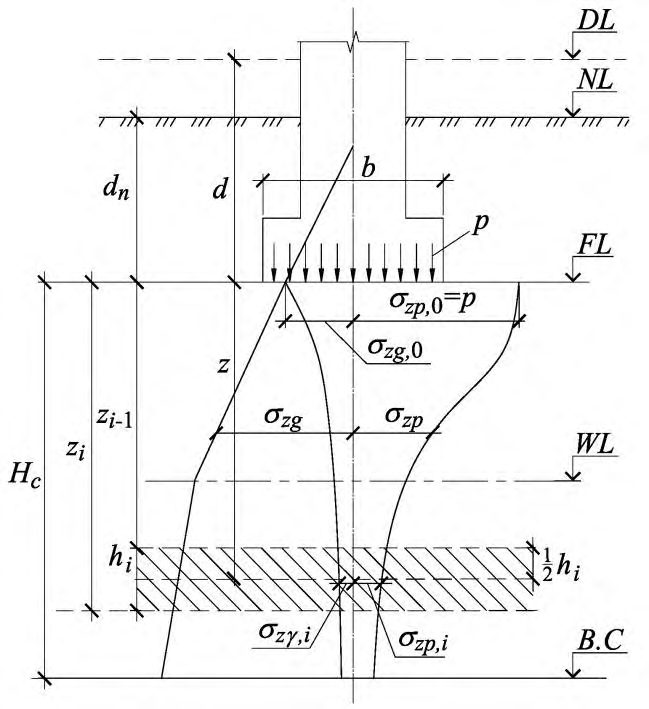
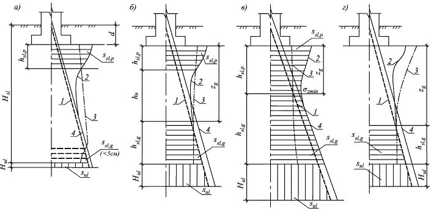
а-г - при отсутствии нагрузок на полы; д-з - при сплошной равномерно распределенной нагрузке интенсивностью q ; а и д -при центральной нагрузке; б и е при эксцентриситете нагрузки е < 1/ 6 ; в и ж -при е = 1/ 6 ; г и з при е > 1/ 6 (с частичным отрывом фундамента от грунта)
Рисунок 5.1 - Эпюры давлений по подошве фундаментов при центральной и внецентренной нагрузках
Для фундаментов колонн зданий, оборудованных мостовыми кранами грузоподъемностью 75 т и выше, а также для фундаментов колонн открытых крановых эстакад при кранах грузоподъемностью свыше 15 т, для сооружений башенного типа (труб, домен и других), а также для всех видов сооружений при расчетном сопротивлении грунта основания R < 150 кПа размеры фундаментов необходимо назначать такими, чтобы эпюра давлений была трапециевидной, с отношением краевых давлений р min / р max ≥ 0,25.
В остальных случаях для фундаментов зданий с мостовыми кранами допускается треугольная эпюра с относительным эксцентриситетом равнодействующей е, равным l/ 6 .
Для фундаментов бескрановых зданий с подвесным транспортным оборудованием допускается треугольная эпюра давлений с нулевой ординатой на расстоянии не более 1/4 длины подошвы фундамента, что соответствует относительному эксцентриситету равнодействующей е не более l/ 4 .
Требования, ограничивающие допустимый эксцентриситет, относятся к любым основным сочетаниям нагрузок.
Примечание - При значительных моментных нагрузках с целью уменьшения краевых давлений рекомендуется применение фундаментов с анкерами.
- при относительном эксцентриситете е/l ≤ 1/6
- при относительном эксцентриситете е/l >
1/6
где N сумма вертикальных нагрузок, действующих на основание, кроме веса фундамента и грунта на его обрезах, и определяемых для случая расчета основания по деформациям, кН;
А площадь подошвы фундамента, м² ;
mt - средневзвешенное значение удельных весов тела фундамента, грунта и пола, расположенных над подошвой фундамента; принимают равным 20 кН/м³ ; d толщина фундамента, м;
- М момент от равнодействующей всех нагрузок, действующих по подошве фундамента, найденных с учетом заглубления фундамента в грунте и перераспределяющего влияния верхних конструкций или без этого учета, кН·м;
W момент сопротивления площади подошвы фундамента, м³ ;
- С 0 - расстояние от точки приложения равнодействующей до края фундамента по его оси, м, вычисляемое по формуле
е эксцентриситет нагрузки по подошве фундамента, м, вычисляемый по формуле
где N, A, mt , W то же, что и в формуле (5.11).
Нагрузку на полы промышленных зданий q допускается принимать равной 20 кПа, если в технологическом задании на проектирование не указывается большее значение этой нагрузки.
Определение осадки основания фундаментов
где - безразмерный коэффициент, равный 0,8; σ zp,i - среднее значение вертикального нормального напряжения (далее вертикальное напряжение) от внешней нагрузки в i -м слое грунта по вертикали, проходящей через центр подошвы фундамента (см. 5.6.32), кПа; hi - толщина iго слоя грунта, см, принимаемая не более 0,4 ширины фундамента;
Еi - модуль деформации iго слоя грунта по ветви первичного нагружения, кПа; σ z γ, i - среднее значение вертикального напряжения в i -м слое грунта по вертикали, проходящей через центр подошвы фундамента, от собственного веса выбранного при отрывке котлована грунта (см. 5.6.33), кПа;
Ее,i -модуль деформации iго слоя грунта по ветви вторичного нагружения, кПа; п число слоев, на которые разбита сжимаемая толща основания.
При этом распределение вертикальных напряжений по глубине основания принимают в соответствии со схемой, приведенной на рисунке 5.2.
Примечания
1 При отсутствии опытных определений модуля деформации Ee,i для сооружений геотехнических категорий 1 и 2 допускается принимать Ee,i = 5 Еi
2 Средние значения напряжений σ zp,i и σ z ,i , в i -м слое грунта допускается вычислять как полусумму соответствующих напряжений на верхней zi1 и нижней zi границах слоя.
3 При возведении сооружения в отрываемом котловане следует различать три следующих значения вертикальных напряжений: σ zg - от собственного веса грунта до начала строительства; σ zu - после отрывки котлована; σ z - после возведения сооружения.
4 При определении средней осадки основания фундамента все используемые в формуле (5.16) величины допускается определять для вертикали, проходящей не через центр фундамента, а через точку, лежащую посередине между центром и углом (для прямоугольных фундаментов) или на расстоянии rc =( r 1+ r 2)/2 от центра, где r 1 - внутренний, а r 2 - внешний радиус круглого или кольцевого фундамента (для круглого фундамента r 1=0). s
5 Расчет осадок свайных фундаментов выполняется с учетом требований СП 24.13330.
DL отметка планировки; NL отметка поверхности природного рельефа; FL отметка подошвы фундамента; WL уровень подземных вод; В.С нижняя граница сжимаемой толщи; d и dn глубина заложения фундамента соответственно от уровня планировки и поверхности природного рельефа; b ширина фундамента; p - среднее давление под подошвой фундамента; σ zg и σ zg, 0 -вертикальное напряжение от собственного веса грунта на глубине z от подошвы фундамента и на уровне подошвы; σ zg и σ zg, 0 -вертикальное напряжение от внешней нагрузки на глубине z от подошвы фундамента и на уровне подошвы; -го слоя на
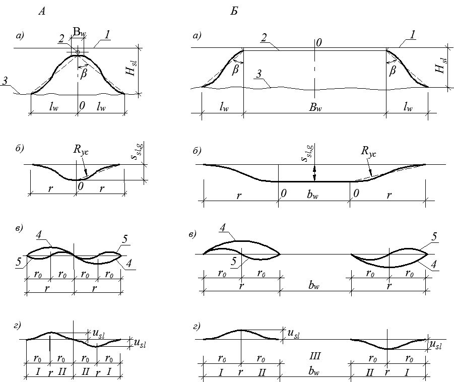
σ z ,i - вертикальное напряжение от собственного веса вынутого в котловане грунта в середине i глубине z от подошвы фундамента; Нс - глубина сжимаемой толщи
Рисунок 5.2 Схема распределения вертикальных напряжений в линейнодеформируемом полупространстве
где - коэффициент, принимаемый по таблице 5.8 в зависимости от относительной глубины ξ , равной 2 z / b ; р среднее давление под подошвой фундамента, кПа.
где - то же, что и в 5.6.32; σ zg, 0 - вертикальное напряжение от собственного веса грунта на отметке подошвы фундамента, кПа (при планировке срезкой σ zg, 0 = ΄d , при отсутствии планировки и планировке подсыпкой σ zg, 0 = ΄ dn, где ΄ - удельный вес грунта, кН/м³ , расположенного выше подошвы; d и dn, м - см. рисунок 5.2).
При этом в расчете σ z используются размеры в плане не фундамента, а котлована.
где , σ zp,i , h i , Ee,i и n - то же, что и в формуле (5.16).
где - коэффициент, принимаемый по таблице 5.8 в зависимости от значения ξ = z / b ; р то же, что и в формуле (5.17).
Таблица 5.8
| ξ | Коэффициент для фундаментов | Коэффициент для фундаментов | Коэффициент для фундаментов | Коэффициент для фундаментов | Коэффициент для фундаментов | Коэффициент для фундаментов | Коэффициент для фундаментов | Коэффициент для фундаментов |
|---|---|---|---|---|---|---|---|---|
| ξ | круглых | прямоугольных с соотношением сторон η = l / b, равным | прямоугольных с соотношением сторон η = l / b, равным | прямоугольных с соотношением сторон η = l / b, равным | прямоугольных с соотношением сторон η = l / b, равным | прямоугольных с соотношением сторон η = l / b, равным | прямоугольных с соотношением сторон η = l / b, равным | ленточных (η ≥ 10) |
| ξ | круглых | 1,0 | 1,4 | 1,8 | 2,4 | 3,2 | 5 | ленточных (η ≥ 10) |
| 0 | 1,000 | 1,000 | 1,000 | 1,000 | 1,000 | 1,000 | 1,000 | 1,000 |
| 0,4 | 0,949 | 0,960 | 0,972 | 0,975 | 0,976 | 0,977 | 0,977 | 0,977 |
| 0,8 | 0,756 | 0,800 | 0,848 | 0,866 | 0,876 | 0,879 | 0,881 | 0,881 |
| 1,2 | 0,547 | 0,606 | 0,682 | 0,717 | 0,739 | 0,749 | 0,754 | 0,755 |
| 1,6 | 0,390 | 0,449 | 0,532 | 0,578 | 0,612 | 0,629 | 0,639 | 0,642 |
| 2,0 | 0,285 | 0,336 | 0,414 | 0,463 | 0,505 | 0,530 | 0,545 | 0,550 |
| 2,4 | 0,214 | 0,257 | 0,325 | 0,374 | 0,419 | 0,449 | 0,470 | 0,477 |
| 2,8 | 0,165 | 0,201 | 0,260 | 0,304 | 0,349 | 0,383 | 0,410 | 0,420 |
| 3,2 | 0,130 | 0,160 | 0,210 | 0,251 | 0,294 | 0,329 | 0,360 | 0,374 |
| 3,6 | 0,106 | 0,131 | 0,173 | 0,209 | 0,250 | 0,285 | 0,319 | 0,337 |
| 4,0 | 0,087 | 0,108 | 0,145 | 0,176 | 0,214 | 0,248 | 0,285 | 0,306 |
| 4,4 | 0,073 | 0,091 | 0,123 | 0,150 | 0,185 | 0,218 | 0,255 | 0,280 |
| 4,8 | 0,062 | 0,077 | 0,105 | 0,130 | 0,161 | 0,192 | 0,230 | 0,258 |
| 5,2 | 0,053 | 0,067 | 0,091 | 0,113 | 0,141 | 0,170 | 0,208 | 0,239 |
| 5,6 | 0,046 | 0,058 | 0,079 | 0,099 | 0,124 | 0,152 | 0,189 | 0,223 |
| 6,0 | 0,040 | 0,051 | 0,070 | 0,087 | 0,110 | 0,136 | 0,173 | 0,208 |
|---|---|---|---|---|---|---|---|---|
| 6,4 | 0,036 | 0,045 | 0,062 | 0,077 | 0,099 | 0,122 | 0,158 | 0,196 |
| 6,8 | 0,031 | 0,040 | 0,055 | 0,069 | 0,088 | 0,110 | 0,145 | 0,185 |
| 7,2 | 0,028 | 0,036 | 0,049 | 0,062 | 0,080 | 0,100 | 0,133 | 0,175 |
| 7,6 | 0,024 | 0,032 | 0,044 | 0,056 | 0,072 | 0,091 | 0,123 | 0,166 |
| 8,0 | 0,022 | 0,029 | 0,040 | 0,051 | 0,066 | 0,084 | 0,113 | 0,158 |
| 8,4 | 0,021 | 0,026 | 0,037 | 0,046 | 0,060 | 0,077 | 0,105 | 0,150 |
| 8,8 | 0,019 | 0,024 | 0,033 | 0,042 | 0,055 | 0,071 | 0,098 | 0,143 |
| 9,2 | 0,017 | 0,022 | 0,031 | 0,039 | 0,051 | 0,065 | 0,091 | 0,137 |
| 9,6 | 0,016 | 0,020 | 0,028 | 0,036 | 0,047 | 0,060 | 0,085 | 0,132 |
| 10,0 | 0,015 | 0,019 | 0,026 | 0,033 | 0,043 | 0,056 | 0,079 | 0,126 |
| 10,4 | 0,014 | 0,017 | 0,024 | 0,031 | 0,040 | 0,052 | 0,074 | 0,122 |
| 10,8 | 0,013 | 0,016 | 0,022 | 0,029 | 0,037 | 0,049 | 0,069 | 0,117 |
| 11,2 | 0,012 | 0,015 | 0,021 | 0,027 | 0,035 | 0,045 | 0,065 | 0,113 |
| 11,6 | 0,011 | 0,014 | 0,020 | 0,025 | 0,033 | 0,042 | 0,061 | 0,109 |
| 12,0 | 0,010 | 0,013 | 0,018 | 0,023 | 0,031 | 0,040 | 0,058 | 0,106 |
Примечания
- 1 В таблице обозначено: b - ширина или диаметр фундамента, l - длина фундамента.
- 2 Для фундаментов, имеющих подошву в форме правильного многоугольника с площадью А, значения принимают как для круглых фундаментов радиусом r = . / А
- 3 Для промежуточных значений ξ и η коэффициенты определяют интерполяцией.
- а схема расположения рассчитываемого 1 и влияющего фундамента 2; б схема расположения фиктивных фундаментов с указанием знака напряжений σ zp,cj в формуле (5.21) под углом j -го фундамента
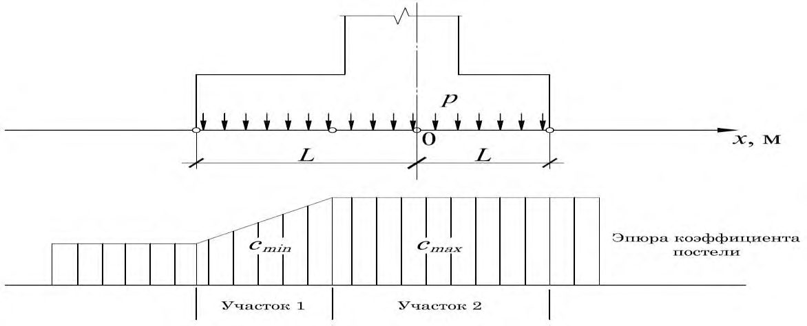
Рисунок 5.3 - Схема к определению вертикальных напряжений в основании рассчитываемого фундамента с учетом влияния соседнего фундамента методом угловых точек
где σ zp - то же, что и в формуле (5.17), кПа; σ zp,ai - вертикальные напряжения от соседнего фундамента или нагрузок; k число влияющих фундаментов или нагрузок.
где ' - средний удельный вес грунта, расположенного выше подошвы фундамента, кН/м³ ; dn - м, см. рисунок 5.2; n - номер слоя грунта, в котором расположена рассматриваемая точка;
i и hi -соответственно удельный вес, кН/м³ , и толщина i -го слоя грунта;
- zi -1 - глубина верхней границы i -го слоя грунта, отсчитываемая от подошвы фундамента (см. рисунок 5.2), м; u - поровое давление в рассматриваемой точке, кН/м² .
Для неводонасыщенных грунтов, а также для глинистых грунтов при коэффициенте фильтрации менее 1×10 -5 м/сут и показателе консистенции I L < 0,25 поровое давление принимается равным нулю ( u = 0).
Если в пределах глубины Нс , найденной по указанным выше условиям, залегает слой грунта с модулем деформации Е > 100 МПа, сжимаемую толщу допускается принимать до кровли этого грунта при его толщине в пределах габаритов здания не менее 3 м.
Если найденная по указанным выше условиям нижняя граница сжимаемой толщи находится в слое грунта с модулем деформации Е ≤ 7 МПа или такой слой залегает непосредственно ниже глубины z = Нс, то этот слой включают в сжимаемую толщу, а за Нс принимают минимальное из значений, соответствующих подошве слоя или глубине, где выполняется условие σ zp = 0,2 σ zg .
Определение крена фундамента
При определении кренов фундаментов, кроме того необходимо учитывать заглубление фундамента, жесткость надфундаментной конструкции, а также возможность увеличения эксцентриситета нагрузки изза наклона фундамента (сооружения).
ke коэффициент, принимаемый по таблице 5.9;
Е и v - соответственно модуль деформации, кПа, и коэффициент поперечной деформации грунта основания (значение v принимают для сооружений геотехнической категории 3 по результатам трехосных испытаний, геотехнических категорий 1 и 2 - по таблице 5.10); в случае неоднородного основания значение D принимают средним в пределах сжимаемой толщи в соответствии с требованиями 5.6.45;
N вертикальная составляющая равнодействующей всех нагрузок на фундамент в уровне его подошвы, кН;
- е эксцентриситет, м;
- а - диаметр круглого или сторона прямоугольного фундамента, м, в направлении которой действует момент; для фундамента с подошвой в форме правильного многоугольника площадью А принимают а = . / 2 A
Примечание - Крен фундамента, возникающий в результате неравномерности сжимаемости основания, следует определять численными методами.
Таблица 5.9
| Форма фундамента и направление действия | Коэффициент k e при η = l / b, равном | Коэффициент k e при η = l / b, равном | Коэффициент k e при η = l / b, равном | Коэффициент k e при η = l / b, равном | Коэффициент k e при η = l / b, равном | Коэффициент k e при η = l / b, равном | Коэффициент k e при η = l / b, равном |
|---|---|---|---|---|---|---|---|
| момента | 1 | 1,2 | 1,5 | 2 | 3 | 5 | 10 |
| Прямоугольный с моментом вдоль большей стороны | 0,50 | 0,57 | 0,68 | 0,82 | 1,17 | 1,42 | 2,00 |
| Прямоугольный с моментом вдоль меньшей стороны | 0,50 | 0,43 | 0,36 | 0,28 | 0,20 | 0,12 | 0,07 |
| Круглый | 0,75 | 0,75 | 0,75 | 0,75 | 0,75 | 0,75 | 0,75 |
Таблица 5.10
| Грунты | Коэффициент поперечной деформации v |
|---|---|
| Крупнообломочные грунты | 0,27 |
| Пески и супеси | 0,30-0,35 |
| Суглинки | 0,35 - 0,37 |
| Глины при показателе текучести I L : I L ≤ 0 | 0,20-0,30 |
где
| Грунты | Коэффициент поперечной деформации v |
|---|---|
| 0 < I L ≤ 0,25 | 0,30-0,38 |
| 0,25 < I L ≤ 1 | 0,38-0,45 |
| Примечание - Меньшие значения v применяют при большей плотности грунта. | Примечание - Меньшие значения v применяют при большей плотности грунта. |
где Ai площадь эпюры вертикальных напряжений от единичного давления под подошвой фундамента в пределах i -го слоя грунта. Допускается принимать Аi = σ zp,i hi (см. 5.6.31);
- Ei, vi , hi -соответственно модуль деформации, кПа, коэффициент поперечной деформации и толщина i -го слоя грунта, м;
Нc - сжимаемая толща, определяемая по 5.6.41, м;
- n число слоев, отличающихся значениями E и v в пределах сжимаемой толщи Нс .
Предельные деформации основания фундаментов
- а) технологических или архитектурных требований к деформации сооружения (изменение, проектных уровней и положений сооружения в целом, отдельных его элементов и оборудования, включая требования к нормальной работе лифтов, кранового оборудования, подъемных устройств элеваторов и т. п.), su,s ;
- б) требований к прочности, устойчивости и трещиностойкости конструкций, включая общую устойчивость сооружения, su,f .
Проверку соблюдения условия s ≤ s u,s проводят при разработке типовых и индивидуальных проектов в составе расчетов сооружения во взаимодействии с основанием после соответствующих расчетов конструкций сооружения по прочности, устойчивости и трещиностойкости.
Значение su,f допускается не устанавливать для сооружений, в конструкциях которых не возникают усилия от неравномерных осадок основания (например, различного рода шарнирных систем), а также для сооружений значительной жесткости и прочности (например, зданий башенного типа, домен) при соответствующем обосновании.
Примечания
1 Степень изменчивости сжимаемости основания α E определяют отношением наибольшего значения приведенного по глубине модуля деформации грунтов основания в пределах плана сооружения к наименьшему значению.
2 Среднее значение модуля деформации грунтов основания E ̅ в пределах плана сооружения определяют как средневзвешенное с учетом изменения сжимаемости грунтов по глубине и в плане сооружения.
Таблица 5.11
| Сооружения | Варианты грунтовых условий |
|---|---|
| 1 Производственные здания Одноэтажные с несущими конструкциями, малочувствительными к неравномерным осадкам (например, стальной или железобетонный каркас на отдельных фундаментах при шарнирном опирании ферм, ригелей), и с мостовыми кранами грузоподъемностью до 50 т включительно. Многоэтажные до шести этажей включительно с сеткой колонн не более 6 9 м. 2 Жилые и общественные здания Прямоугольной формы в плане без перепадов по высоте с полным каркасом и бескаркасные с несущими стенами из кирпича, крупных блоков или панелей: а) протяженные многосекционные высотой до 9 этажей включительно; б) несблокированные башенного типа высотой до 14 этажей включительно. | 1 Крупнообломочные грунты при содержании заполнителя менее 40 %. 2 Пески любой крупности, кроме пылеватых, плотные и средней плотности. 3 Пески любой крупности, только плотные. 4 Пески пылеватые при коэффициенте пористости e ≤ 0,65. 5 Супеси при e ≤ 0,65, суглинки при e ≤ 0,85 и глины при e ≤ 0,95, если диапазон изменения коэффициента пористости этих грунтов на площадке не превышает 0,2, a IL ≤ 0,5. 6 Пески, кроме пылеватых при e ≤ 0,7 в сочетании с глинистыми грунтами при e < 0,5 и IL < 0,5 независимо от порядка их залегания. |
Примечания
1 Таблицей допускается пользоваться для сооружений, в которых площади отдельных фундаментов под несущие конструкции отличаются не более чем в два раза, а также для сооружений иного назначения при аналогичных конструкциях и нагрузках.
2 Таблица не распространяется на производственные здания с нагрузками на полы свыше 20 кПа.
5.7Расчет оснований по несущей способности
где F расчетная нагрузка на основание, кН, определяемая в соответствии с требованиями 5.2;
Fu сила предельного сопротивления основания, кН;
с
- коэффициент условий работы, принимаемый: для песков, кроме пылеватых…………………………………..1,0 для песков пылеватых, а также глинистых грунтов в стабилизированном состоянии…………………………………0,9 для глинистых грунтов в нестабилизированном состоянии....0,85 для скальных грунтов: невыветрелых и слабовыветрелых…………………………….1,0 выветрелых……………………………………………………...0,9 сильновыветрелых………………………………………………0,8;
- n - коэффициент надежности по ответственности, принимаемый равным 1,2; 1,15 и 1,10 соответственно для сооружений геотехнических категорий 3, 2 и 1.
Примечание - В случае неоднородных грунтов средневзвешенное значение с принимают в пределах толщины b 1 + 0,1 b (но не более 0,5 b ) под подошвой фундамента, где b сторона фундамента, м, в направлении которой предполагается потеря устойчивости, а b 1 = 4 м.
где Rc - расчетное значение предела прочности на одноосное сжатие скального грунта, кПа; b ´ и l ´ - соответственно приведенные ширина и длина фундамента, м, вычисляемые по формулам:
здесь eb и еl -соответственно эксцентриситеты приложения равнодействующей нагрузок в направлении поперечной и продольной осей фундамента, м.
где I , и c I - соответственно расчетные значения угла внутреннего трения и удельного сцепления грунта (см. 5.3).
где σ t и u - значение полного нормального напряжения и порового давления, соответственно;
I и c I - соответствуют стабилизированному состоянию грунтов основания и определяются по результатам консолидированного среза или трехосного сжатия.
Избыточное давление в поровой воде допускается определять методами фильтрационной консолидации грунтов с учетом скорости приложения нагрузки на основание.
- плоский сдвиг по подошве;
- глубинный сдвиг;
- смешанный сдвиг (плоский сдвиг по части подошвы и глубинный сдвиг по поверхности, охватывающей оставшуюся часть подошвы).
Необходимо учитывать форму фундамента и характер его подошвы, наличие связей фундамента с другими элементами сооружения, напластование и свойства грунтов основания.
Проверку устойчивости основания отдельного фундамента следует проводить с учетом работы основания всего сооружения в целом.
где b ´ и l ´ - то же, что и в формуле (5.29), при этом буквой b обозначена сторона фундамента, в направлении которой предполагается потеря устойчивости основания;
N , Nq , Nc -безразмерные коэффициенты несущей способности, определяемые по таблице 5.12 в зависимости от расчетного значения угла внутреннего трения грунта I и угла наклона к вертикали δ равнодействующей внешней нагрузки на основание F в уровне подошвы фундамента;
I и ´I - расчетные значения удельного веса грунтов, кН/м³ , находящихся в пределах возможной призмы выпирания соответственно ниже и выше подошвы фундамента (при наличии подземных вод определяют с учетом взвешивающего действия воды для грунтов, находящихся выше водоупора);
- с I - расчетное значение удельного сцепления грунта, кПа;
- d -глубина заложения фундамента, м (в случае неодинаковой вертикальной пригрузки с разных сторон фундамента принимают значение d, соответствующее наименьшей пригрузке, например, со стороны подвала);
- ξ , ξ q , ξ c - коэффициенты формы фундамента, вычисляемые по формулам:
l и b - соответственно длина и ширина подошвы фундамента, м, принимаемые в случае внецентренного приложения равнодействующей нагрузки равными приведенным значениям l ´ и b ´, определяемым по формуле (5.29).
Если η = l / b < 1, в формулах (5.33) следует принимать η = 1.
Таблица 5.12
| Угол внутреннего трения грунта I , град. | Обозначение коэффициентов | Коэффициенты несущей способности N , N q и N c при углах наклона к вертикали равнодействующей внешней нагрузки δ, град, равных | Коэффициенты несущей способности N , N q и N c при углах наклона к вертикали равнодействующей внешней нагрузки δ, град, равных | Коэффициенты несущей способности N , N q и N c при углах наклона к вертикали равнодействующей внешней нагрузки δ, град, равных | Коэффициенты несущей способности N , N q и N c при углах наклона к вертикали равнодействующей внешней нагрузки δ, град, равных | Коэффициенты несущей способности N , N q и N c при углах наклона к вертикали равнодействующей внешней нагрузки δ, град, равных | Коэффициенты несущей способности N , N q и N c при углах наклона к вертикали равнодействующей внешней нагрузки δ, град, равных | Коэффициенты несущей способности N , N q и N c при углах наклона к вертикали равнодействующей внешней нагрузки δ, град, равных | Коэффициенты несущей способности N , N q и N c при углах наклона к вертикали равнодействующей внешней нагрузки δ, град, равных | Коэффициенты несущей способности N , N q и N c при углах наклона к вертикали равнодействующей внешней нагрузки δ, град, равных | Коэффициенты несущей способности N , N q и N c при углах наклона к вертикали равнодействующей внешней нагрузки δ, град, равных |
|---|---|---|---|---|---|---|---|---|---|---|---|
| Угол внутреннего трения грунта I , град. | Обозначение коэффициентов | 0 | 5 | 10 | 15 | 20 | 25 | 30 | 35 | 40 | 45 |
| 0 | N N q N c | 0 1,00 5,14 | - | - | - | - | - | - | - | - | - |
| 5 | N N q N c | 0,20 1,57 6,49 | 2,93 0,26 0,05 | δ´ = 4,9 | - | - | - | - | - | - | - |
| 10 | N N q N c | 0,60 2,47 8,34 | 0,42 2,16 6,57 | 3,38 1,60 0,12 | δ´ = 9,8 | - | - | - | - | - | - |
| 15 | N | 1,35 | 1,02 | 0,61 | δ´ = | - | - | - | - | - |
| Угол внутреннего трения грунта I , град. | Обозначение коэффициентов | Коэффициенты несущей способности N , N q и N c при углах наклона к вертикали равнодействующей внешней нагрузки δ, град, равных | Коэффициенты несущей способности N , N q и N c при углах наклона к вертикали равнодействующей внешней нагрузки δ, град, равных | Коэффициенты несущей способности N , N q и N c при углах наклона к вертикали равнодействующей внешней нагрузки δ, град, равных | Коэффициенты несущей способности N , N q и N c при углах наклона к вертикали равнодействующей внешней нагрузки δ, град, равных | Коэффициенты несущей способности N , N q и N c при углах наклона к вертикали равнодействующей внешней нагрузки δ, град, равных | Коэффициенты несущей способности N , N q и N c при углах наклона к вертикали равнодействующей внешней нагрузки δ, град, равных | Коэффициенты несущей способности N , N q и N c при углах наклона к вертикали равнодействующей внешней нагрузки δ, град, равных | Коэффициенты несущей способности N , N q и N c при углах наклона к вертикали равнодействующей внешней нагрузки δ, град, равных | Коэффициенты несущей способности N , N q и N c при углах наклона к вертикали равнодействующей внешней нагрузки δ, град, равных | Коэффициенты несущей способности N , N q и N c при углах наклона к вертикали равнодействующей внешней нагрузки δ, град, равных |
|---|---|---|---|---|---|---|---|---|---|---|---|
| Угол внутреннего трения грунта I , град. | Обозначение коэффициентов | 0 | 5 | 10 | 15 | 20 | 25 | 30 | 35 | 40 | 45 |
| Угол внутреннего трения грунта I , град. | N q N c | 3,94 10,98 | 3,45 9,13 | 2,84 6,88 | 3,94 2,06 0,21 | 14,5 | |||||
| 20 | N N q N c | 2,88 6,40 14,84 | 2,18 5,56 12,53 | 1,47 4,64 10,02 | 0,82 3,64 7,26 | 4,65 2,69 0,36 | δ´ = 18,9 | - | - | - | - |
| 25 | N N q N c | 5,87 10,66 20,72 | 4,50 9,17 17,53 | 3,18 7,65 14,26 | 2,00 6,13 10,99 | 1,05 4,58 7,68 | 5,58 3,60 0,58 | δ´ = 22,9 | - | - | - |
| 30 | N N q N c | 12,39 18,40 30,14 | 9,43 15,63 25,34 | 6,72 12,94 20,68 | 4,44 10,37 16,23 | 2,63 7,96 12,05 | 1,29 5,67 8,09 | 6,85 4,95 0,95 | δ´ = 26,5 | - | - |
| 35 | N N q N c | 27,50 33,30 46,12 | 20,58 27,86 38,36 | 14,63 22,77 31,09 | 9,79 18,12 24,45 | 6,08 13,94 18,48 | 3,38 10,24 13,19 | 8,63 7,04 1,60 | δ´ = 29,8 | - | - |
| 40 | N N q N | 66,01 64,19 75,31 | 48,30 52,71 61,63 | 33,84 42,37 49,31 | 22,56 33,26 38,45 | 14,18 25,39 29,07 | 8,26 18,70 21,10 | 4,30 13,11 14,43 | 11,27 10,46 2,79 | δ´ = 32,7 | - |
| 45 | c N N q | 177,61 134,87 | 126,09 108,24 | 86,20 85,16 | 56,50 65,58 | 32,26 49,26 | 20,73 35,93 | 11,26 25,24 | 5,45 16,82 | 16,42 5,22 | δ´ = 35,2 |
| 45 | N c | 133,87 | 107,23 | 84,16 | 64,58 | 48,26 | 34,93 | 24,24 | 15,82 | 15,82 |
Примечания
1 При промежуточных значениях I и δ коэффициенты N , Nq и Nc допускается определять интерполяцией.
- 2 В фигурных скобках приведены значения коэффициентов несущей способности, соответствующие предельному значению угла наклона нагрузки δ´, исходя из условия (5.35).
Угол наклона к вертикали равнодействующей внешней нагрузки на основание определяют из условия
где Fh и Fv соответственно горизонтальная и вертикальная составляющие внешней нагрузки F на основание в уровне подошвы фундамента, кН.
Расчет по формуле (5.32) следует выполнять, если соблюдается условие
Примечания
1 При использовании формулы (5.32) в случае неодинаковой пригрузки с разных сторон фундамента в составе горизонтальных нагрузок следует учитывать активное давление грунта.
2 Если условие (5.35) не выполняется, следует проводить расчет фундамента на сдвиг по подошве (5.7.12).
- 3 При соотношении сторон фундамента η > 5 фундамент рассматривается как ленточный и коэффициенты ξ , ξ q и ξ c принимают равными единице.
где Σ Fs,a и Σ Fs,r - суммы проекций на плоскость скольжения соответственно расчетных сдвигающих и удерживающих сил, кН, определяемых с учетом активного и пассивного давлений грунта на боковые грани фундамента, коэффициента трения подошвы фундамента по грунту, а также силы гидростатического противодавления (при уровне подземных вод выше подошвы фундамента);
- c и n - то же, что и в формуле (5.27).
- нарушения условия (5.35) применимости формулы (5.32);
- наличия слоя грунта с низкими значениями прочностных характеристик непосредственно под подошвой фундамента;
- в случаях, указанных в 5.7.14.
- а) вертикальную составляющую силы предельного сопротивления основания ленточного фундамента nu , кН/м, по формуле
где b
- q - пригрузка с той стороны фундамента, в направлении которой действует горизонтальная составляющая нагрузки, кПа; c I = сu - то же, что и в 5.7.5;
здесь f h -горизонтальная составляющая расчетной нагрузки на 1 м длины фундамента с учетом активного давления грунта, кН/м.
б) силу предельного сопротивления основания прямоугольного ( l ≤ 3 b ) фундамента при действии на него вертикальной нагрузки допускается вычислять по формуле (5.32), полагая I = 0, ξ c = 1 + 0,11 / η, c I = c u .
Во всех случаях, если на фундамент действуют горизонтальные нагрузки и основание сложено грунтами в нестабилизированном состоянии, следует проводить расчет фундамента на сдвиг по подошве (5.7.12).
5.8Особенности проектирования оснований при реконструкции сооружений
В проектах реконструируемых сооружений должны приниматься такие решения по устройству или усилению оснований и фундаментов, при которых наиболее полно используются несущая способность существующих конструкций фундаментов и деформационно-прочностные характеристики грунтов.
где sad -дополнительная осадка основания фундамента (совместная дополнительная деформация основания и сооружения), определяемая в соответствии с требованиями 5.6 с учетом совокупности техногенных воздействий, связанных с увеличением (снижением) нагрузки на основание, технологии и последовательности строительных работ; sad,u -предельное значение дополнительной осадки основания фундамента (предельное значение совместной дополнительной деформации основания и сооружения), устанавливаемое при проектировании реконструкции в соответствии с категорией технического состояния сооружения (приложение Д) и с учетом требований 5.6.46-5.6.48.
Примечания
1 Для определения совместной деформации основания и реконструируемого сооружения sad допускается использовать методы, указанные в 5.1.4.
2 При расчете оснований реконструируемых сооружений по деформациям условие (5.40) следует выполнять в т. ч. для параметров, указанных в 5.6.4.
Если реконструкция вызывает увеличение нагрузок, необходимо оценивать несущую способность основания, особенно при наличии фундаментов с глубиной заложения менее 0,5 м.
5.9Мероприятия по уменьшению деформаций оснований и влияния
их на сооружения
При проектировании следует также учитывать возможность регулирования усилий в конструкциях сооружения, возникающих при его взаимодействии с основанием (5.9.5), а также регулирования напряженнодеформированного состояния грунта основания (5.9.7).
Выбор одного или комплекса мероприятий следует проводить с учетом требований 4.2.
- а) уплотнением грунтов (трамбованием тяжелыми трамбовками, устройством грунтовых свай, вытрамбовыванием котлованов под фундаменты, предварительным замачиванием грунтов, использованием энергии взрыва, глубинным гидровиброуплотнением, вибрационными машинами, катками и т. п.);
- б) полной или частичной заменой в основании (в плане и по глубине) грунтов с неудовлетворительными свойствами подушками из песка, гравия, щебня и т. п.;
- в) устройством насыпей (отсыпкой или гидронамывом);
- г) закреплением грунтов (инъекционным, электрохимическим, буросмесительным, термическим и другими способами);
- д) введением в грунт специальных добавок (например, засолением грунта или пропиткой его нефтепродуктами для ликвидации пучинистых свойств);
- е) армированием грунта (введением специальных пленок, сеток и т. п.) согласно требованиям 6.10.
- а) рациональную компоновку сооружения в плане и по высоте;
- б) повышение прочности и пространственной жесткости сооружений, достигаемое усилением конструкций, особенно конструкций фундаментноподвальной части, в соответствии с результатами расчета сооружения во взаимодействии с основанием (введение дополнительных связей в каркасных конструкциях, устройство железобетонных или армокаменных поясов, разрезка сооружений на отсеки и т. п.);
- в) увеличение податливости сооружений (если это позволяют технологические требования) за счет применения гибких или разрезных конструкций;
- г) устройство приспособлений для выравнивания конструкций сооружения и рихтовки технологического оборудования.
Примечания
- 1 Габариты приближения к строительным конструкциям подвижного технологического оборудования (мостовых кранов, лифтов и т. п.) должны обеспечивать их нормальную эксплуатацию с учетом возможных деформаций основания.
2 Для обеспечения нормальной эксплуатации лифтов многоэтажных зданий лифтовые шахты необходимо проектировать с учетом крена сооружения.
- размещение сооружения на площади застройки с учетом ее инженерногеологического строения и возможных источников вредных влияний (линз слабых грунтов, старых горных выработок, карстовых полостей, внешних водоводов и т. п.);
- применение соответствующих конструкций фундаментов (фундаментов с малой боковой поверхностью на подрабатываемых территориях, при наличии в основании пучинистых грунтов и др.);
- засыпка пазух и устройство подушек под фундаментами из материалов, обладающих малым сцеплением и трением, применение специальных антифрикционных покрытий, отрывка временных компенсационных траншей для уменьшения усилий от горизонтальных деформаций оснований (например, в районах горных выработок);
- регулирование сроков замоноличивания стыков сборных и сборномонолитных конструкций;
- обоснованная скорость и последовательность возведения отдельных частей сооружения;
- устройство разделительных стенок между существующими и возводимым сооружением.
При проектировании сооружений с учетом возможности их выравнивания с помощью домкратов, а также при выравнивании эксплуатируемых сооружений следует выполнять расчет конструкций на воздействие неравномерных деформаций основания в стадии выравнивания. Расчетом на выравнивание необходимо проверить несущую способность и устойчивость конструкций фундаментов подвальной части зданий, воспринимающих сосредоточенную нагрузку от выравнивающих устройств, и глубину заложения фундаментов, включая проверку на устойчивость основания при передаче на него давления от выравнивающих устройств.
- нагнетанием в ограниченный объем грунта твердеющего раствора (компенсационное нагнетание);
- путем устройства в грунте пневматических конструкций, способных расширяться в грунте;
- обжатием грунта атмосферным давлением (вакуумирование) и др.;
- обжатием грунтов домкратами при выравнивании сооружений.
6Особенности проектирования оснований сооружений, возводимых на специфических грунтах и в особых условиях
6.1Просадочные грунты
- г) горизонтальные перемещения основания usl в пределах криволинейной части просадочной воронки при просадке грунтов от собственного веса; д) дополнительные осадки подстилающего просадочную толщу грунтов, происходящие за счет повышения напряженного состояния грунтового массива, снижения модуля деформации грунтов при повышении их влажности (6.1.12).
Примечание - Просадку грунтов учитывают при относительной просадочности sl ≥ 0,01. а - просадка от собственного веса ssl , g отсутствует (не превышает 5 см), возможна только просадка от внешней нагрузки ssl , p в верхней зоне просадки hsl , p (I тип грунтовых условий); б , в, г - возможна просадка от собственного веса ssl , g в нижней зоне просадки hsl , g , начиная с глубины zg (тип грунтовых условий II); б верхняя и нижняя зоны не сливаются, имеется нейтральная зона hп ; в - верхняя и нижняя зоны просадки сливаются; г - просадка от внешней нагрузки отсутствует
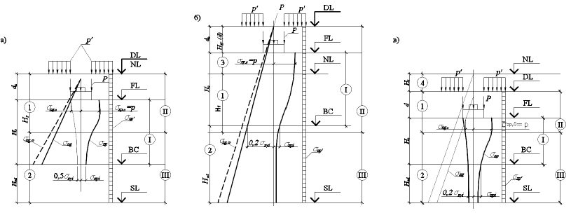
Рисунок 6.1 Схемы к расчету просадок грунта в основании фундамента
- максимальной, средней просадкой (см. 6.1.12);
- относительной разностью просадок Δ ssl / L ( L - расстояние между точками по длине участка или между фундаментами);
- наклоном поверхности основания или креном фундаментов (сооружения) i ;
- кривизной изгибаемого участка основания и сооружения или выгибом основания f / L ( f - прогиб, L - длина однозначного изгибаемого участка основания или сооружения).
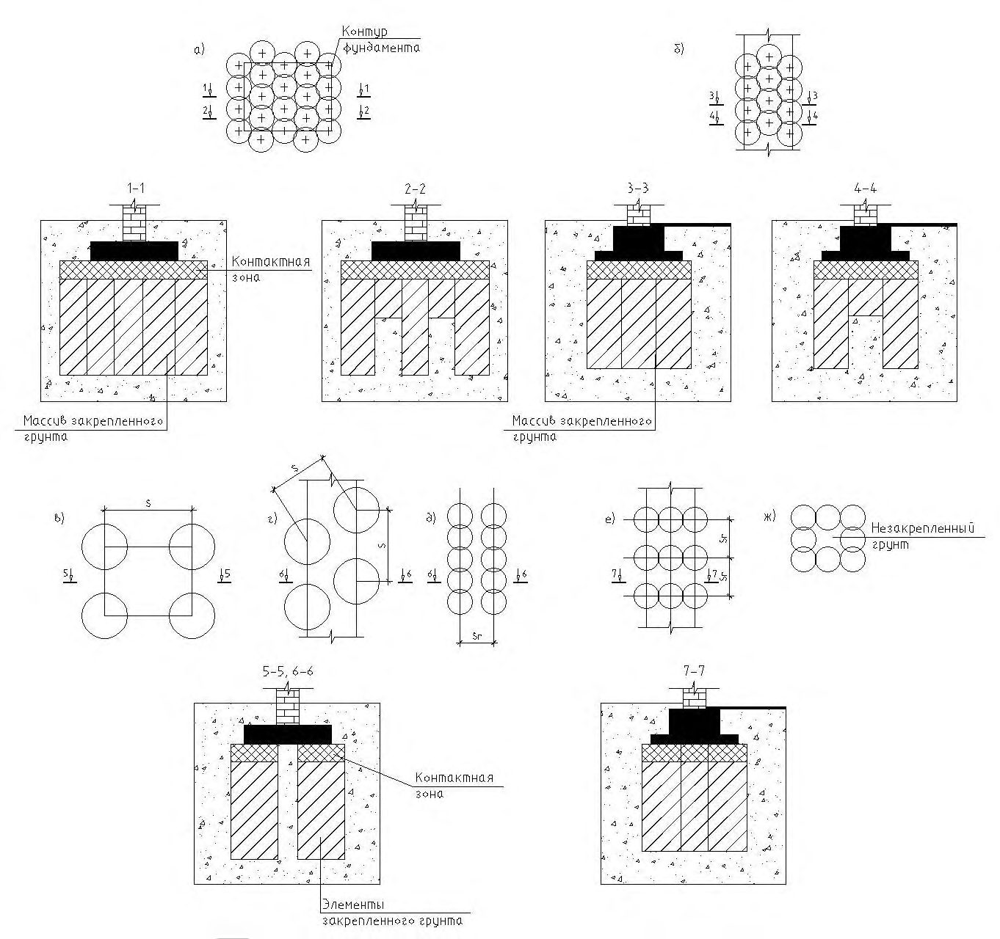
А - линейный источник замачивания; Б - площадной источник замачивания; а - поперечный разрез зоны увлажнения; б - кривая просадки поверхности грунта; в - кривые наклонов ( 4 ) и кривизны ( 5 ) поверхности; г - кривые горизонтальных перемещений поверхности грунта; 1 - положение земной поверхности; 2 -площадь-источник замачивания; 3 - нижняя граница растекания воды; Bw - ширина замачиваемой площади; bw - ширина горизонтального участка просадки; - угол растекания воды в стороны; Нsl - просадочная толща; r - расчетная длина криволинейного участка просадки от собственного веса грунта; lw - ширина зоны растекания воды; usl - горизонтальные перемещения земной поверхности; I и II - зоны соответственно разуплотнения и уплотнения грунта; r 0 - ширина зон соответственно уплотнения и разуплотнения грунта
Рисунок 6.2 - Общий характер развития просадочных деформаций на поверхности от собственного веса грунта
I -зона горизонтального разуплотнения (растяжения) грунта с возникновением в нем клинообразных просадочных трещин, располагающейся на переферийных частях участков неравномерной просадки грунтов от собственного веса, в пределах которой горизонтальные перемещения направлены в стороны от источников залегания;
II - зона горизонтального уплотнения (сжатия) грунта возникает вблизи и под источником замачивания, в которой горизонтальные перемещения направлены также в сторону источника замачивания.
- характер планировки территории (наличие выемок и срезки или насыпей и подсыпок, которые оказывают влияние на напряженное состояние грунтов основания, величину просадочной толщи hsl , а также на характер и величину просадок);
- возможные виды, размеры и места расположения источников замачивания грунтов; конструктивные особенности сооружения, в частности наличие тоннелей, подвалов под частью сооружения и т. п.;
- дополнительные нагрузки на глубокие фундаменты, уплотненные и закрепленные массивы от сил негативного трения, возникающих при просадках грунтов от собственного веса.
При замачивании сверху больших площадей (ширина замачиваемой площади Bw равна или превышает просадочную толщу Hsl) и замачивании снизу за счет подъема уровня подземных вод полностью проявляется просадка от собственного веса ssl,g (6.1.16), а при замачивании сверху малых площадей (Bw < Hsl ) проявляется только ее часть s ´ sl,g (6.1.22).
Примечание - При определении неравномерности просадок грунтов следует учитывать возможные наиболее неблагоприятные виды и места расположения источников замачивания по отношению к рассчитываемому фундаменту или сооружению в целом.
где γ с - коэффициент условий работы боковых поверхностей с грунтом, принимаемый равным 0,6; h и u - соответственно высота и периметр заглубленной подземной части сооружения или фундамента, м;
- f n - расчетное сопротивление грунта по площади боковой поверхности сооружения или фундамента, принимаемое по СП 24.13330 (со знаком минус) на глубине 0,5 h .
- б) для свайных фундаментов по СП 24.13330.
Деформации основания определяют суммированием по формулам:
где sp и Δ sp - осадки и разность осадок основания от нагрузки фундамента, определяемые без учета просадочных свойств грунтов исходя из деформационных характеристик грунтов при установившейся влажности w , принимаемой равной природной влажности если w ˃ wp и влажности на границе раскатывания (пластичности) wp , если w ˂ wp ; ssl,p и Δ ssl,p - просадка и разность просадок основания фундаментов от его нагрузки в верхней зоне hsl,p (см. рисунок 6.1), определяемые по формулам (6.4) и (6.5);
- ssl,g и Δ ssl,g - просадка и разность просадок основания от собственного веса грунта в нижней зоне просадки hsl,g (см. рисунок 6.1), вычисляемые по формуле (6.4); sul и Δ sul - дополнительная осадка и разность осадок подстилающих просадочную толщу грунтов в зоне дополнительного их сжатия Hul (см. рисунок 6.1) определяемые по 6.1.
Примечание - Крен, наклон, прогиб, кривизна и радиус кривизны основания допускается определять по формулам, аналогичным формуле (6.2).
- а) начальному просадочному давлению psl при устранении возможности просадки грунтов от внешней нагрузки путем снижения давления по подошве фундамента;
- б) значению, вычисленному по формуле (5.7) с использованием расчетных значений прочностных характеристик ( II и c II) в водонасыщенном состоянии.
При невозможности замачивания просадочных грунтов расчетное сопротивление грунта основания R вычисляют по формуле (5.7) с использованием прочностных характеристик этих грунтов при установившейся влажности (6.1.25).
При определении расчетного сопротивления грунта основания при возможности его замачивания до полного водонасыщения коэффициенты условий работы с 1 и с 2 принимают по таблице 5.4 как для глинистых грунтов с показателем текучести I L , соответствующим водонасыщенному состоянию грунта, но не менее 0,5.
Указанными значениями R 0 допускается пользоваться также для назначения окончательных размеров фундаментов сооружений пониженного уровня ответственности, в которых отсутствует мокрый процесс.
где sl,i - относительная просадочность i -го слоя грунта, определяемая в соответствии с 6.1.6; hi - толщина i -го слоя, см; ksl,i -коэффициент, определяемый в соответствии с 6.1.18; п число слоев, на которое разбита зона просадки hsl , принимаемое в соответствии с 6.1.20.
где hn,p и hsat,p -высота образца, см, соответственно природной влажности и после его полного водонасыщения (w = wsat ) при давлении р, кПа, равном вертикальному напряжению на рассматриваемой глубине от внешней нагрузки и собственного веса грунта р = σ zp + σ zg при определении просадки грунта в верхней зоне hsl,p просадки; при определении просадки грунта в нижней зоне hsl,g просадки грунта от собственного веса (см. рисунок 6.1); hn,g - высота, см, того же образца природной влажности при р = σ zg .
Значение sl может быть определено также в полевых условиях путем замачивания опытных котлованов и по испытаниям грунта штампом с замачиванием.
где р - среднее давление под подошвой фундамента, кПа; psl,i - начальное просадочное давление грунта i -го слоя, кПа, определяемое в соответствии с 6.1.17; р 0 - давление, равное 100 кПа.
При 3 м < b < 12 м ksl,i определяют интерполяцией.
При определении просадки грунта от собственного веса следует принимать ksl = 1 при Hsl ≤ 15 м и ksl = 1,25 при Hsl ≥ 20 м, при промежуточных значениях Hsl коэффициент ksl определяют интерполяцией.
- при лабораторных испытаниях грунтов в компрессионном приборе давлению, при котором относительная просадочность sl равна 0,01;
- при полевых испытаниях штампами предварительно замоченных грунтов - давлению, равному точке перегиба на графике «нагрузка-осадка»;
- при замачивании грунтов в опытных котлованах - вертикальному напряжению от собственного веса грунта на глубине, начиная с которой происходит просадка грунта от собственного веса.
- толщине верхней зоны просадочной толщи hsl,p при определении просадки грунта от внешней нагрузки ssl,p (6.1.5), при этом нижняя граница указанной зоны соответствует глубине, где σ z = σ zp + σ zg = рsl (рисунок 6.1 а, б) или глубине, где значение σ z минимально, если σ z, min > psl (рисунок 6.1, в ); толщине нижней зоны просадочной толщи hsl,g при определении просадки грунта от собственного веса ssl,g , (6.1.5), т.е. начиная с глубины zg , где σ z = psl , или значение σ z минимально, если σ z, min > psl , и до нижней границы просадочной толщи.
При расчете просадок ssl,p и ssl,q по формуле (6.3) учитывают только слои грунта, относительная просадочность которых при фактическом напряжении от σ z = σ zp + σ zg или только от σ zq (см. рисунок 6.1) sl ≥ 0,01. Слои, в которых sl < 0,01, исключают из рассмотрения.
Возможную просадку грунта от собственного веса s ´ sl,g , см, при замачивании из точечных или линейных источников (см. 6.1.8) сверху малых площадей (ширина замачиваемой площади Bw меньше размера просадочной толщи Hsl ) вычисляют по формуле
где ssl,g - максимальное значение просадки грунта от собственного веса, см, определяемое в соответствии с 6.1.15.
где σ z γ ,i и σ´ z γ ,i - средние значения вертикальных напряжений в i -м слое грунта от его собственного веса соответственно при природной влажности и полном водонасыщении, зона дополнительного сжатия Hul подстилающих грунтов; hul,i - толщина i -го слоя грунта, на которые разделена зона Hul; σ´ ul , z γ ,i - среднее значение дополнительного вертикального напряжения в i -м слое подстилающего грунта при полном водонасыщении при суммарных давлениях от собственного веса грунта, веса планировочной насыпи; веса сооружения с учетом нагрузок на полы по грунту; технологического оборудования и т. п., а также увеличение собственного веса просадочного грунта при уплотнении, закреплении, повышении его влажности до полного водонасыщения и влияния других факторов;
E 0, i и Eω , i -модули деформаций i -го слоя подстилающего грунта при полном водонасыщении и природной влажности.
- модуль деформации подстилающих водонасыщенных грунтов E ≥ 30 МПа, или влажных E ≥ 25 МПа при условии снижения его при полном водонасыщении не менее Ew = 20 МПа;
- дополнительные вертикальные напряжения σ z γ ,i = 0,1 σ zq , где σ zq вычисляют по формуле (5.23).
- а) устранение просадочных свойств грунтов в пределах всей просадочной толщи или только в ее верхней части (6.1.27);
- б) прорезку просадочной толщи фундаментами, в том числе свайными и массивами из закрепленного грунта (6.1.27);
- в) комплекс мероприятий, включающий частичное устранение просадочных свойств грунтов, водозащитные и конструктивные мероприятия (5.9).
В грунтовых условиях типа II наряду с устранением просадочных свойств грунтов или прорезкой просадочной толщи фундаментами глубокого заложения следует предусматривать водозащитные мероприятия, а также соответствующие компоновку генплана и вертикальную планировку застраиваемого участка.
Выбор мероприятий следует проводить с учетом типа грунтовых условий, вида возможного замачивания, расчетной просадки, взаимосвязи проектируемых сооружений с сооружениями окружающей застройки в соответствии с требованиями разделов 4 и 9.
- в грунтовых условиях типа I - сопротивление грунта по боковой поверхности фундаментов при выполнении их в вытрамбованных котлованах из забивных блоков, в глубоких щелях, буровых скважинах, а также для фундаментов в опалубке, в случаях выполнения обратной засыпки котлованов по требованиям СП 45.13330.
- грунтовых условиях типа II - нагружающее (негативное) трение грунта по боковой поверхности фундаментов, возникающее при просадке грунтов от собственного веса.
Снижение нагружающего (негативного) трения по боковой поверхности фундаментов достигается путем устройства швов скольжения из эластичных материалов, совмещая их с гидроизоляцией, либо глубоких прорезей, заполненных глинистым грунтом (типа пасты) с числом пластичности I p > 0,17.
6.2Набухающие грунты
Необходимо учитывать, что способностью набухать при увеличении влажности обладают некоторые виды шлаков (например, шлаки электроплавильных производств), а также обычные глинистые грунты (не набухающие при увеличении влажности), если они замачиваются химическими отходами производств (например, растворами серной кислоты).
Возможность набухания шлаков при их увлажнении и глинистых грунтов при замачивании химическими отходами производств устанавливают опытным путем в лабораторных или полевых условиях.
Указанные характеристики определяют в соответствии с 6.2.7, 6.2.10 и 6.2.16.
- набухания грунтов за счет подъема уровня подземных вод или инфильтрации -увлажнения грунтов производственными или поверхностными водами;
- набухания грунтов за счет накопления влаги под сооружениями в ограниченной по глубине зоне вследствие нарушения природных условий испарения при застройке и асфальтировании территории (экранирование поверхности);
- набухания и усадки грунта в верхней части зоны аэрации - за счет изменения водно-теплового режима (сезонных климатических факторов);
- усадки за счет высыхания от воздействия тепловых источников.
Примечание - При проектировании заглубленных частей сооружений необходимо учитывать горизонтальное давление, возникающее при набухании и усадке грунтов.
где с - коэффициент условий работы, равный 0,85; ksw -коэффициент, зависящий от интенсивности набухания и принимаемый по таблице 6.1; p max ,h -максимальное горизонтальное давление, определяемое в лабораторных условиях, кПа.
Таблица 6.1
| Интенсивность набухания за 1 сут,% | 0,1 | 0,2 | 0,3 | 0,4 | 0,5 | 0,6 | 0,7 |
|---|---|---|---|---|---|---|---|
| k sw | 1,40 | 1,25 | 1,12 | 1,05 | 1,02 | 1,01 | 1,00 |
Деформации основания в результате набухания или усадки грунта следует определять путем суммирования деформаций отдельных слоев основания согласно 6.2.9 и 6.2.15.
При определении деформаций основания осадка его от внешней нагрузки и возможная осадка от уменьшения влажности набухающего грунта должны суммироваться. Подъем основания в результате набухания грунта определяют в предположении, что осадки основания от внешней нагрузки стабилизировались.
Предельные значения деформаций основания фундаментов, вызываемых набуханием (усадкой) грунтов, допускается принимать в соответствии с требованиями приложения Г с учетом требований 5.6.50.
Расчетное сопротивление грунтов оснований, сложенных набухающими грунтами, вычисляют по формуле (5.7). При этом необходимо учитывать допустимость его повышения согласно требованиям 5.6.24, что будет способствовать уменьшению подъема фундамента при набухании грунта.
где sw,i -относительное набухание грунта i -го слоя, определяемое в соответствии с 6.2.10; hi - толщина i -го слоя грунта, см; ksw,i -коэффициент, определяемый в соответствии с 6.2.12; п число слоев, на которое разбита зона набухания грунта.
где hn высота образца, см, природной влажности и плотности, обжатого без возможности бокового расширения давлением р, равным суммарному вертикальному напряжению на рассматриваемой глубине (значение определяют в соответствии с 6.2.13); hsat - высота того же образца, см, после замачивания до полного водонасыщения и обжатого в тех же условиях.
По результатам испытаний образцов грунта при различном давлении строят зависимости sw = f(p) и wsw = f(p) и определяют давление набухания psw, соответствующее sw = 0.
При экранировании поверхности и изменении водно-теплового режима относительное набухание sw вычисляют по формуле
где k - коэффициент, определяемый опытным путем (при отсутствии опытных данных принимают равным 2); weq - конечная (установившаяся) влажность грунта, доли единицы, определяемая по 6.2.11; w 0 и е 0 - соответственно начальные значения влажности и коэффициента пористости грунта, доли единицы.
где w - удельный вес воды, кН/м³ ; z
- расстояние от экранируемой поверхности до уровня подземных вод; zi - глубина залегания рассматриваемого слоя, м; σ tot,i -сумммарное напряжение в рассматриваемом i
i - удельный вес грунта i
- м слое, кПа; -го слоя, кН/м³ .
Значение ( weq -w 0) в формуле (6.11) при изменении водно-теплового режима определяют как разность между наибольшим (в период максимального увлажнения) и наименьшим (в период максимального подсыхания) значениями влажности грунта. Коэффициент пористости в этом случае принимают для влажности грунта, отвечающей периоду максимального подсыхания. Профиль влажности массива для случая максимального увлажнения и подсыхания определяют экспериментальным путем в полевых условиях.
где σ zp , σ zg -вертикальные напряжения соответственно от нагрузки фундамента и от собственного веса грунта, кПа; σ z,ad -дополнительное вертикальное давление, кПа, вызванное влиянием веса неувлажненной части массива грунта за пределами площади замачивания, вычисляемое по формуле
здесь kg коэффициент, принимаемый по таблице 6.2.
-удельный вес грунта, кН/м³ ;
(d + z) см. рисунок 6.3.
Рисунок 6.3 - Схема к расчету подъема основания при набухании грунта
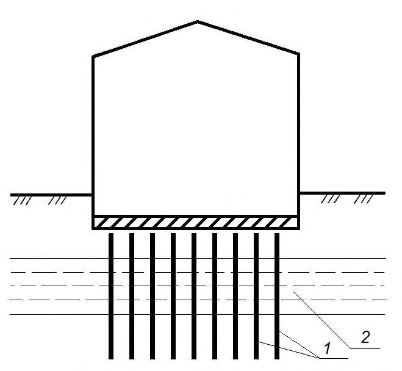
Таблица 6.2
| ( d + z) / B w | Коэффициент k g при отношении длины к ширине замачиваемой площади L w / B w , равном | Коэффициент k g при отношении длины к ширине замачиваемой площади L w / B w , равном | Коэффициент k g при отношении длины к ширине замачиваемой площади L w / B w , равном | Коэффициент k g при отношении длины к ширине замачиваемой площади L w / B w , равном | Коэффициент k g при отношении длины к ширине замачиваемой площади L w / B w , равном |
|---|---|---|---|---|---|
| ( d + z) / B w | 1 | 2 | 3 | 4 | 5 |
| 0,5 | 0 | 0 | 0 | 0 | 0 |
| 1 | 0,58 | 0,50 | 0,43 | 0,36 | 0,29 |
| 2 | 0,81 | 0,70 | 0,61 | 0,50 | 0,40 |
| 3 | 0,94 | 0,82 | 0,71 | 0,59 | 0,47 |
| 4 | 1,02 | 0,89 | 0,77 | 0,64 | 0,53 |
| 5 | 1,07 | 0,94 | 0,82 | 0,69 | 0,77 |
- а) при инфильтрации влаги принимают на глубине, где суммарное вертикальное напряжение σ z,tot (6.2.13) равно давлению набухания psw ; б) при экранировании поверхности и изменении водно-теплового режима определяют опытным путем (при отсутствии опытных данных принимают равной 5 м).
При наличии подземных вод нижнюю границу зоны набухания принимают на 3 м выше начального уровня подземных вод, но не ниже установленного в перечислении а ).
где sh,i -относительная линейная усадка грунта i -го слоя, определяемая в соответствии с 6.2.16; hi -толщина i -го слоя грунта, см; ksh -коэффициент, принимаемый равным 1,3; п - число слоев, на которое разбита зона усадки грунта, принимаемая в соответствии с 6.2.17.
Допускается принимать sh,i , определяемую без нагрузки, при этом ksh = 1,2.
где hn - высота образца грунта, см, после его максимального набухания при обжатии его суммарным вертикальным напряжением без возможности бокового расширения; hd высота образца, см, в тех же условиях после уменьшения влажности в результате высыхания.
При высыхании грунта в результате теплового воздействия технологических установок нижнюю границу зоны усадки Hsh определяют опытным путем или соответствующим расчетом.
- водозащитные мероприятия;
- предварительное замачивание основания в пределах всей или части толщи набухающих грунтов;
- применение компенсирующих песчаных подушек;
- полная или частичная замена слоя набухающего грунта ненабухающим;
- полная или частичная прорезка фундаментами слоя набухающего грунта.
Для устройства подушек применяют пески любой крупности, за исключением пылеватых, уплотняемые до плотности в сухом состоянии не менее 1,6 т/м³ .
Компенсирующие песчаные подушки устраивают только под ленточные фундаменты, когда их ширина не превышает 1,2 м. Размеры подушки назначают по таблице 6.3.
Таблица 6.3
| Ширина фундамента b, м | Ширина подушки В, м | Высота подушки h , м |
|---|---|---|
| 0,5 < b ≤ 0,7 | 2,4 b | 1,2 b |
| 0,7 < b ≤ 1,0 | 2 b | 1,15 b |
| 1,0 < b ≤ 1,2 | 1,8 b | 1,1 b |
6.3Засоленные грунты
- с образованием при длительной фильтрации воды и выщелачивании солей суффозионной осадки ssf ;
- изменением в процессе выщелачивания солей физико-механических свойств грунта, сопровождающееся снижением его прочностных характеристик;
- повышенной агрессивностью подземных вод к материалам подземных конструкций за счет растворения солей, содержащихся в грунте.
Следует также иметь в виду, что в засоленных грунтах при их замачивании может проявляться просадка или набухание.
Значения sf и psf определяют лабораторными методами (компрессионнофильтрационные испытания), а для детального изучения отдельных участков строительной площадки - полевыми испытаниями статической нагрузкой с длительным замачиванием основания. При наличии результатов полевых испытаний и опыта строительства в аналогичных инженерно-геологических условиях указанные характеристики допускается определять только лабораторными методами.
Значения sf и psf определяют в соответствии с 6.3.14.
где k 1 -коэффициент, зависящий от вида грунта, содержания гипса и давления и принимаемый по таблице 6.4; d 0 -начальное содержание гипса в грунте, доли единицы; ρ d - начальная плотность сухого грунта, г/см³ ; ρ g - плотность частиц гипса, г/см³ ;
- степень выщелачивания, доли единицы; п коэффициент, принимаемый для суглинков равным 1, для супесей 1/3.
Таблица 6.4
| Грунты | Содержание гипса, доли единицы | Коэффициент k 1 при давлении, МПа | Коэффициент k 1 при давлении, МПа | Коэффициент k 1 при давлении, МПа | Коэффициент k 1 при давлении, МПа |
|---|---|---|---|---|---|
| Грунты | Содержание гипса, доли единицы | 0,1 | 0,2 | 0,3 | 0,4 |
| Супесь | 0,1 | 0,86 | 0,70 | 0,52 | 0,43 |
| 0,2 | 0,95 | 0,90 | 0,83 | 0,76 | |
| 0,3 | 0,97 | 0,95 | 0,90 | 0,85 | |
| Суглинок | 0,1 | 0,08 | 0,15 | 0,30 | 0,46 |
| 0,2 | 0,15 | 0,27 | 0,50 | 0,84 | |
| 0,3 | 0,45 | 0,60 | 0,80 | 1,10 | |
| 0,4 | 0,85 | 0,96 | 1,07 | 1,30 | |
| 0,5 | 1,08 | 1,15 | 1,22 | 1,38 |
При невозможности длительного замачивания грунтов и выщелачивания солей значение R следует вычислять по формуле (5.7) с использованием прочностных характеристик, полученных для засоленных грунтов в водонасыщенном состоянии.
При вычислении R для частично или полностью выщелоченных грунтов коэффициент условий работы грунтового основания с 1 в формуле (5.7) для загипсованных суглинков с начальным содержанием гипса d 0 20 % принимают равным 1,1, а для суглинков с d 0 > 20 % и для всех загипсованных супесей сl = 1.
Коэффициент условий работы сооружения с 2 во взаимодействии с основанием в формуле (5.7) для всех засоленных грунтов принимают равным единице.
Коэффициент k в формуле (5.7) принимают равным единице при определении прочностных характеристик засоленных грунтов в лабораторных условиях в приборах трехосного сжатия и в полевых условиях методом сдвига целика и k = 1,1 при определении этих характеристик в лабораторных условиях в приборах одноплоскостного среза и по таблицам приложения Б.
При невозможности длительного замачивания грунтов и выщелачивания солей деформации основания фундаментов определяют в соответствии с 5.6 исходя из деформационных характеристик засоленных грунтов при полном водонасыщении.
- длина зоны, в пределах которой возможно выщелачивание гипса (выщелачиваемая зона Hl ), ограничена условием предельного насыщения гипсом фильтрующей жидкости;
- в процессе фильтрации происходит развитие выщелачиваемой зоны, т.е. увеличивается ее длина и уменьшается содержание гипса в грунте в направлении движения фильтрационного потока;
- суффозионные осадки основания происходят только в пределах выщелачиваемой зоны.
При расчете суффозионных осадок основания по схеме 1 сначала следует определить состояние выщелачиваемой зоны Hl, т.е. ее длину и распределение в ней гипса в расчетный момент времени (например, через 5, 10 лет и так далее после начала эксплуатации сооружения). Для этого необходимо выделить слои с различным содержанием гипса (рисунок 6.5). При этом начальное распределение гипса в грунте представляется в виде ступенчатой эпюры d 0 (z). Выделенные слои разбивают на более мелкие, толщиной 0,5 м, для которых проводят расчет процесса рассоления.
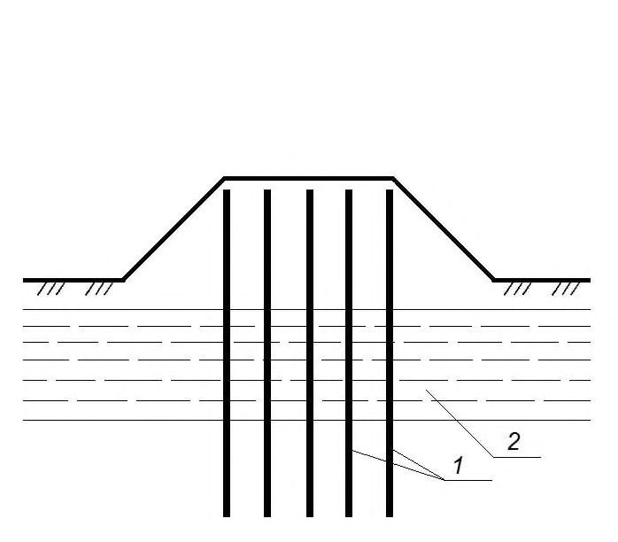
1 - вертикальная фильтрация; 2 - горизонтальная фильтрация в слое ограниченной толщины
Рисунок 6.4 -Схемы замачивания фундаментов
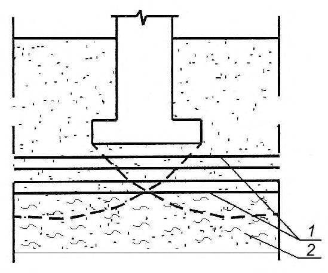
1 - границы слоев с различным содержанием гипса; 2 границы расчетных слоев; 3 расчетный слой; 4 направление фильтрации; 5 - начальная эпюра относительного содержания гипса d 0 (z)
Рисунок 6.5 -Схема для расчета рассоления основания при вертикальной фильтрации
Если основание сложено однородным грунтом, то начальное содержание гипса принимают постоянным в пределах выщелачиваемой зоны d 0 (z)= const, а вся зона разбивается на слои по 0,5 м.
После разбивки основания на слои следует последовательно в каждом слое, начиная с верхнего, определить количество оставшегося в твердой фазе гипса в расчетный момент времени. При этом слой, в котором содержание гипса будет равно начальному, является нижней границей выщелачиваемой зоны Нl . Для нижележащих слоев расчет растворения гипса проводить не следует.
Если на расчетный момент времени Hl Hс, расчет суффозионной осадки следует проводить только в пределах выщелачиваемой зоны Hl. При Hl > Нс расчет осадки необходимо выполнять в пределах сжимаемой толщи Нс. Глубину Нс принимают за границу сжимаемой толщи (рисунок 6.6).
Рисунок 6.6 -Схема для расчета суффозионной осадки засоленного грунта при вертикальной фильтрации
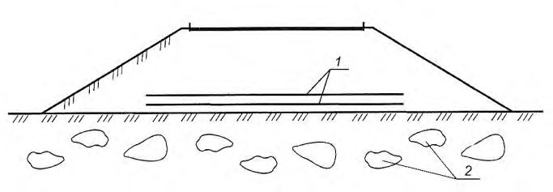
где sf,i - относительное суффозионное сжатие грунта i -го слоя при давлении р, равном суммарному вертикальному напряжению на рассматриваемой глубине от внешней нагрузки σ zp и собственного веса грунта σ zg , определяемое по 6.3.14; hi - толщина i -го слоя засоленного грунта, см; п -число слоев, на которое разбита зона суффозионной осадки засоленных грунтов.
Значение ssf определяют в пределах зон, устанавливаемых по 6.3.9 и 6.3.12.
где hsat,p - высота образца грунта после замачивания (полного водонасыщения) при давлении р = σ zp + σ zg ; hsf , p - высота того же образца после длительной фильтрации воды и выщелачивания солей при давлении р; hng высота того же образца природной влажности при давлении р 1 = σ zg . Начальное давление суффозионного сжатия psf соответствует давлению, при котором sf = 0,01.
Значения sf и psf могут быть определены также при полевых испытаниях грунтов штампом с длительным замачиванием грунтов.
Как и при фильтрации по схеме 1 (рисунок 6.4) необходимо установить состояние выщелачиваемой зоны в основании фундамента на расчетный момент времени (ее длину и распределение в ней гипса). Для установленного состояния выщелачиваемой зоны следует определить осадку сторон фундамента и его крен.
Начальное содержание гипса в грунте принимают постоянным (d 0 = const) как по глубине загипсованной толщи, так и по площади фундамента и в его окрестности (рисунок 6.6), и равным среднему значению загипсованности толщи.
Разбивку основания на вертикальные слои шириной по 0,5 м следует проводить (см. рисунок 6.7) в пределах от z = 0 (источник замачивания) до z = l + 2 L + 1 , где l расстояние до фундамента, a 2 L ширина фундамента. Направление формирования и перемещения выщелачиваемой зоны принимают горизонтальным.
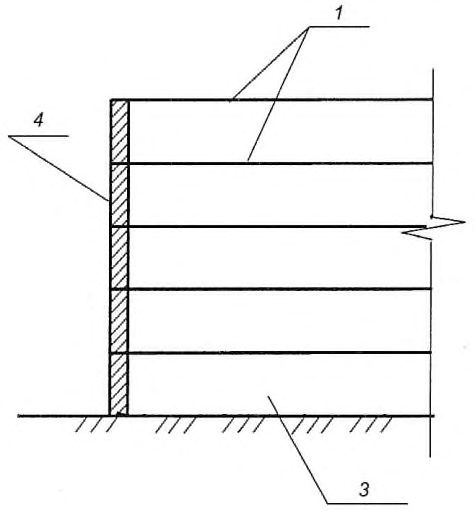
1 - входной участок фильтрационного потока; 2 - направление фильтрации; 3 - расчетный слой; 4 -границы расчетных слоев
Рисунок 6.7 Схема для расчета рассоления основания при горизонтальной фильтрации
Рисунок 6.8 Схема для расчета деформаций засоленного грунта при горизонтальной фильтрации
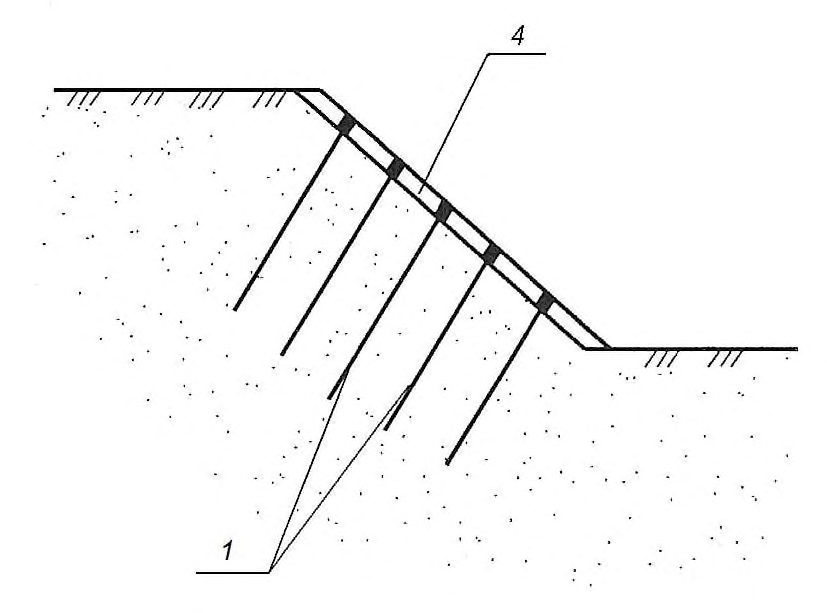
- водозащитные;
- конструктивные;
- частичная или полная срезка засоленных грунтов с устройством подушки из глинистых грунтов;
- прорезка толщи засоленных грунтов фундаментами, в том числе свайными;
- закрепление, уплотнение или нейтрализация (насыщение грунтов растворами, исключающими растворение солей) грунтов;
- предварительное рассоление грунтов;
- комплекс мероприятий, включающий водозащитные и конструктивные мероприятия, а также устройство грунтовой подушки.
При устройстве подушки из глинистых грунтов в основании сооружений предельное содержание солей и степень уплотнения грунта устанавливают по данным специальных исследований и зависят от передаваемых на основание нагрузок, свойств грунта, уровня ответственности и конструктивных особенностей сооружения, возможных условий замачивания основания.
При проектировании фундаментов в засоленных грунтах необходимо применять антикоррозионные мероприятия для защиты тела фундамента от агрессивного воздействия вод и грунтов.
Для сильно- и избыточно засоленных грунтов необходимо применять:
- прекращение или замедление движения фильтрационного потока (устройство водонепроницаемых завес: глинистых, силикатных, битумных, цементных);
- снижение растворяющей способности подземных вод (искусственное водонасыщение фильтрационного потока солями).
6.4Органоминеральные и органические грунты
Для илов следует учитывать тиксотропию и газовыделение (метан, углекислый газ).
Также следует учитывать, что подземные воды в органоминеральных и органических грунтах агрессивны к материалам подземных конструкций.
- характер залегания органоминеральных и органических грунтов (рисунок 6.9) и толщину слоев, прослоек и линз этих грунтов;
- относительное содержание органического вещества I r для выделения заторфованных грунтов, торфов и сапропелей;
- степень разложения Ddp ;
- коэффициент консолидации.
Расстояние между отдельными скважинами не должно превышать 20 м, и они должны полностью прорезать толщу органоминеральных и органических грунтов с заглублением не менее чем на 2 м в подстилающие минеральные грунты.
Определение характеристик органоминеральных и органических грунтов следует проводить не менее чем через 0,5 м по глубине каждого обнаруженного слоя.
вещества - на высокоминеральные, среднеминеральные и низкоминеральные.
I - в пределах всей сжимаемой толщи основания залегают органоминеральные или органические грунты; II - в верхней части сжимаемой толщи основания залегает слой органоминерального или органического грунта; III - в нижней части сжимаемой толщи основания залегают органоминеральные или органические грунты; IV - сжимаемая толща в пределах пятна застройки здания включает односторонне ( IVа ), двусторонне ( IVб ) вклинившиеся линзы или содержит множество линз ( IVв ) из органоминеральных или органических грунтов; V - в пределах глубины сжимаемой толщи находится одна ( Vа ) или несколько прослоек ( Vб ) органоминерального или органического грунта, границы которых в плане выходят за пределы пятна застройки здания
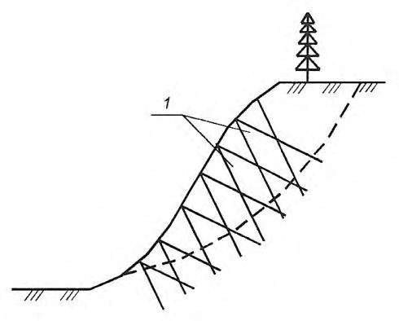
Рисунок 6.9 Типовые схемы оснований, содержащих органоминеральные и органические грунты
Ориентировочные значения физико-механических характеристик сапропелей, открытых и погребенных торфов и илов, которые могут быть использованы для предварительной оценки оснований, сложенных указанными грунтами, приведены в приложении Ж.
Для глинистых грунтов с относительным содержанием органического вещества в долях единицы в диапазоне 0,05 I r 0,25 нормативные значения характеристик Е, n и сп для расчетов оснований сооружений, оговоренных в 5.3.18, допускается принимать по таблице А.4 приложения А.
Максимальное давление на образец в компрессионном опыте должно превышать проектное не менее чем на 10 % - 20 %, но быть не менее 0,1 МПа.
Значения модуля деформации по результатам опыта следует устанавливать для различных интервалов давлений и использоваться в расчетах осадки в зависимости от фактических нормальных напряжений по глубине основания в пределах сжимаемой толщи.
Обозначения характеристик грунта с анизотропными свойствами должны иметь индекс, указывающий диапазоны давлений и их направление при испытании (горизонтальное или вертикальное).
Примечание - Анизотропию свойств органоминеральных и органических грунтов допускается не учитывать, если значения характеристик для вертикального и горизонтального направлений отличаются не более чем на 40 %.
В этих расчетах силу предельного сопротивления основания Nи, кН/м, при действии вертикальной нагрузки для ленточного фундамента допускается вычислять по формуле
где b ´ - q пригрузка, кПа; c I -расчетное значение удельного сцепления грунта, кПа, равное си.
Таблица 6.5
| Наименование грунтов и относительное содержание органического вещества, I r | Коэффициент условий работы грунтового основания, γ с 1 |
|---|---|
| Пески мелкие водонасыщенные: 0,03 < I r 0,25 | 0,85 |
СП 22.13330.2016
| Наименование грунтов и относительное содержание органического вещества, I r | Коэффициент условий работы грунтового основания, γ с 1 |
|---|---|
| 0,25 < I r 0,4 | 0,80 |
| Пески пылеватые водонасыщенные: 0,03 < I r 0,25 | 0,75 |
| 0,25 < I r 0,4 | 0,70 |
| Глинистые грунты водонасыщенные 0,05 < I r 0,25 при показателе текучести: I L 0,5 | 1,05 |
| I L > 0,5 | 1,00 |
| Глинистые грунты водонасыщенные 0,25 < I r < 0,40 при показателе текучести: I L 0,5 | 0,90 |
| I L > 0,5 | 0,80 |
Дополнительную осадку основания фундаментов за счет разложения (минерализации) органических включений допускается не учитывать, если в период срока службы сооружения уровень подземных вод не будет понижаться.
Осадку слоя сильнозаторфованного грунта или торфа при намыве или отсыпке на него песчаного слоя определяют по 6.4.29 и 6.4.30.
Если непосредственно под подошвой фундамента залегает слой грунта с модулем деформации Е < 5 МПа толщиной более ширины фундамента, то осадку основания фундаментов следует вычислять по формуле (5.16) при σ z ,i = 0.
- уплотнение основания временной или постоянной нагрузкой, в том числе с устройством вертикальных дрен и дренажных прорезей - для оснований типов I и II;
- полная или частичная прорезка слоя органоминеральных и органических грунтов фундаментами, в том числе свайными, - для оснований типов II, IV и V;
- выторфовка линз или слоев органоминерального и органического грунта с заменой его минеральным грунтом - для оснований типов II, IV и V;
- устройство фундаментов (столбчатых, ленточных и т. п.) на песчаной, гравийной, щебеночной подушке или на предварительно уплотненной подсыпке из местного материала - для всех типов оснований;
- устройство сооружений на плитных фундаментах, перекрестных монолитных или сборно-монолитных лентах и т. п. с конструктивными мероприятиями по повышению пространственной жесткости сооружения для всех типов оснований.
Плотность сухого грунта в подушках из песка крупного и средней крупности должна составлять не менее 1,65 т/м³ .
При назначении прочностных характеристик уплотненного грунта в подушках следует учитывать требования 5.6.14.
Для водонасыщенных органических и органоминеральных грунтов расчет протекания осадок во времени проводят на основе теории фильтрационной консолидации.
Нагрузку от намыва или отсыпки и порядок ее учета в расчетах конечной осадки, а также время консолидации слоя органоминерального и органического грунта определяют в соответствии с принятым проектом организации работ.
где р давление от песчаной насыпи на поверхность органоминерального и органического грунтов, кПа; h - толщина слоя органоминерального и органического грунтов, м;
Е модуль деформации органоминерального и органического грунтов при полной влагоемкости, кПа.
Формулу (6.21) допускается использовать при размере насыпи в плане не менее 5 h .
План расположения дрен, их сечение и шаг устанавливают расчетом из условия 90 % консолидации основания или в зависимости от назначаемых сроков уплотнения строительной площадки. В плане дрены располагают по квадратной или гексагональной сетке (из равносторонних треугольников) с шагом: для песчаных дрен 1,5-3 м, для дрен заводского изготовления 0,5-2 м.
Для сооружений геотехнических категорий 2 и 3 шаг дрен определяют на опытных участках.
- измерение послойных деформаций грунтов основания фундаментов вновь возводимых сооружений;
- измерение порового давления, возникающего в водонасыщенных органических и органоминеральных грунтах от воздействия дополнительной пригрузки, с контролем уровня подземных вод;
- инклинометрические измерения горизонтальных перемещений грунтового массива по глубине.
6.5Элювиальные грунты
- неоднородности состава и свойств по глубине и в плане из-за наличия грунтов разной степени выветрелости с различием прочностных и деформационных характеристик, возрастающих с глубиной;
- снижения прочностных и деформационных характеристик во время их длительного пребывания в открытых котлованах;
- возможности перехода в плывунное состояние элювиальных супесей и пылеватых песков в случае их водонасыщения в период устройства котлованов и фундаментов;
- возможного наличия просадочных свойств у элювиальных пылеватых песков с коэффициентом пористости е > 0,6 и коэффициентом водонасыщения Sr < 0,7 и возможности набухания элювиальных глинистых грунтов при замачивании отходами технологических производств.
Для предварительной оценки возможного снижения прочности элювиальных грунтов допускаются косвенные методы, учитывающие изменение в течение заданного периода времени: плотности скальных грунтов; удельного сопротивления пенетрации глинистых грунтов; содержания частиц размером менее 0,1 мм в песках и менее 2 мм в крупнообломочных грунтах.
Необходимо устанавливать также толщину верхнего ослабленного дополнительным выветриванием слоя элювиального грунта.
- скорости снижения выбранного параметра степени выветрелости А за период времени t : ( А 1A 2 ) / t ;
- степени снижения выбранного параметра А : ( А 1A 2 ) / A 1 ;
- общего количественного снижения параметра А за весь период t : ( А 1А 2 ) .
Ожидаемый период пребывания элювиальных грунтов открытыми в разработанных котлованах, а также интервалы времени t , через которые проводят определения количественных значений параметра А , устанавливают исходя из конкретных особенностей района и сроков строительства.
Значение ρ и допускается принимать равным плотности частиц скального грунта.
Подразделение элювия скальных грунтов по степени выветрелости приведено в таблице 6.6, а ориентировочные значения предела прочности на одноосное сжатие в водонасыщенном состоянии Rc , которые могут быть использованы для предварительной оценки оснований из этих грунтов, приведены в приложении И.
Таблица 6.6
| Разновидность элювия | Коэффициент выветрелости K wr для скальных грунтов | Коэффициент выветрелости K wr для скальных грунтов |
|---|---|---|
| скальных грунтов по степени выветрелости | магматических и метаморфических | осадочных сцементированных |
| Невыветрелые | 1 | 1 |
| Слабовыветрелые | 1 > K wr 0,9 | 1 > K wr 0,95 |
| Выветрелые | 0,9 > K wr 0,8 | 0,95 > K wr 0,85 |
| Сильновыветрелые (рухляки) | Менее 0,8 | Менее 0,85 |
где k 1 - отношение массы m 1 частиц размером менее 2 мм к массе m 2 частиц размером более 2 мм после испытания на истирание; k 0 -то же, в природном состоянии (до испытания на истирание).
Подразделение элювиальных крупнообломочных грунтов по степени выветрелости приведено в таблице 6.7.
где m 1 - масса частиц размером менее 2 мм после испытания на истирание; т 0 - начальная масса пробы крупных обломков.
Подразделение крупных обломков по прочности в зависимости от значений Kfr приведено в таблице 6.8.
Таблица 6.7
| Разновидности элювиальных крупнообломочных грунтов по степени выветрелости | Коэффициент выветрелости K wr для крупнообломочных грунтов при исходных образующих породах | Коэффициент выветрелости K wr для крупнообломочных грунтов при исходных образующих породах |
|---|---|---|
| Разновидности элювиальных крупнообломочных грунтов по степени выветрелости | магматических и метаморфических | осадочных сцементированных |
| Невыветрелые | 0 < K wr 0,5 | 0 < K wr 0,33 |
| Слабовыветрелые | 0,5 < K wr 0,75 | 0,33 < K wr 0,67 |
| Сильновыветрелые | 0,75 < K wr < 1 | 0,67 < K wr < 1 |
Таблица 6.8
| Наименование обломков по прочности на истирание | Коэффициент истираемости обломков K fr |
|---|---|
| Очень прочные | K fr 0,05 |
| Наименование обломков по прочности на истирание | Коэффициент истираемости обломков K fr |
|---|---|
| Прочные | 0,05 < K fr 0,2 |
| Средней прочности | 0,2 < K fr 0,3 |
| Малопрочные | 0,3 < K fr 0,4 |
| Непрочные | K fr > 0,4 |
Ориентировочные значения модуля деформации для разновидностей элювиальных крупнообломочных грунтов приведены в приложении И.
К прочноструктурным (сапролитам) относятся пески и глинистые грунты, в которых частично сохранена макроструктура исходных пород и которые при природной влажности характеризуются пределом прочности на одноосное сжатие Rc 0,2 МПа.
Элювиальные пески и глинистые грунты, имеющие при природной влажности значение Rc < 0,2 МПа, относятся к слабоструктурным. Нормативные значения Е, и с этих грунтов для расчетов оснований сооружений, оговоренных в 5.3.20, допускается принимать по таблицам А.5 и А.6 приложения А.
Расчетные сопротивления R 0 для назначения предварительных размеров фундаментов сооружений геотехнических категорий 2 и 3 и окончательных размеров сооружений геотехнической категории 1 приведены в таблицах Б.6Б.8 приложения Б.
- устройство уплотненных грунтовых распределительных подушек из песка, гравия, щебня или крупнообломочных грунтов с обломками исходных горных пород, в частности при неровной поверхности скальных грунтов;
- удаление из верхней зоны основания включений скальных грунтов, полная или частичная замена рыхлого заполнения «карманов» и «гнезд» выветривания в скальных грунтах щебнем, гравием или песком с уплотнением.
В случае недостаточности этих мероприятий следует предусматривать конструктивные мероприятия в соответствии с требованиями 5.9, свайные фундаменты или метод выравнивания осадок основания фундаментов.
6.6Насыпные грунты
- отходов производства, представляющих собой искусственные минеральные, органоминеральные, органические материалы;
- отходов потребления, чаще всего называемых бытовыми отходами и отбросами, состоящие из органических и минеральных материалов.
Тип I - планомерно возведенные насыпные грунты обычно состоят из грунтов природного происхождения, минеральных отходов производств, отсыпанных с их уплотнением, имеют практически однородный состав сложения и равномерную сжимаемость. К ним относятся планировочные насыпи, возникшие при хозяйственном освоении пониженных, в том числе шельфовых территорий, земляные сооружения, обратная засыпка котлованов и др.
Тип II - отвалы грунтов природного происхождения, минеральных отходов производств, образовавшиеся в результате плановой отсыпки этих материалов, чаще всего имеют достаточно однородный состав и сложение, низкую и неравномерную плотность и сжимаемость и другие характеристики.
Тип III - свалки грунтов, отходов производств и потребления возникают при неорганизованном их накоплении и характеризуются повышенной разнородностью состава, относительным содержанием органических веществ ( I r > 0,1-0,25), а также неравномерными и низкими значениями плотности, деформационных и прочностных характеристик, неустойчивой от разложения структурой. Примечание - Вместо терминов «грунты природного происхождения» далее используется термин «грунты», а «отходы потребления» - «бытовые отходы». 6.6.4 При проектировании оснований на насыпных грунтах необходимо учитывать наиболее проявляющиеся в них процессы: а) самоуплотнения насыпных грунтов от их собственного веса, в зависимости от этого они подразделяются согласно таблице 6.9 на слежавшиеся, в которых процесс самоуплотнения практически завершился, и неслежавшиеся при этом продолжающемся процессе, а также при дополнительном уплотнении подстилающих природных грунтов как от веса существующих насыпных грунтов, так и особенно вновь отсыпных насыпей; б) самоупрочнение с омоналичиванием глинистых и частично песчаноглинистых грунтов, и подобных им отходам производств, устойчивой структурой с повышением их деформационных и прочностных характеристик, относящихся к типам I и II; в) распад структуры и текстуры грунтов природного образования грунтов. А также искусственных минеральных и особенно органических материалов производств и потребления, относящихся к типам II и III с неустойчивой структурой, сопровождающихся снижением плотности, прочностных и деформационных характеристик и иногда склонностью к просадкам и набуханию при замачивании водой или растворами некоторых производств.
DL - отметка планировки; NL - отметка поверхности сложившегося рельефа; FL - отметка подошвы фундамента; BC - нижняя граница сжимаемой толщи; Hf - толщина слоя существующего насыпного грунта; DC - нижняя граница сжимаемого грунта; SL - отметка подошвы сжимаемого слоя; 1 - существующий насыпной грунт; 2 -грунт природного сложения и происхождения; 3 - планировочная насыпь; 4 - срезаемый насыпной грунт 1 при планировке на глубину Ht ; d и dn - глубина заложения фундамента соответственно от уровня планировки и поверхности существующего рельефа; Hff - толщина планировочной насыпи; Ht - глубина срезки от существующей поверхности насыпного грунта; b - ширина фундамента; p - среднее давление по подошве фундамента; zg и zq . o - вертикальные напряжения от собственного веса на глубине z от подошвы фундамента и на уровне подошвы; zp и zp . o - вертикальные напряжения от внешней нагрузки на глубине z от подошвы фундамента и на уровне подошвы; Hc - толщина сжимаемой зоны при 0,5 z i = zpi ; p ′ - среднее суммарное давление на грунт от нагрузки на полы и фундаментов технологического оборудования; ′ zp - вертикальные напряжения на глубине z от нагрузки p ′; zp .ω - дополнительные вертикальные напряжения от собственного веса грунта при возможном повышении влажности грунта ω, вызванного застройкой участка;
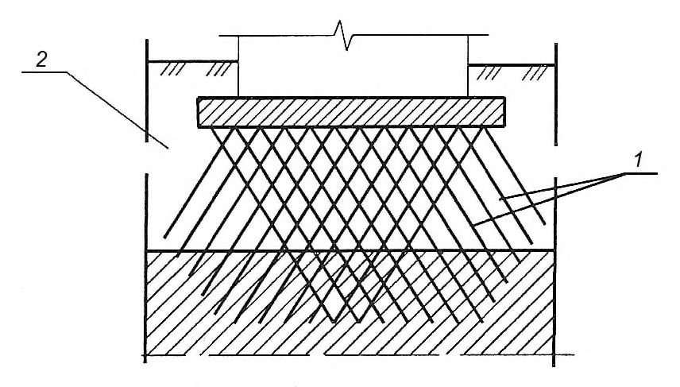
I - зона сжимаемая толща Hc от нагрузки фундамента; II - зона дополнительного самоуплотнения насыпных грунтов от их собственного веса и планировочной насыпи (при наличии ее); III - зона сжатия грунтов природного сложения
Рисунок 6.10 - Схемы напряженно-деформированного состояния оснований на насыпных грунтах при: а ) - существующей поверхности застраиваемого участка; б ) - выполнении планировочной насыпи; в ) - частичной срезки насыпного грунта
Таблица 6.9
| Продолжительность самоуплотнения, год | Продолжительность самоуплотнения, год | Продолжительность самоуплотнения, год | |
|---|---|---|---|
| Виды насыпных грунтов и отходов производств | планомерно возведенных насыпей | отвалов | свалок |
| Крупнообломочные | 0,2-1 | 1-3 | 2-5 |
| Песчаные | 0,5-1 | 2-5 | 5-10 |
| Глинистые | 2-5 | 10-15 | 20-30 |
- планомерно возведенные насыпи из грунтов и отходов производств;
- отвалы грунтов и отходов производств, состоящие из щебенистых и гравийных грунтов, крупных песков и шлаков.
Свалки грунтов и отходов производств допускается использовать для строительства сооружений пониженного уровня ответственности при проведении расчета по деформациям. Использование свалок бытовых отходов в качестве естественных оснований не допускается.
Примечание - Допускается принимать, что уплотнение подстилающих грунтов от веса насыпи практически заканчивается для грунтов: песков - через один год, глинистых, расположенных выше уровня подземных вод, - через два года, а находящихся ниже уровня подземных вод - через пять лет.
Число испытаний штампами в пределах проектируемого сооружения принимают не менее: для планомерно возведенных насыпей 2, для отвалов - 3 при застраиваемой площади участка строительства не более 300 м² . При большей площади необходимо пропорционально увеличивать количество испытаний.
При расчете осадок основания фундаментов учитывают осадку подстилающих грунтов от веса насыпи путем добавления к значениям σ zp , ниже кровли подстилающих грунтов вертикального напряжения от веса вышележащих слоев.
Примечание - Допускается не учитывать дополнительную осадку подстилающих грунтов при давности отсыпки насыпей из песков и шлаков более двух лет и из глинистых грунтов, хвостов обогатительных фабрик, зол, золошлаков и шламов юолее пяти лет.
При определении расчетных сопротивлений грунтов по формуле (5.7) значения коэффициентов с 1 и с 2 принимают равными для планомерно возведенных насыпей по таблице 5.4; отвалов - с 1 = 0,8 и с 2 = 0,9; свалок - с 1 = 0,6 и с 2 = 0,7.
Предварительные размеры фундаментов сооружений геотехнической категории 2 и 3, возводимых на слежавшихся насыпных грунтах, допускается назначать исходя из значений расчетных сопротивлений грунтов основания R 0 по таблице Б.9 приложения Б. Эти значения R 0 допускается использовать также для назначения окончательных размеров фундаментов сооружений геотехнической категории 1.
- поверхностное уплотнение оснований тяжелыми трамбовками, вибрационными машинами, катками;
- глубинное уплотнение грунтовыми сваями, гидровиброуплотнение;
- устройство грунтовых подушек;
- прорезка насыпных грунтов фундаментами, в том числе свайными;
- конструктивные мероприятия.
- размеры уплотняемой площади и глубина уплотнения;
- параметры трамбования (масса и диаметр трамбовки, высота сбрасывания, число ударов);
- величина недобора грунта до проектной отметки заложения фундаментов (понижение уплотняемой поверхности);
- плотность уплотненного грунта и оптимальная влажность.
Плотность подушек назначают в зависимости от вида применяемых грунтов и отходов производств и уровня ответственности сооружения.
6.7Намывные грунты
Для намыва следует использовать пески различной крупности, а также супеси при соответствующем обосновании.
Примечание - Намыв грунта на просадочные (в грунтовых условиях типа I), набухающие и засоленные грунты допускается при соответствующем обосновании. Намыв на просадочные грунты типа II не допускается.
Ориентировочное время самоуплотнения и упрочнения намывных грунтов следует оценивать в зависимости от их состава и вида подстилающих грунтов естественного основания с учетом рекомендуемых данных таблицы 6.10.
Таблица 6.10
| Грунты естественного | Ориентировочное время самоуплотнения и упрочнения намывных грунтов, месяцы | Ориентировочное время самоуплотнения и упрочнения намывных грунтов, месяцы | Ориентировочное время самоуплотнения и упрочнения намывных грунтов, месяцы | Ориентировочное время самоуплотнения и упрочнения намывных грунтов, месяцы |
|---|---|---|---|---|
| основания | Пески крупные и средней крупности | Пески мелкие | Пески пылеватые | Супеси |
| Песчано-гравийные | 0,5 | 1,0 | 2,0 | 3,0 |
| Песчаные | 1,0 | 2,0 | 3,0 | 6,0 |
| Органоминеральные и органические | 2,0 | 3,0 | 6,0 | 12,0 |
| Глинистые | 3,0 | 6,0 | 12,0 | 24,0 |
, где К - коэффициент, равный 1 МПа;
К 1 - коэффициент, равный 1/год;
А, В - безразмерные параметры, вычисляемые по формулам:
Е 1 , Е 2 , -модули деформации, МПа, полученные в результате последовательных во времени двухкратных испытаний намывных грунтов на одной и той же строительной площадке в период времени t 1 и t 2 (в годах) после гидронамыва.
где К , К 1 - коэффициенты, то же, что и формуле (6.25);
А 1 , В 1 - безразмерные параметры, вычисляемые по формулам:
c 1 , c 2 - нормативные удельные сцепления, полученные в результате испытаний намывных грунтов на одной и той же строительной площадке в период времени t 1 и t 2 (в годах) после гидронамыва.
где
φ∞ - стабилизированное значение угла внутреннего трения намывных песков, которое допускается определять как φ n по таблице А.8 приложения А;
- φ1, φ2 - нормативные значения углов внутреннего трения, полученные в результате испытаний намывных грунтов на одной и той же строительной площадке в период времени t 1 и t 2 после гидронамыва.
Таблица 6.11
| Коэффициенты пористости | Коэффициенты пористости | Коэффициенты пористости | Коэффициенты пористости | Коэффициенты пористости | ||
|---|---|---|---|---|---|---|
| Пески намывные | Параметры грунта | 0,50 | 0,55 | 0,60 | 0,65 | 0,70 |
| Значения параметров | Значения параметров | Значения параметров | Значения параметров | Значения параметров | ||
| Средней крупности | А В А 1 В 1 | 48 1,2 0,007 1,3 39 1,6 2,1 41 | 43 1,1 0,006 1,3 38 1,6 2,0 36 1,3 0,007 0,8 34 0,9 | 36 0,9 0,005 1,2 36,5 1,7 2,0 30 1,1 0,005 0,8 32 1,0 | 28 0,9 0,004 1,2 35 1,8 1,9 23 1,0 0,004 0,7 30 1,1 | 27 0,9 0,003 1,1 33 1,9 1,9 19 0,9 0,6 28 1,1 |
| Мелкие | В А 1 В 1 С | 1,5 0,009 1,0 36 | ||||
| φ ∞ (град) | ||||||
| С | ||||||
| D | ||||||
| А | ||||||
| 0,003 | ||||||
| φ ∞ (град) | ||||||
| 0,8 | ||||||
| D | 2,0 | 1,9 | 1,9 | 1,8 | 1,7 |
Если толща намывных грунтов подстилается органоминеральными или органическими грунтами, в расчетах оснований следует дополнительно учитывать требования 6.4. В указанном случае применение столбчатых фундаментов не допускается.
- уплотнение намывных грунтов (вибрационными машинами и катками, глубинным гидровиброуплотнением, использованием энергии взрыва, трамбованием, избыточным намывом грунта на площади застройки и др.);
- закрепление или армирование намывного грунта;
- конструктивные мероприятия.
6.8Пучинистые грунты
- абсолютной деформацией морозного пучения hf , представляющей подъем ненагруженной поверхности промерзающего грунта;
- относительной деформацией (интенсивностью) морозного пучения ƒ h - отношением hf к толщине промерзающего слоя df ;
- вертикальным давлением морозного пучения , действующим fh v р , нормально к подошве фундамента;
- горизонтальным давлением морозного пучения , действующим нормально к боковой поверхности фундамента; fh h р ,
- удельным значением касательной силы морозного пучения fh , действующей вдоль боковой поверхности фундамента.
Указанные характеристики следует устанавливать на основе опытных данных с учетом возможного изменения гидрогеологических условий. Для сооружений пониженного уровня ответственности допускается определять значения ƒ h в зависимости от параметра Rf (рисунок 6.11), вычисляемого по формуле
где w , wp -влажность в пределах слоя промерзающего грунта соответственно природная и на границе раскатывания, доли единицы; wсr -критическая влажность, доли единицы, ниже значения которой в промерзающем пучинистом грунте прекращается перераспределение влаги, вызывающей морозное пучение; определяется по графикам (рисунок 6.12); wsat -полная влагоемкость грунта, доли единицы; ρ d -плотность сухого грунта, т/м³ ;
M 0 -безразмерный коэффициент, численно равный абсолютному значению средней многолетней температуры воздуха за зимний период, определяемый в соответствии с СП 131.13330.
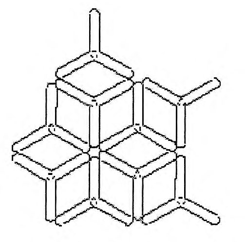
1 , 2 -супеси; 3 - суглинки; 4 - суглинки с 0,07 < IP ≤ 0,13; 5 -суглинки с 0,13 < IP ≤ 0,17; 6 -глины (в грунтах 2 , 4 и 5 содержание пылеватых частиц размером 0,05 -0,005 мм составляет более 50 % по массе); а практически непучинистый; б -слабопучинистый; в -среднепучинистый; г -сильнопучинистый; д -чрезмернопучинистый
Рисунок 6.11 Взаимосвязь параметра R ƒ и относительной деформации пучения ƒ h
Рисунок 6.12 - Зависимость критической влажности wсr от числа пластичности JP и предела текучести грунта wL
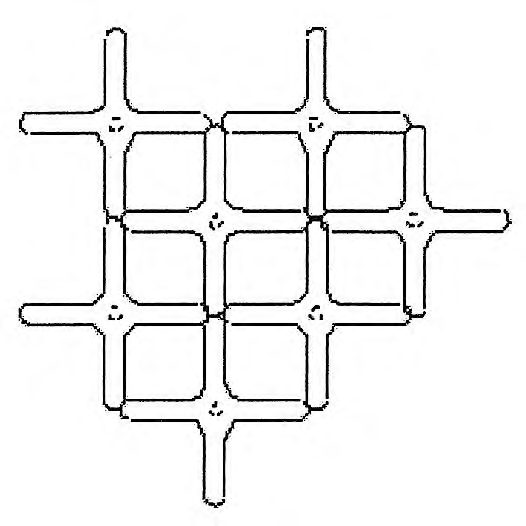
Устойчивость фундаментов проверяют по формуле
где fh - значение расчетной удельной касательной силы пучения, кПа,
принимаемое по 6.8.7;
- Аfh - площадь боковой поверхности фундамента, находящейся в пределах расчетной глубины сезонного промерзания, м² ;
- F -расчетная постоянная нагрузка, кН, при коэффициенте надежности по нагрузке f = 0,9;
- Frf -расчетное значение силы, кН, удерживающей фундамент от выпучивания вследствие трения его боковой поверхности о талый грунт, лежащий ниже расчетной глубины промерзания;
- c - коэффициент условий работы, принимаемый равным 1,0;
- n - коэффициент надежности, принимаемый равным 1,1.
- Примечания
- 1 Для промежуточных глубин промерзания fh принимается интерполяцией.
- 2 Показатель дисперсности грунта D вычисляют по формуле (6.33).
- 3 Значения fh для грунтов, используемых при обратной засыпке котлованов, принимается по первой строке таблицы.
- 4 В зависимости от вида поверхности фундамента приведенные значения fh умножают на коэффициент: при гладкой бетонной необработанной - 1; при шероховатой бетонной с выступами и кавернами до 5 мм - 1,1-1,2, до 20 мм - 1,25-1,5; при деревянной антисептированной - 0,9; при металлической без специальной обработки - 0,8.
- 5 Для сооружений геотехнической категории 1 значения fh умножают на коэффициент 0,9.
Таблица 6.12
| Грунты и их характеристики | Значения расчетной удельной касательной силы пучения fh , кПа, при глубине сезонного промерзания-оттаивания d th , м | Значения расчетной удельной касательной силы пучения fh , кПа, при глубине сезонного промерзания-оттаивания d th , м | Значения расчетной удельной касательной силы пучения fh , кПа, при глубине сезонного промерзания-оттаивания d th , м |
|---|---|---|---|
| До 1,5 | 2,5 | 3 и более | |
| Супеси, суглинки и глины при показателе текучести I L > 0,5, крупнообломочные грунты с глинистым заполнителем, пески мелкие и пылеватые при показателе дисперсности D > 5 и коэффициенте водонасыщения S r > 0,95 | 110 | 90 | 70 |
| Супеси, суглинки и глины при 0,25 < I L 0,5, крупнообломочные грунты с глинистым заполнителем, пески мелкие и пылеватые при D > 1 и коэффициенте водонасыщения 0,8 < S r 0,95 | 90 | 70 | 55 |
| Супеси, суглинки и глины при I L ≤ 0,25, крупнообломочные грунты с глинистым заполнителем, пески мелкие и пылеватые при D > 1 и коэффициенте водонасыщения 0,6 < S r 0,8 | 70 | 55 | 40 |
при D < 1, к пучинистым - при D ≥ 1. Для слабопучинистых грунтов показатель D изменяется в пределах 1 < D < 5. Значение D вычисляют по формуле
где k - коэффициент, равный 1,85×10 -4 см³ ; е - коэффициент пористости;
где p 1 , p 2, …, pi - содержание отдельных фракций грунта, доли единицы; d 1 , d 2, …, di - средний диаметр частиц отдельных фракций, см.
где Rfj - расчетное сопротивление талых грунтов сдвигу по боковой поверхности фундамента в j -м слое, кПа; допускается применять в соответствии с нормативными документами по проектированию свайных фундаментов;
Afj - площадь вертикальной поверхности сдвига в j -м слое грунта ниже расчетной глубины промерзания, м² ; n число слоев грунта.
Примечание - Малозаглубленные фундаменты допускается применять для сооружений пониженного уровня ответственности и малоэтажных зданий (раздел 8) при нормативной глубине промерзания не более 1,7 м.
Если при применении указанных мероприятий деформации морозного пучения не исключены, следует предусматривать конструктивные мероприятия, назначаемые исходя из расчета фундаментов и конструкций сооружения с учетом возможных деформаций морозного пучения.
При проектировании оснований и фундаментов следует предусматривать мероприятия, не допускающие увлажнения пучинистых грунтов основания, а также промораживания их в период строительства.
При устройстве фундаментов в зимний период для предохранения грунтов от промерзания следует устраивать временные теплоизоляционные покрытия, параметры которых определяются в соответствии с теплотехническим расчетом.
6.9Закрепленные грунты
Для существующих зданий возможность и способ закрепления грунтов основания следует устанавливать с учетом характера деформаций основания и категории технического состояния сооружений (см. приложение Д).
Закрепление грунтов может выполняться отдельными элементами, массивами и сочетаниями элементов и массивов закрепленного грунта различной формы в плане и по глубине.
Основания из закрепленных грунтов могут быть использованы в качестве искусственных оснований фундаментов, а также временных ограждающих конструкций котлованов, противофильтрационных завес и других заглубленных конструкций.
Способ закрепления, рецептура растворов и технологические параметры должны обеспечивать необходимые расчетные физикомеханические характеристики закрепленного грунта и удовлетворять требованиям по охране окружающей среды.
6.9.11Рекомендуется назначать следующие характеристики закрепленного грунта: нормативное сопротивление одноосному сжатию Rstb , угол внутреннего трения cstb , удельное сцепление - stb , модуль деформации Estb .
Размеры штампов следует определять размерами элементов.
При проектировании для элемента закрепленного грунта рекомендуется принимать следующие характеристики:
Для инъекционных способов закрепления: расчетный радиус - расстояние от оси скважины/инъектора до границы закрепления за пределами которой сопротивление сжатию равно «0». Назначается при проектировании в зависимости от вида и свойств раствора, фильтрационных характеристик грунта и подтверждается по результатам опытных работ; расчетная глубина - расстояние от нижней до верхней границы закрепления в пределах сечения с расчетным радиусом, за пределами которой сопротивление сжатию равно «0».
Для буросмесительного способа закрепления - расчетная глубина и расчетный радиус - расстояние от оси скважины до границы закрепления, за пределами которой сопротивление сжатию равно «0». Назначается при проектировании и определяется размером бурового инструмента.
где Rstb - нормативное сопротивление закрепленного грунта сжатию, МПа; γ -коэффициент надежности по материалу, принимаемый по результатам опытных работ в зависимости от коэффициента вариации по ss методике контроля прочности бетона.
Таблица 6.13
Параметры песчаных и лессовых грунтов, закрепленных инъекцией химических и
| цементных растворов | цементных растворов | цементных растворов | цементных растворов | цементных растворов |
|---|---|---|---|---|
| Способ закрепления | Грунт | Коэффициент фильтрации, м/сут | Радиус закрепления грунта, м | Нормативное сопротивление сжатию R , МПа |
| Силикатизация двухрастворная на основе силиката натрия и хлористого кальция | Песок | 10-20 20-50 50-80 | 0,2-0,3 0,3-0,6 0,6-1,0 | 1-1,5 1,5-2,5 2,5-8,0 |
| Силикатизация однорастворная с H 2 SiF 6 | Песок | 1,0-10 10-50 | 0,3-0,5 0,5-0,8 | 1 - 2 2-5 |
| Силикатизация однорастворная двухкомпонентная с отвердителем: алюминат натрия или ортофосфорная кислота | Песок | 0,5-1,0 1,0-5,0 | 0,3-0,5 0,5-0,8 | 0,1 - 0,5 |
| Силикатизация газовая на основе силиката натрия и газа CO 2 | Песок | 0,5-5,0 5-20 | 0,3-0,5 0,5-0,8 | 1 - 2 2,0-3,5 |
| Силикатизация однорастворная однокомпонентная | Лесс | 0,2-0,5 0,5-2 | 0,3-0,5 0,5-0,8 | 0,5 - 2,0 2,0-3,5 |
| Силикатизация газовая на основе силиката натрия и газа CO 2 | Лесс | 0,1-0,5 0,5-2 | 0,4-0,6 0,6-1,0 | 0,5 - 2,0 2,0-3,5 |
| Смолизация однорастворная двухкомпонентная на основе карбамидной смолы и кислого отвердителя | Песок | 0,5-5 5-20 20-50 | 0,3-0,5 0,5-0,65 0,65-0,85 | 0,5-1,5 1,5-3,0 3,0-4,5 |
| Цементация раствором ОТДВ | Песок | 1-80 | 0,2-0,7 | 0,5-1,5 |
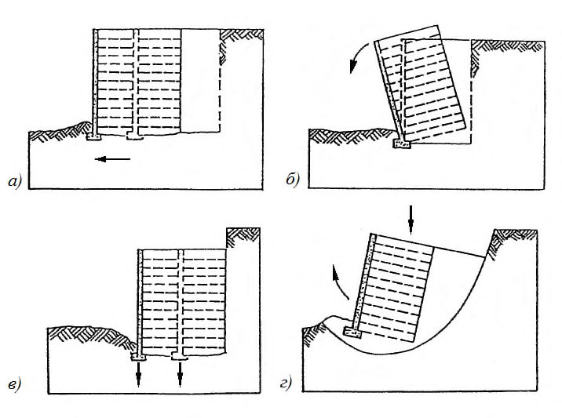
а, б - сплошное из рядом расположенных элементов; в, г - отдельно стоящих элементов; д, е, ж -отдельно расположенных рядов сплошных элементов
Рисунок 6.13 - Принципиальные схемы расположения элементов закрепленного грунта в плане
6.10Армированные грунты
По характеру расположения армирующих элементов армирование грунта подразделяется:
- на вертикальное (рисунок 6.14 а, б);
- горизонтальное (рисунок 6.14 в, г, д);
- наклонное в одном или нескольких направлениях (рисунок 6.14 е, ж, з);
- ячеистыми структурами (рисунок 6.14 и, к);
- объемно-дисперсное.
По материалу армирующих элементов армирование грунта подразделяется на выполняемое:
- из железобетонных элементов;
- закрепленного грунта, в том числе по струйной или буросмесительной технологии (см. 6.9);
- металлических элементов;
- геотекстиля, полимерных пленок, волокон, нитей, кордовой ткани.
В проекте может предусматриваться армирование как естественного массива грунта, так и грунта искусственного основания. По способу производства работ армирование грунта (массива грунта) подразделяется на армирование:
- с использованием погружения инвентарных элементов;
- бетонированием или инъекцией;
- расстилкой и раскладкой армирующих элементов и последующей засыпкой или замывом.
В качестве армирующих элементов допускается использовать железобетонные, бетонные, цементогрунтовые (устраиваемые путем цементации, струйной технологии или буросмесительным способом), металлические элементы, а также столбы из песчаных грунтов или щебня.
- для исключения выпора слабых грунтов из-под сооружения или искусственной насыпи;
- повышения устойчивости склонов и откосов;
- снижения активного и повышения пассивного давления грунта на подпорные стены и сооружения.
Горизонтальное армирование следует выполнять с применением металлических нагелей, геотекстиля, полимерных пленок и волокон, кордовой ткани.
Наклонное армирование может выполняться путем устройства элементов с применением свай, струйной и буросмесительной технологии или путем устройства грунтовых нагелей.
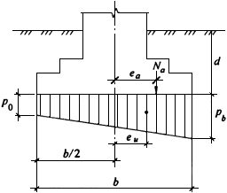
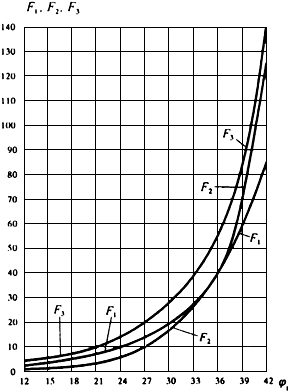
1 - армирующие элементы; 2 - слабый грунт; 3 - насыпной грунт; 4 - облицовка
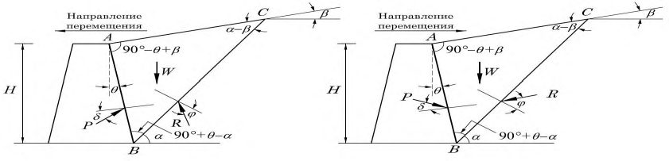
Рисунок 6.14 - Схемы усиления основания армирующими элементами
- тип применяемых армирующих элементов, их номенклатура или размеры, их прочностные и деформационные характеристики;
- размещение армирующих элементов в плане и по высоте;
- прочностные и деформационные характеристики насыпного грунта (при наличии), требования к степени его уплотнения;
- прочностные и деформационные характеристики армированного грунта в целом (при необходимости).
- выявление зоны, в которой требуется выполнить армирование грунта;
- оценка свойств массива или насыпи с учетом наличия в них армирующих элементов;
- предварительное распределение армирующих элементов в выбранной зоне с назначением расстояний между ними по глубине и в плане, длин и иных геометрических характеристик армирующих элементов;
- вычисление расчетных нагрузок и воздействий, определение напряжений в зонах армированного грунта;
- в случае проектирования фундаментов, подбор требуемых размеров фундаментов в плане, проверка основания и фундаментов по двум группам предельных состояний с учетом анизотропии прочностных и деформационных характеристик армированного грунтового массива;
- в случае проектирования откосов и подпорных конструкций, а также усиления склонов, проверка грунтового массива и подпорных конструкций по первой группе предельных состояний с учетом анизотропии характеристик армированного грунта или массива;
- выбор конструкций и материалов для сжимаемых, растягиваемых или срезаемых армирующих элементов, уточнение их длин и наклона к горизонту в пределах соответствующих участков по высоте и в плане, назначение поперечных сечений элементов на основе проверки их прочности, сопротивления выдергиванию и вдавливанию, исходя из условия восприятия передаваемых на каждый из элементов усилий;
- разработка мер по дренированию грунтового массива или насыпи и защите от коррозии армирующих элементов;
- уточнение принятых параметров армирующих элементов на основе испытаний на моделях или в реальных условиях.
Армирущие элементы из геосинтетических материалов должны соответствовать требованиям действующих нормативных документов, иметь сопроводительную документацию, подтверждающую их соответствие нормативным требованиям, включая паспорта качества, и подвергаться входному контролю.
Армирующие элементы из закрепленного грунта должны удовлетворять требованиям 6.9.
Первая группа:
- по несущей способности (предельному сопротивлению) грунта основания;
- общей устойчивости оснований, если на них передаются значительные горизонтальные нагрузки, сооружение устраивается на откосе или вблизи него или армированное основание подстилается крутопадающими слоями грунта;
- сопротивлению выдергиванию и вдавливанию армирующих элементов;
- прочности материала армирующих элементов и облицовок. Вторая группа:
- по деформациям;
- по образованию или чрезмерному раскрытию трещин в железобетонных и бетонных армирующих элементах, если это требуется для защиты от коррозии (см. 6.10.7).
Основания, армированные в двух и более направлениях, а также ячеистыми структурами, допускается при проектировании рассматривать как анизотропную либо изотропную среду в зависимости от взаимного расположения разнонаправленных армирующих элементов. Свойства таких оснований следует определять численным моделированием или натурными испытаниями.
Искусственные основания, устраиваемые с применением объемнодисперсного армирования, следует рассматривать как изотропную среду. Свойства таких оснований следует определять на приготовленных образцах лабораторными или на опытных фрагментах натурными испытаниями.
При выполнении проверки общей устойчивости и несущей способности основания в таких случаях армированный массив допускается считать недеформируемым жестким телом, а расчет следует выполнять в соответствии с требованиями 5.7.1, 5.7.6-5.7.10.
а - сдвиг по подошве; б - опрокидывание; в - потеря несущей способности подстилающего массива грунта; г - глубинный сдвиг
Рисунок 6.15 - Механизмы потери общей устойчивости и несущей способности оснований армированных массивов и грунтов
Проверку прочности по материалу растянутого армирующего элемента следует выполнять исходя из условия
где n - коэффициент надежности по ответственности сооружения;
Nd - расчетная значение продольного усилия (нагрузочного эффекта) в анкерном элементе (кН или кН/м), определенное по первой группе предельных состояний;
Rt ; d - расчетное значение прочности армирующего элемента или его стыка на разрыв (кН или кН/м);
c -коэффициент надежности по ответственности сооружения, принимаемый в соответствии с ГОСТ 27751.
Проверку по сопротивлению выдергиванию из грунтового массива или насыпного грунта армирующего элемента следует выполнять исходя из условия
где Ft ; d - расчетное значение предельного сопротивления анкерной части армирующего элемента выдергиванию из грунта (кН или кН/м), определенное для расчетов по первой группе предельных состояний;
c , g - коэффициент условий работы, принимаемый равным:
1,2 -если расчетное значение предельного сопротивления выдергиванию определено по результатам полевых испытаний;
- 1,4 -если расчетное значение предельного сопротивления выдергиванию определено расчетом.
Проверку прочности по материалу сжатого армирующего элемента следует выполнять исходя из условия
где Nd и n - то же, что в 6.10.17;
Rd - расчетное значение прочности армирующего элемента на сжатие (кН или кН/м);
c -коэффициент условий работы по материалу элемента, принимаемый равным 1.0.
Проверку несущей способности армирующего элемента по грунту следует выполнять исходя из условия
где Fd - расчетное значение предельного сопротивления армирующего элемента вдавливанию (кН или кН/м), определенное по первой группе предельных состояний;
c , g - коэффициент условий работы по грунту, принимаемый равным:
- 1,2 -если расчетное значение предельного сопротивления вдавливанию определено по результатам полевых испытаний статической нагрузкой;
- 1,4 -если расчетное значение предельного сопротивления выдергиванию определено расчетом.
Во всех случаях должно также выполняться условие Fd / c , g Rd / c .
где α = V ар / V гр - коэффициент, характеризующий объемную долю армирующих элементов в массиве грунта;
V ар - объем армирующих элементов;
V гр - объем усиливаемого армированием грунта;
E ар , Е гр -расчетные значения модуля упругости армирующих элементов и модуля деформации грунта. в направлениях, перпендикулярных направлению армирования
где R 1 - расчетное сопротивление неармированного грунта под подошвой фундамента, определяемое в соответствии с 5.6.7, кПа;
- R 2 - расчетное сопротивление материала элементов усиления при условии замены естественного грунта армированным, кПа;
- р - расчетное значение по второй группе предельных состояний среднего давления под подошвой фундамента, кПа (5.6.7);
- γ0 - коэффициент условий работы, учитывающий однородность грунтовых условий и принимаемый равным:
- 1,0 - при шаге армирующих элементов менее 3 d ,
0,9 - при шаге от 3 d до 5 d ,
0,8 - при шаге более 5 d , где d - средний размер поперечного сечения армирующего элемента;
- γ n -коэффициент надежности по ответственности сооружения, принимаемый равным 1,2; 1,1 и 1,0 соответственно для сооружений повышенного, нормального и пониженного уровня ответственности в соответствии с ГОСТ 27751.
6.11Особенности проектирования оснований сооружений, возводимых на подрабатываемых территориях
Зону влияния строительства и эксплуатации подземных выработок различного назначения в условиях существующей застройки можно считать подрабатываемой территорией.
Параметры деформаций земной поверхности, в том числе кривизна поверхности, ее наклоны и горизонтальные перемещения, а также вертикальные уступы следует определять в соответствии с требованиями СП 21.13330.
- оценку изменений геоморфологических и гидрогеологических условий участка застройки вследствие местного оседания земной поверхности (возможность образования провалов, активизации процесса сдвижения вследствие геологических нарушений, активизации оползневых процессов, изменения уровня подземных вод с учетом сезонных и многолетних перепадов, заболачивания территории и т. п.);
- оценку возможных изменений физико-механических свойств грунтов вследствие изменения геологических и гидрогеологических условий площадки;
- деформационные и прочностные характеристики грунтов, используемые при расчетах воздействий сдвигающегося грунта на заглубленные конструкции сооружений.
Значение модуля деформации грунта в горизонтальном направлении допускается принимать равным 0,5 E для глинистых грунтов и 0,65 E - для песков, где E - модуль деформации грунта в вертикальном направлении.
Таблица 6.14
| Грунты | Коэффициент γ c 2 для сооружений с жесткой конструктивной схемой при отношении длины сооружения или отсека к его высоте L / H | Коэффициент γ c 2 для сооружений с жесткой конструктивной схемой при отношении длины сооружения или отсека к его высоте L / H | Коэффициент γ c 2 для сооружений с жесткой конструктивной схемой при отношении длины сооружения или отсека к его высоте L / H | Коэффициент γ c 2 для сооружений с жесткой конструктивной схемой при отношении длины сооружения или отсека к его высоте L / H |
|---|---|---|---|---|
| L / H ≥ 4 | 4 > L / H > 2,5 | 2,5 ≥ L / H > 1,5 | L / H ≤ 1,5 | |
| Крупнообломочные с песчаным заполнителем и пески, кроме мелких и пылеватых | 1,4 | 1,7 | 2,1 | 2,5 |
СП 22.13330.2016
| Пески мелкие | 1,3 | 1,6 | 1,9 | 2,2 |
|---|---|---|---|---|
| Пески пылеватые | 1,1 | 1,3 | 1,7 | 2,0 |
| Крупнообломочные с глинистым заполнителем | 1,0 | 1,0 | 1,1 | 1,2 |
| Глинистые с показателем текучести I L ≤ 0,5 | 1,0 | 1,0 | 1,1 | 1,2 |
| То же, с показателем текучести I L > 0,5 | 1,0 | 1,0 | 1,0 | 1,0 |
Таблица 6.15
| Характеристики скорости растворения горных пород | Характеристики скорости растворения горных пород | Характеристики скорости растворения горных пород | Характеристики скорости растворения горных пород |
|---|---|---|---|
| Разновидность скальных грунтов по растворимости | Преобладающий минерал 1) | Степень растворимости q sr , г/л | Скорость растворения 2) |
| Нерастворимый | СаСО 3 MgCO 3 SiO 2 | q sr ≤ 0,01 | 0,01-0,1 см/год |
| Труднорастворимый | СаСО 3 MgCO 3 SiO 2 | 0,01 < q sr ≤ 1 | 0,1-1,0 см/год |
| Среднерастворимый | СаSО 4 | 1 < q sr ≤ 10 | 1,0-10 см/год |
| Легкорастворимый | NaCl KCl | 10 < q sr ≤ 100 | 10-100 см/год |
| Сильно растворимый | NaCl KCl | q sr > 100 | > 100 см/год |
Примечание - Скорость растворения горных пород можно определить в лабораторных и полевых условиях путем проведения экспериментальных исследований. В ходе оценки скорости растворения горных пород следует учитывать движение растворителя с химическими растворами, вязкость растворителя, коэффициент диффузии растворимого вещества и т. п.
Краевое давление не должно превышать 1,4 R , в угловой точке - 1,5 R .
На площадках, сложенных специфическими грунтами, конструкции сооружений следует проектировать с учетом возможного совместного воздействия на них деформаций от подработок и проявления специфических свойств указанных грунтов.
- жесткой (плитные, ленточные с железобетонными монолитными поясами, столбчатые со связями-распорками между ними и т. п.);
- податливой (фундаменты с горизонтальными швами скольжения между отдельными элементами - первый тип податливости; фундаменты с вертикальными элементами, имеющими возможность наклоняться при горизонтальных перемещениях грунта - второй тип податливости);
- комбинированной (жесткие фундаменты, имеющие шов скольжения ниже уровня планировки или пола подвала).
Конструктивную схему фундамента следует принимать в зависимости от расчетных деформаций земной поверхности, жесткости надфундаментных конструкций, сжимаемости грунтов оснований и пр.
Примечание - Для зданий высотой более семи этажей и башенного типа применение наклоняющихся фундаментов не допускается.
Для восприятия усилий от воздействия горизонтальных перемещений грунта должны устраиваться: в ленточных фундаментах - железобетонные монолитные пояса (в податливых фундаментах - над швом скольжения); в столбчатых (в необходимых случаях) - связи-распорки; в плитных и свайных фундаментах должно предусматриваться соответствующее усиление армирования плиты и ростверка.
- силами трения (сдвигающими силами) по подошве фундаментов продольных и примыкающих стен, а также по боковым поверхностям фундаментов от перемещения грунта;
- давлением перемещающегося грунта, действующего нормально к боковой поверхности фундаментов.
Усилия от сил трения (сдвигающих сил) по подошве фундаментов примыкающих стен, боковое давление грунта на фундаменты и заглубленные части стен этих фундаментов должны передаваться на конструкции фундаментов, расположенных параллельно направлению рассматриваемого горизонтального перемещения грунта.
При первом типе податливости, когда фундаменты имеют возможность смещаться по шву скольжения, их следует рассчитывать на силы трения, возникающие в шве скольжения от сдвига фундаментов.
При втором типе податливости, когда фундаменты имеют возможность наклоняться, их следует рассчитывать на наклоны и возникающее нормальное давление грунта.
Податливые фундаменты второго типа, наклоняющиеся из плоскости стены, в ее плоскости могут работать как податливые фундаменты первого типа.
Усилия от сил трения по шву скольжения и бокового давления фундаментов примыкающих стен должны передаваться на конструкции фундаментов, расположенных параллельно направлению рассматриваемого горизонтального перемещения.
При перемещении наклоняющихся фундаментов следует предусматривать меры по обеспечению местной устойчивости элементов фундаментов и общей устойчивости сооружения в целом.
Нагрузки на фундаменты с жесткой заделкой колонн при отсутствии связей-распорок между фундаментами определяют в зависимости от перемещения основания, заглубления фундаментов, жесткости колонн, прочности и деформационных характеристик основания и грунта засыпки.
Если в верхней зоне основания залегают слои ограниченной толщины насыпных, просадочных и других специфических грунтов, следует предусматривать прорезку этих слоев фундаментами.
- при уступах до 2-3 см фундаменты могут приниматься, как и для условий строительства на площадках с плавными деформациями земной поверхности, т.е. по жесткой или податливой (первого типа податливости) конструктивной схеме;
- ожидаемых уступах более 3 см должна предусматриваться возможность выравнивания сооружения поддомкрачиванием или с помощью клиньев.
6.12Особенности проектирования оснований сооружений, возводимых на закарстованных территориях
Примечание - Требования настоящего раздела распространяются на все виды строительства, включая реконструкцию.
Примечание - В составе инженерно-геологических изысканий необходимо предусматривать выполнение не менее двух скважин, прорезающих толщу закарстованных грунтов, с заглублением не менее чем на 5 м в незакарстованные, за исключением случаев распространения толщи закарстованных грунтов на глубину более 30 м (при этом достаточным является выполнение скважины общей глубиной до 50 м).
- данные о поверхностных проявлениях карстовых деформаций (воронки, оседания земной поверхности, карры, поноры и т. п.), с указанием их геометрических параметров;
- данные о подземных проявлениях карстовых процессов (полостях, кавернах, наличия в них заполнителя и его материале), в т. ч. сведения о зафиксированных в ходе бурения провалах бурового инструмента в водорастворимых горных породах;
- количественную оценку скорости растворения водорастворимых горных пород;
- результаты геофизических исследований;
- данные о гидрогеологической обстановке (агрессивность подземных вод, температура, гидравлические градиенты, напоры и скорости потоков подземных вод).
Примечание - для сопоставления показателей количественной оценки скорости растворения водорастворимых горных пород, установленных в результате инженерно-геологических изысканий, необходимо учитывать данные таблицы 6.15.
Примечания
1 В случае несоответствия фактических условий площадки строительства объектов геотехнической категории 1 требованиям таблицы 6.16 (соответствие менее чем трех из четырех признаков), то категория опасности в карстово-суффозионном отношении допускается принимать по соответствию двух признаков из четырех.
2 В случае несоответствия фактических условий площадки строительства объектов геотехнической категории 2 и 3 требованиям таблицы 6.16 (соответствие менее чем трех из четырех признаков), категория опасности участка строительства в карстово-суффозионном отношении должна быть установлена на основании дополнительных специальных геотехнических исследований с привлечением специализированной организации.
Таблица 6.16
| Категории опасности участка строительства в карстово-суффозионном отношении | Категории опасности участка строительства в карстово-суффозионном отношении | Категории опасности участка строительства в карстово-суффозионном отношении | Категории опасности участка строительства в карстово-суффозионном отношении |
|---|---|---|---|
| Признаки | Неопасная | Потенциально опасная | Опасная |
| Поверхностные проявления карстовых деформаций | Отсутствуют | Отсутствуют | Присутствуют |
| Подземные проявления карстовых процессов | Отсутствуют | Средней интенсивности | Высокой интенсивности |
| Водоупор, перекрывающий водорастворимые горные породы, при толщине, h w , м | h w > 10 | 10 ≥ h w ≥ 3 | h w < 3 |
| Градиент вертикальной фильтрации, i | i < 1 | 1< i < 3 | i > 3 |
Примечания
1 Поверхностные проявление карстовых деформаций выявляются в ходе выполнения инженерно-геологических изысканий в пределах площадки строительства и прилегающей территории. Радиус зоны исследования прилегающей территории следует ограничить 10 км от границы участка строительства. Если к зоне исследования примыкают (до 2 км) участки, осложненные поверхностными проявлениями карстовых деформаций, то зону исследования следует расширить до указанных границ.
2 Подземными проявлениями карстовых процессов считаются провалы бурового инструмента и древние карстовые формы с заполнителем, обнаруженные в ходе бурения водорастворимых горных пород.
- 3 Средняя интенсивность подземных проявлений карстовых процессов принимается при глубине зафиксированных проявлений, не превышающей 1 м, при общем количестве выявленных проявлений не более чем в 10 % скважин, вскрывших водорастворимые горные породы.
- 4 Высокая интенсивность подземных проявлений карстовых процессов принимается при глубине зафиксированных проявлений, превышающей 1 м, или при глубине зафиксированных проявлений, не превышающей 1 м, при общем количестве выявленных проявлений более чем в 10 % скважин, вскрывших водорастворимые горные породы.
Примечания
1 Необходимость проведения специальных противокарстовых мероприятий для участков строительства с установленной потенциально опасной категорией в карстовосуффозионном отношении уточняется на основании дополнительных требований 6.12.15.
2 Применение требований данного пункта на сооружения окружающей застройки не распространяется, за исключением случаев, когда вновь возводимое или реконструируемое сооружение оказывает влияние на изменение гидрогеологического режима окружающей застройки, связанного с возможной активизацией карстовосуффозионных процессов в основании сооружений окружающей застройки.
- диаметр - для провала;
- диаметр, глубину и кривизну поверхности - для оседания.
Примечания
1 Для расчета следует использовать численные и аналитические методы, учитывающие прочностные и деформационные характеристики грунтов при определении прочности свода толщи, перекрывающей карстующиеся породы.
2 В случае, если основание сооружения до кровли водорастворимых горных пород сложено несвязными грунтами в отсутствии водоупорного слоя, расчетные параметры карстовых деформаций допускается определять с использованием схемы «мульды сдвижения» по СП 21.13330.
3 Использование вероятностных методов расчета для определения расчетных параметров карстовых деформаций не допускается.
4 Тип и расчетные параметры карстовых деформаций следует определять с учетом параметров проектируемого (реконструируемого) сооружения (глубина котлована, типа сооружения и фундаментов, нагрузок, передаваемых на основание и т. п.).
5 Определение расчетных параметров карстовых полостей, типа и параметров карстовых деформаций допускается проводить только с привлечением специализированных организаций.
- специальные (конструктивные и геотехнические мероприятия);
- водозащитные;
- технологические;
- эксплуатационные (геотехнический мониторинг).
Примечание - Типы, способы реализации и требования к противокарстовым мероприятиям приведены в таблице 6.17.
Таблица 6.17
| Противокарстовые мероприятия | Противокарстовые мероприятия | Противокарстовые мероприятия |
|---|---|---|
| Тип мероприятий | Способ | Требования |
| Специальные (конструктивные) | Применение неразрезных конструкций фундаментов из монолитного железобетона (плитные, ленточные, коробчатые и т. п.) | Обеспечение прочности и устойчивости сооружения с учетом расчетных параметров карстовых деформаций |
| Специальные (конструктивные) | Применение неразрезных конструкций в надфундаментной части сооружения из монолитного железобетона (неразрезные стены, пояса и т. п.) | Обеспечение прочности и устойчивости сооружения с учетом расчетных параметров карстовых деформаций |
| Специальные (конструктивные) | Применение дополнительных связей в каркасных зданиях и иных мероприятий, повышающих жесткость сооружения | Обеспечение прочности и устойчивости сооружения с учетом расчетных параметров карстовых деформаций |
| Специальные (геотехнические) | Тампонирование поверхностных карстовых деформаций на земной поверхности, в котлованах | Изменение физико- механических характеристик основания сооружения, исключающих образования карстовых деформаций или обеспечивающих прочность и устойчивости сооружения с учетом расчетных параметров карстовых деформаций |
| Специальные (геотехнические) | Закрепление закарстованных пород или вышележащих грунтов инъекцией цементационных растворов или другими способами | Изменение физико- механических характеристик основания сооружения, исключающих образования карстовых деформаций или обеспечивающих прочность и устойчивости сооружения с учетом расчетных параметров карстовых деформаций |
| Специальные (геотехнические) | Опирание фундаментов на незакарстованные грунты (в т. ч. прорезка закарстованных пород свайными фундаментами) | Изменение физико- механических характеристик основания сооружения, исключающих образования карстовых деформаций или обеспечивающих прочность и устойчивости сооружения с учетом расчетных параметров карстовых деформаций |
| Водозащитные | Вертикальная планировка и надежная ливневая канализация с отводом вод с участка строительства | Предотвращение активизации карстово- суффозионных процессов за счет изменения гидрогеологических |
| Водозащитные | Мероприятия по борьбе с | Предотвращение активизации карстово- суффозионных процессов за счет изменения гидрогеологических |
| утечками промышленных и хозяйственно-бытовых вод, особенно, агрессивных | условий | |
|---|---|---|
| Оперативный отвод поверхностных вод из котлованов, повышенный контроль за устройством гидроизоляции и укладке водонесущих коммуникаций, обратной засыпке котлованов в период строительства | условий | |
| Технологические | Повышение надежности технологического оборудования и инженерных коммуникаций, их дублирование, контроль над утечками, обеспечение своевременного отключения | Обеспечение отсутствия активизации карстово- суффозионных процессов за счет исключения протечек в основание сооружения |
| Эксплуатационные | Геотехнический мониторинг | Контроль над возможной активизацией карстово- суффозионными процессов |
Примечания
1 Выбор способа проведения специальных противокарстовых мероприятий (конструктивные, геотехнические или их комбинация) определяется проектировщиком в зависимости от инженерногеологических условий площадки строительства, конструкции проектируемого сооружения, расчетных параметров карстовых деформаций и т. п.
2 При необходимости выполнения специальных противокарстовых мероприятий следует применять конструктивные - для нового строительства, геотехнические - для реконструируемых сооружений . Выбор способа выполнения обеспечения надежной и безопасной эксплуатации здания должен быть экономически обоснован.
3 При разработке проекта специальных противокарстовых мероприятий следует учитывать размещение в плане карстовых деформаций (с учетом их типа и расчетных параметров) на наиболее неблагоприятных участках с точки зрения обеспечения надежной работы сооружения. При этом обязательным является положение карстовых деформаций под колоннами, пересечением стен, углами сооружения, в середине большей и меньшей сторон, а также прилегающей к сооружению зоне, расположение карстовых деформаций в которой, способно оказать негативное влияние на прочность и устойчивость сооружения.
4 Применение противокарстовых мероприятий в дополнение к указанным требованиям должно также исключать при своей реализации негативное влияние на окружающую застройку и не должно способствовать активизации карстово-суффозионных процессов в основании сооружений окружающей застройки.
Примечание - Использование альтернативных решений, связанных с подменой требований обеспечения прочности и устойчивости сооружения (например, устройство гильз в фундаментной плите для выполнения тампонажа, в случае образовании карстовых деформаций для их последующей ликвидации, вместо указанных в 6.12.13) не допускается.
В случае, если размер карстовой полости в водорастворимой горной породе (при ее размещении на разрезе и по глубине в наиболее неблагоприятном участке с точки зрения провалообразования) с учетом скорости растворения горной породы вызовет по результатам расчета карстовые деформации в период сопоставимый с расчетным сроком службы (эксплуатации) сооружения, то определение расчетных параметров карстовых деформаций выполняется согласно требованиям 6.12.12, а проведение специальных противокарстовых мероприятий выполняется для данного участка согласно требованиям 6.12.13, 6.12.14.
Если размер карстовой полости с учетом скорости растворения горной породы по результатам расчета не приводит к карстовым деформациям в период расчетного срока службы (эксплуатации) сооружения, то специальные противокарстовые мероприятия не проводят.
Примечания
1 Установление необходимости проведения специальных противокарстовых мероприятий для потенциально опасных участков допускается проводить только с привлечением специализированных организаций.
2 Начальный размер карстовой полости (до ее увеличения с учетом скорости растворения) следует принимать не менее наибольшего по глубине (из зафиксированных при изысканиях) провала бурового инструмента или глубины распространения заполнителя в карстующейся породе (древний карст).
3 Расчетный срок службы (эксплуатации) сооружений должен назначаться генпроектировщиком по согласованию с заказчиком, но не менее чем в соответствии с ГОСТ 27751.
4 Требования, предъявляемые к методам расчетов, указанным в данном пункте, должны соответствовать требованиям, указанным в 6.12.12.
6.13Особенности проектирования оснований сооружений, возводимых в сейсмических районах
Основания сооружений, возводимых на площадках сейсмичностью 7, 8 и 9 баллов, следует проектировать с учетом СП 14.13330.
Примечание - При проектировании в сейсмических районах в дополнение к материалам инженерно-геологических изысканий необходимо использовать данные сейсмического микрорайонирования площадки строительства.
Предварительно тип и размеры фундаментов допускается определять расчетом оснований на основное сочетание нагрузок (без учета сейсмических воздействий) согласно требованиям раздела 5, а затем следует уточнять расчетом на особое сочетание нагрузок с учетом сейсмических воздействий.
Глубину заложения фундаментов в грунтах, относимых по их сейсмическим свойствам согласно СП 14.13330 к категориям I и II, принимают такой же, как и для фундаментов в несейсмических районах.
На площадках, сложенных грунтами категории III по сейсмическим свойствам, необходимо предусматривать мероприятия по улучшению строительных свойств грунтов основания до начала строительства.
Нельзя использовать в качестве оснований сейсмостойких сооружений водонасыщенные грунты, способные к динамическому разжижению, без проведения предварительных специальных мероприятий по улучшению строительных свойств грунтов (уплотнение, закрепление, замена грунтов в основании по 5.9.3).
где Na - вертикальная составляющая расчетной внецентренной нагрузки в особом сочетании, кН; γ c,eq - сейсмический коэффициент условий работы, принимаемый равным 1,0; 0,8; 0,6 соответственно для грунтов категорий I, II и III по сейсмическим свойствам, которые определяют в соответствии с классификацией СП 14.13330;
Nu,eq - вертикальная составляющая силы предельного сопротивления основания при одностороннем выпоре грунта вследствие сейсмического воздействия, кН; γ n - коэффициент надежности по ответственности, принимаемый в соответствии с требованиями 5.7.2.
Рисунок 6.16 - Эпюра предельного давления под подошвой столбчатого или ленточного фундамента при сейсмическом воздействии
При наличии в особом сочетании нагрузок горизонтальной составляющей, передаваемой фундаментом на грунт, следует выполнять проверку несущей способности основания на сдвиг в соответствии с требованиями 5.7.6, 5.7.12. При этом для определения сил предельного сопротивления сдвигу, а также величин активного и пассивного давления в водонасыщенных глинистых грунтах следует учитывать снижение расчетных значений угла внутреннего трения в зависимости от расчетной сейсмичности.
Расчетные значения угла внутреннего трения в расчетах без учета сейсмических инерционных объемных сил на особое сочетание нагрузок, включающее сейсмическое воздействие, следует принимать из условия
где φ I - расчетные значения угла внутреннего трения без учета сейсмики; Δφ - принимают в зависимости от расчетной сейсмичности: 7 баллов Δφ = 2°, 8 баллов - Δφ = 4°, 9 баллов - Δφ = 7°.
При расчете несущей способности оснований, испытывающих сейсмические воздействия, с учетом сейсмических инерционных объемных сил в качестве расчетного значения угла внутреннего трения следует принимать φ I (см. 6.13.4).
где ξ q , ξ c , ξγ - коэффициенты формы, определяемые по формуле (5.33), но без уменьшения длины l и ширины b подошвы фундамента на значения эксцентриситета нагрузок;
- F 1 , F 2 и F 3 - коэффициенты, определяемые по графикам рисунка 6.17 в зависимости от расчетного значения угла внутреннего трения φ I ;
- γ´ I и γ I - соответственно расчетные значения удельного веса грунта, кН/м , находящегося выше и ниже подошвы фундамента (с учетом взвешивающего действия подземных вод для грунтов, находящихся выше водоупора);
- d - глубина заложения фундамента, м (в случае неодинаковой вертикальной пригрузки с разных сторон фундамента принимают значение, соответствующее наименьшей пригрузке, например, со стороны подвала);
- keg -коэффициент, принимаемый равным 0,1; 0,2 и 0,4 при сейсмичности площадок строительства 7, 8 и 9 баллов, определяемой в соответствии с требованиями СП 14.13330.
Примечание - В формуле (6.50) при F 2 < keg F 3 следует принимать pb равное p 0.
Рисунок 6.17 - Графики определения коэффициентов F 1, F 2 и F 3 для расчета несущей способности оснований в условиях сейсмических воздействий
Эксцентриситеты расчетной нагрузки ea , м, и эпюры предельного давления eu , м, вычисляют по формулам:
где Na и Ma - вертикальная составляющая расчетной нагрузки, кН, и момент, кН·м, приведенные к подошве фундамента при особом сочетании нагрузок; p 0 и pb - то же, что и в формулах (6.48) и (6.49).
В зависимости от соотношения между значениями ea и eu вертикальную составляющую силы предельного сопротивления основания Nu,eq , кН, принимают:
- эксцентриситет ea расчетной нагрузки не превышает одной трети ширины фундамента b в плоскости действия опрокидывающего момента;
- силу предельного сопротивления основания определяют для условного фундамента, размер подошвы которого в направлении действия момента равен размеру сжатой зоны bc = 1,5 ( b - 2 ea );
- максимальное краевое давление под подошвой фундамента, вычисленное с учетом его неполного контакта с грунтом, не превышает краевой ординаты эпюры предельного сопротивления основания.
Максимальное расчетное давление по подошве фундамента вычисляют по формуле
где Na и ea - то же, что и в формуле (6.50), причем ea > b / 6.
Значение pb вычисляют по формуле (6.49), но для фундамента, имеющего условную ширину bc .
Ленточные фундаменты примыкающих частей отсеков здания должны иметь одинаковое заглубление на протяжении не менее 1 м от осадочного шва. Столбчатые фундаменты, разделенные осадочным швом, должны располагаться на одном уровне.
6.14Особенности проектирования оснований сооружений, возводимых вблизи источников динамических воздействий
Проектирование оснований при динамических воздействиях проводят на основе инструментальных измерений или расчетного прогноза колебаний грунта.
где cd -коэффициент условий работы грунтов основания при динамических воздействиях, принимаемый для мелких и пылеватых водонасыщенных песков и глинистых грунтов текучей консистенции cd = 0,7; для всех остальных видов и состояний грунтов cd = 1;
R - расчетное сопротивление грунта основания, кПа, определяемое в соответствии с требованиями раздела 5.
Лабораторные испытания грунтов следует проводить с воспроизведением статических и динамических напряжений, соответствующих глубине залегания испытываемого грунта, с последующим суммированием полученных относительных линейных деформаций виброползучести d .
Требования к проведению полевых штамповых испытаний грунтов по определению модуля общей деформации (уменьшенного значения модуля деформации грунтов) приведены в [7]. Дальнейший расчет полных осадок, включающих статическую и динамическую составляющие, допускается проводить в соответствии с 5.6, принимая при этом уменьшенное значение модуля деформации грунтов.
7Особенности проектирования оснований опор воздушных линий электропередачи
По характеру нагружения опоры подразделяют на промежуточные, анкерные, угловые и специальные, применяемые на больших переходах.
При расчете оснований по деформациям значение коэффициента надежности по грунту g допускается принимать равным единице. Для массовых опор пониженного уровня ответственности нормативные значения характеристик допускается принимать по таблицам приложения А, причем значения n , cn и Е глинистых грунтов с показателем текучести 0,75 < I L 1,0 следует принимать по результатам испытаний грунтов.
В случае, если нормативные значения характеристик грунтов принимаются по таблицам приложения А, расчет оснований по несущей способности следует выполнять при значениях коэффициентов надежности по грунту g для: плотности ρ I - g = 1; угла внутреннего трения I - g = 1,1; удельного сцепления cI - g = 2 в песках, g = 2,4 в супесях при I L 0,25, суглинках и глинах при I L 0,5; g = 3,3 в остальных глинистых грунтах.
Деформация основания свободностоящих стоечных опор ограничивается предельным значением угла δ отклонения стойки от вертикали на уровне поверхности грунта от воздействия опрокидывающих нагрузок, которое составляет 0,01 рад.
В песках плотных и средней плотности, а также глинистых грунтах при I L ≤ 0,5 в случае установки в основание перед стойкой не менее одного ригеля допускается δ ≤ 0,02 рад с обязательной проверкой прочности стойки.
Опрокидывающий момент следует определять с учетом как горизонтальных сил, так и вертикальных сил, возникающих при отклонении стоек от вертикали.
где Fn - нормативное значение выдергивающей силы, кН;
Gn нормативное значение веса фундамента или плиты, кН;
- угол наклона выдергивающей силы к вертикали, град.;
c - коэффициент условий работы, определяемый в соответствии с 7.7;
R ´ 0 -расчетное сопротивление грунта обратной засыпки, кПа, принимаемое по таблице Б.10 приложения Б;
A 0 - площадь проекции верхней поверхности фундамента на плоскость, перпендикулярную к линии действия выдергивающей силы, м² .
Наибольшее давление на грунт под краем подошвы фундамента при действии вертикальной сжимающей и горизонтальных нагрузок в одном или в двух направлениях не должно превышать 1,2 R .
где F расчетное значение выдергивающей силы, кН;
f - коэффициент надежности по нагрузке, принимаемый равным 0,9;
Gn - нормативное значение веса фундамента (плиты), кН;
- угол наклона выдергивающей силы к вертикали, град.;
c - коэффициент условий работы, принимаемый равным единице;
Fu,a -сила предельного сопротивления основания выдергиваемого фундамента, кН, определяемая по 7.11;
n - коэффициент надежности по ответственности, принимаемый равным для опор: промежуточных прямых - 1,0; анкерных прямых без разности тяжений - 1,2; угловых (промежуточных и анкерных), анкерных (прямых и концевых) с разностью тяжений, порталов открытых распределительных устройств - 1,3; специальных - 1,7.
где bf - расчетное значение удельного веса грунта обратной засыпки, кН/м³ ;
Vbf -объем тела выпирания в форме усеченной пирамиды, м³ , образуемой плоскостями, проходящими через кромки верхней поверхности фундамента (плиты) и наклоненными к вертикали под углами ϑ i , равными: у нижней кромки ϑ1 = 0 + / 2; у верхней кромки ϑ2 = 0 - / 2; у боковых кромок ϑ3 = ϑ4 = 0 ;
- Vf -объем части фундамента, находящейся в пределах тела выпирания, м³ , для анкерных плит принимают равным нулю;
- А 1 , А 2 , А 3 -площади граней тела выпирания, м² , имеющих в основании соответственно нижнюю, верхнюю и боковые кромки верхней поверхности фундамента (плиты);
- с 0 и 0 - расчетные значения удельного сцепления, кПа, и угла внутреннего трения грунта обратной засыпки, град., принимаемые равными:
здесь c I , I - расчетные значения соответственно удельного сцепления и угла внутреннего трения грунта природного сложения, определяемые в соответствии с 7.2; η -коэффициент, принимаемый по таблице 7.1.
Таблица 7.1
| Грунты обратной засыпки | Коэффициент η при плотности грунта засыпки, т/м³ | Коэффициент η при плотности грунта засыпки, т/м³ |
|---|---|---|
| 1,55 | 1,7 | |
| Пески, кроме пылеватых влажных и насыщенных водой | 0,5 | 0,8 |
| Глинистые грунты при показателе текучести I L 0,5 | 0,4 | 0,6 |
Примечание -Значение коэффициента η для пылеватых песков влажных и насыщенных водой, глин и суглинков при показателе текучести 0,5 < I L 0,75 и супесей при 0,5 < I L 1 должно быть понижено на 15 %.
При близком расположении выдергиваемых фундаментов следует учитывать уменьшение объемов тел выпирания для каждого фундамента.
где Fh - расчетная горизонтальная сила, на отметке поверхности грунта, кН;
- c 2 - коэффициент условий работы закрепления, принимаемый по таблице 7.2;
Fhu предельная горизонтальная сила на отметке поверхности грунта, кН;
n - коэффициент надежности по ответственности, принимаемый по 7.9.
Расчет устойчивости основания фундамента стоечной опоры выполняется на воздействие расчетных значений горизонтальной нагрузки Fh , момента М от горизонтальных и вертикальных нагрузок, приложенных на уровне поверхности грунта и вертикальной нагрузки FV, приложенной на отметке подошвы фундамента.
Усилия Fh , М , FV получают в результате статического расчета опоры. Для расчета устойчивости основания высота H , на которой на стойку действует горизонтальная сила Fh , определяется из условий H = М / Fh .
Таблица 7.2
| Грунты | Значение коэффициента условий работы закрепления с 2 в грунтах со структурой | Значение коэффициента условий работы закрепления с 2 в грунтах со структурой |
|---|---|---|
| нарушенной | ненарушенной | |
| Пески: крупные | 1,05 1,1 | 1 |
| средней крупности | 1 | |
| мелкие | 1,1 | 1 |
| пылеватые | 1,15 | 1,05 |
| Супеси: I L < 0,25 | 1,3 | 1,2 |
| I L > 0,25 | 1,4 | 1,3 |
| Суглинки: I L < 0,25 | 1,25 | 1,15 |
| 0,25 < I L < 0,5 | 1,4 | 1,25 |
| I L > 0,5 | 1,4 | 1,25 |
| Глины: I L < 0,25 | 1,5 | 1,3 |
| 0,25 < I L < 0,5 | 1,5 | 1,3 |
| I L > 0,5 | 1,5 | 1,4 |
где Fc расчетная сжимающая нагрузка на отметке подошвы стойки, кН; для промежуточных опор расчетную нагрузку из сочетаний с кратковременными нагрузками принимают с коэффициентом 0,6 для сверленых котлованов; в остальных случаях принимают полное значение;
с - коэффициент условий работы, равный 1;
R расчетное сопротивление грунта основания под подошвой стоечной опоры, принимаемое по таблице 7.3, кПа;
A - площадь подошвы фундамента, м² , принимают равной площади подошвы стойки при установке стойки в сверленый котлован и заделке пазух гравийно-песчаной смесью или крупным песком, а также в копаные котлованы без опорной плиты; при установке стойки в сверленый котлован и заполнении пазух бетонированием площадь А принимают равной площади котлована;
g - коэффициент надежности по грунту, равный 1,3.
Таблица 7.3
| Грунты | Расчетное сопротивление грунта R, кПа |
|---|---|
| Пески: | |
| гравелистые | 6500 |
| крупные | 5200 |
| средней крупности | 3900 |
| мелкие | 2050 |
| Грунты | Грунты | Расчетное сопротивление грунта R, кПа |
|---|---|---|
| пылеватые | пылеватые | 1300 |
| Супеси: | Супеси: | |
| I L 0 | I L 0 | 2050 |
| 0 < I L 1 | 0 < I L 1 | 800 |
| Суглинки и глины | Суглинки и глины | |
| 0 | 5850 | |
| 0,10 | 4700 | |
| 0,20 | 3600 | |
| 0,30 | 2300 | |
| при I L , равном | 0,40 | 1600 |
| 0,50 | 1300 | |
| 0,60 | 800 | |
| 0,75 | 400 |
8Особенности проектирования оснований и фундаментов малоэтажных зданий
Эти здания могут возводиться на малозаглубленных, устраиваемых в слое сезоннопромерзающего грунта, и незаглубленных фундаментах.
9Особенности проектирования оснований подземных частей
сооружений и геотехнический прогноз
- глубины заложения подземных конструкций;
- способа устройства подземных конструкций (в открытом котловане, полузакрытый «сверху-вниз», опускной колодец, в насыпи и др.);
- заложения откосов неподкрепленных котлованов;
- типа, конструкции, материала ограждений котлованов и их креплений;
- мероприятий, применяемых для снижения влияния строительства на деформации оснований, фундаментов и надземных конструкций сооружений и инженерных коммуникаций окружающей застройки;
- мероприятий, применяемых для минимизации изменений гидрогеологических условий или предотвращения вызванных этим возможных негативных последствий, в т. ч. для окружающей застройки и экологической среды.
Инженерно-геологическое строение площадки должно быть изучено на глубину не менее 1,5 H ок + 5 м, где H ок -глубина заложения подошвы ограждающей конструкции, но не менее 10 м от подошвы ограждающей конструкции. На указанную глубину должно быть пройдено не менее 30 % скважин, но не менее трех скважин.
При проектировании подземных частей сооружений в неподкрепленных котлованах глубина разведочных скважин должна составлять не менее 1,5 H к + 5 м, где H к -глубина котлована.
- необходимости анализа возможности проявления на примыкающей к зоне строительства территории опасных инженерно-геологических процессов;
- определения возможности и целесообразности устройства грунтовых анкеров вне границ площадки строительства, а также последующего выполнения расчетов анкерных конструкций и оценки влияния их устройства на окружающую застройку;
- решения вопроса о необходимости закрепления грунтов оснований и усиления фундаментов сооружений окружающей застройки, попадающих в зону влияния нового строительства;
- необходимости получения данных для расчета изменения гидрогеологических условий на территории, примыкающей к строительной площадке.
- тектонические и закарстованные структуры, разрывные и складчатые нарушения;
- фильтрационные свойства грунтов, необходимые для расчета ожидаемых водопритоков в котлованы и подземные выработки, величина напора в горизонтах подземных вод, наличие и толщина водоупоров и их устойчивость против прорыва напорных вод;
- наличие и распространение грунтов, обладающих плывунными, тиксотропными и суффозионными свойствами и виброползучестью;
- наличие и местоположение подземных сооружений, подвалов, тоннелей, инженерных коммуникаций, колодцев, подземных выработок, буровых скважин и пр.;
- динамические воздействия от существующих стационарных и временных источников и от транспорта.
- модуль деформации Е для первичной ветви нагружения и ветви повторного нагружения Ее (см. 5.3.8), которое следует выполнять для тех же диапазонов напряжений, что и первичное;
- коэффициент поперечной деформации v . Для подземных сооружений геотехнической категории 2 расчетные значения коэффициента v допускается принимать в соответствии с 5.6.44;
- прочностные характеристики: угол внутреннего трения и удельное сцепление с, определяемые для условий, соответствующих всем этапам строительства и эксплуатации подземного сооружения;
- предел прочности на одноосное сжатие Rc и модуль деформации E для скальных, искусственно закрепленных и замороженных грунтов;
- удельные нормальные и касательные силы морозного пучения σ fh,h и fh ;
- коэффициент фильтрации грунтов;
- характеристики трещиноватости массивов скальных грунтов: модуль трещиноватости Mj, показатель качества породы RQD, коэффициент выветрелости Kwr .
При соответствующем обосновании по специальному заданию (например, специализированной организации, ведущей научнотехническое сопровождение проектирования и строительства согласно 4.17) изысканиями могут определяться и другие физико-механические и классификационные характеристики грунтов и массивов, в т. ч.:
- сопротивление грунта недренированному сдвигу c u (5.3.10);
- коэффициент переуплотнения грунта OCR ;
- параметры ползучести глинистых грунтов;
- предел прочности на одноосное растяжение Rt для скальных и искусственно закрепленных грунтов;
- классификационные характеристики скальных массивов RMR , Q , GSI ;
- параметры релаксации напряжений в грунтах Кr , σ r .
В случае, если в зону влияния проектируемой подземной части сооружения (см. 9.34) попадает сооружение окружающей застройки более высокого уровня ответственности, геотехническая категория проектируемого сооружения должна быть повышена с учетом уровня ответственности сооружения, которое подвергается влиянию проектируемого.
Специфические нагрузки и воздействия на конструкции подземных частей сооружений, а также их длительность следует устанавливать в соответствии с требованиями СП 14.13330, СП 20.13330, СП 21.13330, СП 35.13330, СП 116.13330, СП 131.13330.
- несущей способности основания, устойчивости сооружения и его отдельных элементов;
- местной прочности скального основания;
- устойчивости склонов, примыкающих к сооружению, откосов и ограждающих конструкций котлованов;
- нагрузок, передающихся на ограждающие конструкции котлованов и наружные стены подземных частей сооружений;
- несущей способности по грунту анкерных конструкций (грунтовых анкеров, анкерных свай и др.);
- фильтрационной прочности основания, давления подземных вод на конструкции подземных частей сооружения, устойчивости против всплытия;
- фильтрационного расхода при водопонижении;
- изменения гидрогеологических условий, вызванных строительством и эксплуатацией сооружения;
- деформаций системы «подземная часть сооружения - основание»;
- деформаций оснований окружающей застройки.
При проектировании оснований ограждений котлованов следует выполнять оценку возможных дополнительных деформаций основания сооружений в зоне влияния строительства и реконструкции от технологических воздействии, связанных с их устройством (в т. ч. проверку устойчивости стенок траншеи «стены в грунте»). Оценку технологических осадок допускается проводить по сопоставимому геотехническому опыту.
При проектировании оснований подпорных стен, устраиваемых из отдельно стоящих элементов, следует выполнять расчет прочности основания на продавливание грунта между элементами.
При выполнении расчетов следует учитывать возможные изменения уровней горизонтов подземных вод и пъезометрических напоров, а также физико-механических свойств грунтов с учетом технологических воздействий, промерзания и оттаивания, явлений просадок, пучения, набухания и т. п.
При выполнении расчетов оснований подземных частей сооружений следует учитывать конструктивную нелинейность, связанную с изменением расчетной схемы в процессе строительства, технологические особенности возведения и последовательность строительных операций.
Выбор метода расчета - в соответствии с требованиями 5.1.11.
При использовании численных методов расчетная модель, идеализирующая напряженно-деформированное состояние основания и сооружения, должна отражать основные свойства прототипа, конструктивные особенности сооружения, характер работы основания и схему их взаимодействия. Численные модели следует верифицировать в соответствии с требованиями 5.1.12, 5.1.13.
При определении величин напряжений на контакте следует учитывать историю формирования и существующее напряженно-деформированное состояние грунтового массива, конструктивные особенности сооружения, прочностные и деформационные характеристики грунтов основания и элементов сооружения, технологию и последовательность возведения сооружения.
Следует учитывать, что деформации основания и конструкций на их контакте могут быть несовместны. В расчетах необходимо учитывать возможность отлипания или сдвига на контакте «конструкция - грунт».
Силы трения и сцепления на контакте «конструкция - грунтовый массив» следует определять в зависимости от значений прочностных характеристик грунта, гидрогеологических условий площадки, материала конструкции, технологии ее устройства.
Для дисперсных грунтов допускается принимать следующие расчетные значения прочностных характеристик на контакте «конструкция - грунтовый массив»:
- удельное сцепление ск = 0;
- угол трения грунта по материалу конструкции δ = γ к φ, где φ -угол внутреннего трения грунта, к -коэффициент условий работы, принимаемый по таблице 9.1.
Таблица 9.1
| Материал конструкции | Технология устройства и особые условия | γ к |
|---|---|---|
| Бетон, железобетон | Монолитные гравитационные и гибкие подпорные стены, бетонируемые насухо. Монолитные фундаменты | 0,67 |
| Монолитные гибкие подпорные стены, бетонируемые под глинистым раствором в грунтах естественной влажности. Сборные гравитационные стены и фундаменты | 0,50 | |
| Монолитные гибкие стены, бетонируемые под глинистым раствором в водонасыщенных грунтах. Сборные гибкие стены, устраиваемые под глинистым раствором в любых грунтах | 0,33 | |
| Металл, дерево | В мелких и пылеватых водонасыщенных песках | 0 |
| В прочих грунтах | 0,33 | |
| Любой | При наличии вибрационных нагрузок на основание | 0 |
- внешние нагрузки и воздействия на грунтовый массив (нагрузки от складируемых материалов, строительных механизмов, транспортные нагрузки на проезжей части, нагрузки, передаваемые фундаментами сооружений окружающей застройки) и пр.;
- наличие существующих подземных и заглубленных сооружений;
- наклон граней стены к вертикали;
- наклон поверхности грунта, неровности рельефа и отклонение границ инженерно-геологических элементов от горизонтали;
- возможность устройства берм и откосов в котловане в процессе производства работ;
- прочностные характеристики на контакте «конструкция - грунтовый массив»;
- вертикальные и горизонтальные перемещения конструкции и их направление относительно основания;
- деформационные характеристики подпорной конструкции, анкерных и распорных элементов;
- последовательность производства работ;
- возможность перебора грунта в процессе экскавации;
- фильтрационные силы в массиве грунта;
- дополнительные давления на подпорные конструкции, вызванные морозным пучением и набуханием грунтов, а также проведением работ по нагнетанию в грунт растворов, тампонажу и пр.;
- температурные воздействия;
- динамические воздействия и их влияние на статическое давление грунта.
Горизонтальную составляющую эффективного давления грунта в покое на глубине z вычисляют по формуле
где K 0 - коэффициент бокового давления грунта в покое;
' z ( z ) - вертикальное эффективное напряжение от собственного веса грунта на глубине z ;
' zp ( z ) - вертикальное эффективное напряжение на глубине z от поверхностной нагрузки.
Коэффициент бокового давления грунта в покое следует определять в процессе инженерно-геологических изысканий полевыми методами.
При горизонтальной поверхности грунта коэффициент давления грунта в покое K 0 для нормально уплотненных грунтов допускается вычислять по формуле
где - коэффициент поперечной деформации.
Для переуплотненных грунтов допустимо K 0 вычислять по формуле
где OCR - коэффициент переуплотнения грунта.
Примечания
1 Коэффициент OCR определяется отношением давления, при котором грунт был ранее переуплотнен (например, ледником), к давлению, действующему в настоящее время.
2 В формуле (9.3) не допускается использовать значения OCR > 2,0.
Если поверхность основания наклонена по отношению к горизонтали под углом β < φ вверх по направлению от ограждения котлована или стены сооружения, то горизонтальную составляющую эффективного давления грунта ' h; 0 ( z ) следует вычислять по формуле 9.1, в которой K 0 заменяется коэффициентом К 0,β, вычисляемым по формуле
При этом направление равнодействующей силы бокового давления принимается параллельным поверхности грунта.
Предельные величины бокового давления грунта соответствуют активному давлению ' h;a ( z ) при перемещении конструкции в направлении от грунтового массива и пассивному давлению ' h;p ( z ) при перемещении в направлении грунтового массива.
Рисунок 9.1 - Зависимость величин бокового давления грунта ' h ( z ) от горизонтальных перемещений конструкции u , где ua = 0,001h, up = (0,01-0,02) h
Величину эффективного активного давления грунта на конструкцию, вызванного его объемным весом γ, при наличии вертикальной равномерно распределенной нагрузки q , приложенной к поверхности, следует вычислять по формулам: нормальная составляющая на глубине z :
где с - удельное сцепление грунта; γ - удельный вес грунта, принимаемый во взвешенном состоянии для водонасыщенных грунтов;
Ka - коэффициент активного давления; касательная составляющая на глубине z (положительна при перемещении грунта вниз относительно конструкции):
где δ - угол трения грунта по материалу конструкции, определяемый в соответствии с 9.16.
Величины ' h;a ( z ) принимаются во всех случаях равными не менее 0. В случае негоризонтальной поверхности грунта и наклона граней конструкции к вертикали (рисунок 9.2, а ) коэффициент активного давления грунта следует вычислять по формуле
где - угол наклона поверхности грунта к горизонту,
- угол отклонения грани конструкции от вертикали
- угол внутреннего трения грунта.
При горизонтальной поверхности грунта, вертикальной абсолютно гладкой грани конструкции коэффициент активного давления грунта допускается вычислять по формуле
Рисунок 9.2 - Схема к определению величин а) активного, б) пассивного давления грунта при негоризонтальной поверхности грунта и наклоне граней конструкции к вертикали
Величину эффективного пассивного давления грунта на конструкцию, допускается вычислять по формулам: нормальная составляющая на глубине z :
где Kp -коэффициент пассивного давления; касательная составляющая на глубине z (положительна при перемещении грунта вверх относительно конструкции):
В случае негоризонтальной поверхности грунта и наклона граней конструкции к вертикали (см. рисунок 9.2, б ) коэффициент пассивного давления грунта допускается вычислять по формуле
При горизонтальной поверхности грунта, вертикальной абсолютно гладкой грани конструкции коэффициент пассивного давления грунта допускается вычислять по формуле
Следует учитывать, что формула (9.11) завышает величины пассивного давления для высоких значений угла внутреннего трения грунта. В связи с этим, при , превышающем 20 , в формуле (9.11) во всех случаях следует принимать = 0.
Эффективные величины бокового давления водонасыщенных проницаемых грунтов в этом случае вычисляют по формуле
где K - коэффициент бокового давления грунта, может соответствовать активному, пассивному или промежуточному значению; γ' - удельный вес грунта во взвешенном состоянии; γ w - удельный вес воды;
I - градиент гидравлического напора на отрезке вертикали, равном 1 м, 1/м.
Знак «+» в формуле (9.13) соответствует области нисходящей фильтрации, знак « -» - области восходящей фильтрации.
В этом случае нормальную составляющую величины активного давления грунта на конструкцию на глубине z допускается вычислять по формуле
где cu - сопротивление грунта недренированному сдвигу.
Нормальную составляющую величины пассивного давления грунта допускается вычислять по формуле
Рисунок 9.3 - Фильтрация в котлован при несовершенной ПФЗ
Следует учитывать возможность возникновения барражного эффекта, который проявляется в подъеме уровня подземных вод на пути фильтрационного потока перед преградой. При проектировании сооружений должна быть выполнена количественная оценка барражного эффекта, и при необходимости разработаны защитные мероприятия для проектируемого сооружения и окружающей застройки.
Прогноз изменений гидрогеологического режима следует выполнять путем математического моделирования фильтрационных процессов численными или аналитическими методами. В качестве исходной информации для разработки геофильтрационной модели следует использовать данные инженерно-геологических изысканий о положении уровня подземных вод на территории, прилегающей к площадке строительства, гидравлических напорах в горизонтах, фильтрационной проницаемости грунтов. Для выполнения указанных исследований необходимо привлекать специализированные организации.
При заложении фундаментов, а также подземных частей сооружений ниже пьезометрического уровня подземных вод следует учитывать возможные случаи заглубления:
- в водоупорный грунт, подстилаемый водоносным слоем с напорными водами, когда возможен прорыв подземных вод в котлован, выпор грунтов основания, подъем полов и т. п.; в этом случае следует предусматривать мероприятия, снижающие напор (например, откачку воды из скважин), или увеличение пригрузки на залегающий в основании грунт;
- грунт водоносного слоя, когда возможно гидравлическое разрушение, сопровождаемое суффозионным выносом частиц грунта, размывы, коррозия и другие повреждения фундаментов; в этом случае кроме снижения градиента напора может предусматриваться также закрепление грунтов.
где γ f -коэффициент надежности по нагрузке, равный 1,2; γ w - удельный вес воды, кН/м³ ;
Н 0 -расчетная высота напора воды, отсчитываемая от подошвы проверяемого водоупорного слоя до максимального уровня подземных вод, м; γI - средневзвешенное расчетное значение удельного веса грунта проверяемого и вышележащих слоев, кН/м³ ; h 0 - расстояние от дна котлована до подошвы проверяемого слоя грунта, м.
Если условие формулы (9.16) не удовлетворяется, необходимо предусмотреть в проекте искусственное понижение напора водоносного слоя (принудительная откачка или устройство самоизливающихся скважин). Искусственное снижение напора подземных вод должно быть предусмотрено на срок, в течение которого сооружение приобретет достаточный вес и прочность, обеспечивающие восприятие сил, создаваемых напором подземных вод, но не ранее окончания работ по устройству нулевого цикла и выполнению обратной засыпки грунта в пазухи котлована.
где γ f -коэффициент надежности по нагрузке, равный 1,2;
I - градиент гидравлического напора в восходящем фильтрационном потоке на выходе в котлован в точке А, расположенной вблизи ПФЗ.
Устойчивость против всплытия обеспечена, если выполняется следующее условие
удельный вес воды, кН/м³ ; где γ w - расчетная высота напора воды, отсчитываемая от подошвы подземной части сооружения до максимального уровня подземных вод, м;
Н 0 -A -площадь подземной части сооружения, м² ;
∑ Gstb,c -сумма нормативных значений постоянных вертикальных удерживающих нагрузок, включая собственный вес несущих конструкций сооружения, кН;
∑ Gstb,l - сумма нормативных значений временных длительных удерживающих вертикальных нагрузок, включая вес полов и перегородок сооружения, грунта обратной засыпки над обрезами фундаментов и подземной частью сооружения, кН;
∑ Rstb - сумма нормативных значений удерживающих вертикальных составляющих сил сопротивления всплытию в основании, включая силы трения, сопротивления свай выдергиванию, натяжения анкеров и др., кН; γ f 1 = 0,9 , γ f 2 = 0,85 , γ f 3 = 0,65 - коэффициенты надежности по нагрузке .
Если условие (9.18) не удовлетворяется, то чтобы не допустить разрушение от всплытия сооружения, необходимо применять следующие мероприятия:
- увеличение собственного веса сооружения или его пригрузка;
- уменьшение поровых давлений под сооружением с помощью устройства дренажа;
- закрепление сооружения в нижележащих слоях грунта с помощью анкеров или свай.
Проектирование анкеров должно основываться на результатах статических расчетов системы «конструкция -грунтовый массив», в которых должна быть определена расчетная осевая нагрузка на анкер с учетом требуемого числа ярусов анкеров, их расположения, углов наклона анкеров к горизонту и углов отклонения анкеров в плане от нормали к конструкции.
При проектировании анкеров определяют:
- число анкеров в ярусе и их шаг;
- свободную длину анкерных тяг, обеспечивающую размещение заделки анкеров за пределами границы призмы обрушения;
- предварительную длину заделки анкеров, требуемую для восприятия проектных усилий;
- места для устройства опытных анкеров; число пробных испытаний анкеров и порядок их выполнения.
Несущая способность преднапряженных анкеров по грунту и материалу должна предварительно определяться расчетом и проверяться испытаниями.
При проектировании анкеров следует оценить и учесть влияние их устройства и натяжения на осадки фундаментов зданий и сооружений, в том числе подземных инженерных коммуникаций, расположенных в зоне влияния строительства.
Применение для изготовления анкерных тяг и каркасов арматурных изделий (либо других изделий металлопроката) бывших в употреблении (эксплуатации) не допускается.
Примечания
1 Геотехнический прогноз влияния также необходимо выполнять при проектировании подземных инженерных и транспортных коммуникаций, которые размещаются на застроенных территориях.
2 Требования 9.33 -9.39 распространяются на проектирование подземных инженерных и транспортных коммуникаций также как на строящиеся или реконструируемые сооружения.
Геотехнический прогноз следует выполнять с учетом горизонтальных перемещений ограждающей конструкции котлована и разгрузки основания от выемки грунта в котловане, нагрузок от вновь возводимого сооружения или дополнительных нагрузок от реконструируемого сооружения, изменения уровня подземных вод, технологических и динамических воздействий строительных работ и других факторов с учетом последовательности устройства подземной части сооружения, используя аналитические и численные методы расчета. Для расчета дополнительных деформаций оснований и фундаментов сооружений окружающей застройки, вызванных вертикальными нагрузками от вновь возводимого сооружения, допускается использовать расчетную схему в виде линейнодеформируемого полупространства (см. 5.6.37).
Примечания
1 Величину дополнительной технологической осадки в процессе устройства «стены в грунте» для окружающей застройки (при расстоянии от котлована до сооружений окружающей застройки менее 5 м) следует определять по расчету методом численного моделирования, учитывающим следующие параметры: расстояние между фундаментом здания и «стеной в грунте», длину захватки «стены в грунте», давление по подошве фундамента и плотность бентонитового раствора. Величину технологической осадки также допускается определять методом аналогий, на основании результатов геотехнического мониторинга, выполненного на аналогичных площадках со схожими грунтовыми условиями.
2 Величину дополнительных технологических осадок от устройства грунтовых анкеров следует определять по расчету методом численного моделирования в плоской или трехмерной постановке, рассматривая скважины для устройства анкеров как выемки круглого сечения с заданным процентом перебора грунта. Величину перебора грунта допускается назначать методом аналогий, на основании результатов геотехнического мониторинга и обратных расчетов на аналогичных площадках со схожими грунтовыми условиями, либо по результатам выполнения работ на опытной площадке.
3 Величину дополнительной технологической осадки окружающей застройки, вызванную другими технологическими процессами, следует определять на основании сопоставимого геотехнического опыта.
- характерные размеры или радиус зоны влияния r зв , м;
- величины дополнительных деформаций оснований и фундаментов сооружений окружающей застройки и подземных коммуникаций;
- необходимость и состав защитных мероприятий для обеспечения сохранности окружающей застройки от влияния строительства.
Примечания
1 Для линейных сооружений следует определять характерный размер зоны влияния строительства, а для компактных - радиус.
2 Радиус зоны влияния нового строительства или реконструкции допускается ограничивать расстоянием, при котором расчетное значение дополнительной осадки грунтового массива или основания существующего сооружения окружающей застройки не превышает 1 мм, за исключением расположения на границе зоны влияния сооружений окружающей застройки, категория технического состояния которых аварийная - IV (приложение Д).
3 В пределах зоны влияния следует выделять размеры зоны интенсивных деформаций в массиве грунта, в которой перемещения в массиве превышают 10 мм. Допустимо принимать плановые размеры зоны интенсивных деформаций, соответствующим размерам области, в которой осадки земной поверхности, вызванные строительством, превышают 10 мм.
4 При определении размеров зоны влияния нового строительства и реконструкции на территориях, осложненных распространением специфических грунтов, необходимо учитывать местный опыт проектирования, условия строительства и особенности эксплуатации сооружений, а также требования раздела 6.
5 Радиус или размер зоны влияния по результатам геотехнического прогноза может изменяться вдоль трассы ограждающей конструкции его котлована в зависимости от различных факторов, в т. ч. глубины котлована, инженерногеологических условий и пр.
6 Радиус или размер зоны влияния r зв измеряется от границ проектируемого котлована.
Перед выполнением геотехнического прогноза необходимо провести техническое обследование состояния конструкций сооружений окружающей застройки, расположенных в предварительно назначаемой зоне влияния нового строительства или реконструкции (см. 9.36). По результатам технического обследования следует определить категорию технического состояния сооружений окружающей застройки согласно приложению Д.
Примечания
1 Если по результатам геотехнического прогноза (см. 9.34) в зоне влияния нового строительства или реконструкции располагаются существующие сооружения окружающей застройки, не учтенные при предварительном назначении зоны влияния согласно требованиям 9.35, 9.36, то для этих сооружений необходимо также провести техническое обследование, установить категорию технического состояния (приложение Д) и включить в перечень сооружений, для которых выполняется геотехнический прогноз.
2 При обследовании зданий, находящихся в зоне интенсивных деформаций (см. 9.34), следует предусмотреть вскрытие их фундаментов не менее чем в двух шурфах, установить конструктивную схему здания, а также выявить дефекты и повреждения конструкций и другие необходимые параметры здания, которые следует учитывать при проведении математического моделирования.
3 Допускается не проводить геотехнический прогноз и не назначать зону влияния строительства от проектируемых подземных коммуникаций, прокладка которых предусматривается в котловане или траншее глубиной не более 3 м и на расстоянии более 2 Н к от существующих зданий или сооружений при уровне подземных вод ниже 3 м от поверхности. При проектировании прокладки подземных инженерных коммуникаций с учетом данного условия, обследование зданий и сооружений допускается не проводить.
5 Н к -при использовании ограждения котлована с креплением анкерными конструкциями, но не более 2 L , где L - суммарная длина горизонтальной проекции тела анкера и его тяги, м;
4 Нк - при использовании ограждения из стальных элементов (труб, двутавров и т. п.) с консольным креплением либо креплением стальными распорками или подкосами, а также при устройстве котлована в естественных откосах (от нижней границы откоса);
3 Н к -при использовании монолитной или сборно-монолитной железобетонной конструкции ограждения котлована (по технологии «стена в грунте», буронабивных секущихся свай и т. п.) с консольным креплением либо креплением стальными распорками или подкосами, а также при использовании ограждения из стальных элементов (труб, двутавров и т. п.) и экскавации грунта в котловане под защитой монолитных железобетонных перекрытий;
2 Н к -при использовании монолитной или сборно-монолитной железобетонной конструкции ограждения котлована (по технологии «стена в грунте», буронабивных секущихся свай и т. п.) и экскавации грунта в котловане под защитой монолитных железобетонных перекрытий.
Примечания
1 Величина предварительно назначаемой зоны влияния может корректироваться на основании местного опыта проектирования с учетом специфических грунтовых условий и других факторов.
2 В условиях реконструкции зона влияния предварительно назначается, как две глубины заложения фундаментов от существующего рельефа (или заглубления подвала в процессе реконструкции) без надстройки реконструируемого здания и как три глубины при его надстройке.
(9.19) где sad -дополнительная осадка основания фундамента (совместная дополнительная деформация основания и сооружения), определяемая в соответствии с требованиями 9.33 с учетом совокупности воздействий, связанных с новым строительством или реконструкцией; sad,u -предельное значение дополнительной осадки основания фундаментов (предельное значение совместной дополнительной деформации основания и сооружения), устанавливаемое в соответствии с требованиями приложения К с учетом категории технического состояния сооружения окружающей застройки (см. приложение Д).
Примечания
1 Для определения совместной дополнительной деформации основания и сооружения окружающей застройки sad могут использоваться методы, указанные в 5.1.10, с учетом значений дополнительных деформаций основания, полученных по результатам геотехнического прогноза.
2 При расчете оснований сооружений окружающей застройки по деформациям, условие (9.19) следует выполнять в т. ч. для параметров, указанных в 5.6.4.
- изменение конструкции ограждения строительного котлована, методов ее крепления, глубины подземной части, ее планового расположения и др.;
- снижающие деформации основания сооружений окружающей застройки (устройство разделительных стен, геотехнических и компенсационных экранов, закрепление грунтов основания и др.);
- снижающие дополнительные осадки и (или) их неравномерность или повышающие пространственную жесткость сооружений окружающей застройки (усиление фундаментов, устройство монолитных и стальных поясов в подземной и надземной частях сооружений и др.);
- комбинацию вышеперечисленных мероприятий.
Примечание - Для обеспечения эксплуатационной надежности сооружений окружающей застройки приоритетным является изменение проектных характеристик вновь возводимого или реконструируемого сооружения.
Состав назначаемых защитных мероприятий следует определять с учетом:
- характерных особенностей сооружений окружающей застройки (уровень ответственности, значения прогнозируемых деформаций основания, расстояние до проектируемой подземной части, конструктивная схема, категория технического состояния и физикомеханические свойства грунтов основания сооружений окружающей застройки и пр.); особенностей проектируемого или реконструируемого сооружения (глубина котлована, тип ограждающей конструкции котлована и метод ее крепления, инженерно-геологические и гидрогеологические условия, включая прогноз их изменений, давление на основание и пр.).
Примечания
1 При распространении специфических грунтов или возможности развития опасных геологических процессов в основании площадки строительства и (или) сооружений окружающей застройки, необходимо дополнительно учитывать соответствующие требования раздела 6.
2 Защитные мероприятия для сооружений окружающей застройки также допускается разрабатывать при отсутствии возможности учета расчетными методами динамических и других дополнительных воздействий, в т. ч. технологических особенностей строительства.
После разработки проекта защитных мероприятий по обеспечению эксплуатационной пригодности сооружений окружающей застройки, расположенных в зоне влияния нового строительства или реконструкции, геотехнический прогноз необходимо повторить с учетом этих мероприятий для подтверждения выполнения условия (9.19).
10Особенности проектирования оснований высотных зданий
- анализ архивных материалов инженерно-геологических изысканий, а в случае необходимости - выполнение разведочных скважин;
- разработка концептуальных предложений;
- разработка технических заданий и программ инженерногеологических и инженерно-геотехнических изысканий;
- проведение инженерно-геологических и инженерно-геотехнических изысканий;
- выполнение геотехнического обоснования проектных решений;
- выполнение расчетного обоснования проектных решений;
- создание геомеханической модели и оценка влияния строительства на окружающую застройку и подземные коммуникации;
- создание гидрогеологической модели и выполнение прогноза изменения гидрогеологической ситуации на площадке строительства;
- разработка программы мониторинга;
- разработка проекта фундаментов на стадии «Проектная документация»;
- разработка проекта фундаментов на стадии «Рабочая документация». Примечания
1 В процессе геотехнического обоснования проектных решений должен быть сделан аргументированный выбор расчетной программы, модели и параметров грунта для выполнения геотехнических расчетов, выполнена их верификация в соответствии с требованиями настоящего свода правил, рассмотрены возможные варианты, и обосновано принятое проектное решение.
2 В процессе расчетного обоснования выполняются совместные расчеты в объемной постановке системы «основание - фундамент - сооружение» в объеме, достаточном для разработки проектного решения по устройству фундамента.
В процессе предварительных изысканий выполняется оценка общей пригодности площадки к строительству, и оцениваются изменения, которые могут быть вызваны производством предполагаемых строительных работ.
Проектные изыскания должны включать в себя инженерногеологические и инженерно-геотехнические изыскания.
На предпроектной стадии глубину бурения скважин следует принимать равной 1,5 от максимального значения глубины сжимаемой толщи для всех возможных типов фундаментов.
Количество инженерно-геологических скважин должно быть не менее пяти: четыре по углам и одна в центре территории, размеры которой должны превышать плановые размеры основания надземной части высотного здания на половину ширины подошвы фундамента при расстоянии между скважинами не более 20 м. Размещение скважин в плане должно обеспечить оценку неоднородности напластования грунтов, а также учитывать конструктивные особенности здания и характер распределения нагрузки.
Глубину бурения скважин на стадии разработки проектной документации, а также глубину зондирования и геофизических исследований следует определять с учетом предполагаемых габаритов здания и нагрузки на основание, а также выбранного на стадии концептуальных предложений типа и глубины заложения фундамента высотного здания.
- при ширине плиты b = 10 м - (1,3-1,6) b - для квадратной плиты и (1,6-1,8) b - для прямоугольной с соотношением сторон η = 2;
- ширине плиты b = 20 м - (1,0-1,2) b - для квадратной плиты и (1,21,4) b - для прямоугольной с соотношением сторон η = 2;
- ширине плиты b 30 м - (0,9-1,05) b - для квадратной плиты и (1,01,25) b -для прямоугольной с соотношением сторон η = 2.
Меньшие значения глубины соответствуют меньшим значениям p . Для промежуточных значений b , р и η или для значений этих величин, выходящих за указанные пределы, глубина выработок назначается по интерполяции или экстраполяции, либо непосредственно определяется по величине Hc .
Для столбчатого или ленточного фундаментов глубина бурения должна составлять h d + 1,5 ( b + 2 c ), где с - наибольшее расстояние в осях между колоннами или стенами.
В зонах возможного проявления карстово-суффозионных процессов необходимо следовать требованиям 6.12.
Для зданий высотой более 100 м следует выполнять параллельный расчет независимой организацией с применением сертифицированных программных комплексов, реализующих метод конечных элементов. Данный расчет выполняется при помощи программных комплексов, разработанных независимо от программных комплексов, используемых для основного расчета.
- подъем дна котлована;
- влияние ограждающей конструкции котлована;
- взаимовлияние между фундаментами высотного здания и окружающей застройки, в том числе при строительстве разноэтажных комплексов;
- случайную и систематическую изменчивость свойств грунта основания в пространстве;
- величину конечной осадки и развитие ее во времени;
- распределение нагрузок;
- изменение жесткости сооружения и отдельных его частей в процессе строительства;
- метод строительства, включая последовательность нагружения.
11Проектирование водопонижения
При проектировании водопонижения необходимо также учитывать возможное изменение режима подземных вод, условия поверхностного стока в строительный и эксплуатационный периоды, расположение мест сброса подземных вод и их химический состав.
С учетом результатов прогноза влияния водопонижения на деформации основания окружающей застройки следует устанавливать режим водопонижения, сроки строительства и этапность освоения площади застройки, а также определить необходимость проведения защитных мероприятий, направленных на снижение влияния строительного водопонижения на окружающую застройку и экологическую среду, включающих как локальную защиту сооружений, так и защиту всей территории (устройство противофильтрационных завес и экранов, замораживание грунта или его инъекционное закрепление и т. д.).
- в водоносных слоях, содержащих безнапорные воды - с учетом допустимого повышения уровня воды за время аварийного отключения водопонизительной системы (СП 103.13330);
- напорных водоносных слоях, залегающих ниже дна котлована или пола заглубленного сооружения - из условия возможности прорывов воды и необходимости обеспечения устойчивости грунтов в основании сооружения.
При пересечении сооружением (котлованом) водоупорных слоев следует исходить из практически достижимого понижения уровня подземных вод, предусматривая при необходимости дополнительные мероприятия для защиты сооружения (котлована) от подземных вод.
В насосных станциях для водоотлива следует предусматривать резерв насосов в размере 100 % (по производительности) при одном работающем насосе и 50 % - при двух и более.
Способ водопонижения с помощью водопонизительных скважин применяют как для строительного, так и для эксплуатационного периодов.
Для условий неоднородного фильтрационного потока и при сложном очертании контуров питания и водоприемного фронта расчет водопонизительных систем следует проводить с использованием математического моделирования или других специальных методов.
При устройстве заглубленных в водоносный слой протяженных подземных сооружений возможен барражный эффект, т.е. подъем уровня подземных вод с верховой стороны сооружения и снижение его с низовой стороны. В этом случае необходимо предусмотреть мероприятия по устранению неблагоприятных последствий барражного эффекта (дренаж, противофильтрационные завесы и др.).
Допустимые скорости течения воды в водоотводящих устройствах следует принимать в зависимости от материала их конструкции и продолжительности работы с учетом требований СП 100.13330.
Дренажи
- расчетный уровень подземных вод расположен на отметках выше пола подземного сооружения;
- пол подземного сооружения расположен выше расчетного уровня подземных вод менее чем на 0,5 м;
- по техническим условиям в помещениях подземной части должен обеспечиваться заданный термовлажностный режим;
- при опасности всплытия сооружения, когда взвешивающая сила превышает массу сооружения.
При выборе системы дренирования территории необходимо учитывать причины ее подтопления (5.4).
Примечания
1 Устройство дренажа не должно приводить к осадкам окружающей застройки и объекта реконструкции или нового строительства, превышающим предельно допустимые.
2 При устройстве подземной части сооружения под защитой ограждения котлована, обладающего высокими противофильтрационными характеристиками («стена в грунте», буросекущие сваи и т. п.) необходимость устройства дренажа следует определять проектной организацией.
3 При наличии гидроизоляции подземной части (проекта гидроизоляции) необходимость устройства гидроизоляции следует определять проектной организацией.
- при возможности выполнения дренажа только подземным способом;
- его использовании в период эксплуатации сооружения (особенно в случаях, когда переустройство или ремонт дренажа невозможны или затруднительны);
- в инженерно-геологических условиях, где их применение экономически эффективно.
Поверхность дна котлована, спланированного под укладку песчаногравийного материала пластового дренажа, должна иметь уклон 0,0050,010 в сторону горизонтальных трубчатых дрен, расположенных по периметру сооружения.
12. Геотехнический мониторинг
Цель геотехнического мониторинга обеспечение безопасности строительства и эксплуатационной надежности вновь возводимых (реконструируемых) объектов и сооружений окружающей застройки и сохранности экологической обстановки (раздел 13).
- систематическая фиксация изменений контролируемых параметров конструкций сооружений и геологической среды;
- своевременное выявление отклонений контролируемых параметров (в т. ч. их изменений, нарушающих ожидаемые тенденции) конструкций строящегося (реконструируемого) объекта и его основания от заданных проектных значений, параметров грунтового массива и окружающей застройки - от значений, полученных в результате геотехнического прогноза в соответствии с требованиями раздела 9;
- анализ степени опасности выявленных отклонений контролируемых параметров и установление причин их возникновения;
- разработка мероприятий, предупреждающих и устраняющих выявленные негативные процессы или причины, которыми они обусловлены.
- визуально-инструментальные (наблюдения за уровнем подземных вод, состоянием конструкций, в т. ч. поврежденных, с фиксацией дефектов маяками или аналогичными устройствами, фотофиксация и др.);
- геодезические (фиксация перемещений марок и др.) с применением нивелиров, теодолитов, тахеометров, сканеров (в т. ч. оптических, электронных, лазерных и др.) и навигационных спутниковых систем;
- параметрические (фиксация напряжений в основании под подошвой фундамента, под пятой сваи, в несущих конструкциях и др.) с применением комплекса датчиков напряжений и деформации (в том числе струнных, тензометрических, оптиковолоконных, инклинометрических и др.);
- виброметрические (измерение кинематических параметров колебаний: виброперемещений, виброскоростей, виброускорений);
- геофизические (электромагнитные, сейсмические и др.).
Примечание - Допускается для фиксации изменений контролируемых параметров использовать другие методы, в т. ч. косвенные, которые должны обеспечивать достоверность результатов наблюдений и их согласованность с результатами, полученными по указанным методам.
- оснований, фундаментов и конструкций сооружений;
- ограждающих конструкций котлованов;
- массива грунта, окружающего подземную часть сооружения, расположенного на застроенной территории.
Примечание - Геотехнический мониторинг для сооружений геотехнической категории 1 допускается проводить по специальному заданию.
Примечание - Геотехнический мониторинг неводонесущих инженерных коммуникаций допускается выполнять по требованиям эксплуатирующей организации или в соответствии со специальным заданием.
При разработке программы геотехнического мониторинга должны быть определены состав, объемы, периодичность, сроки и методы работ, которые назначаются применительно к рассматриваемому объекту строительства (реконструкции) с учетом его специфики, включающей результаты инженерных изысканий на площадке строительства, особенностей проектируемого или реконструируемого сооружения и сооружений окружающей застройки и т. п.
Примечания
1 Состав работ по геотехническому мониторингу определяется в соответствии с требованиями 12.4, 12.5. Объемы, периодичность, сроки и методы геотехнического мониторинга, в т. ч. для окружающей застройки, должны приниматься по таблице 12.1.
2 При проектировании оснований сооружений геотехнических категорий 2 и 3, возводимых на органоминеральных и органических грунтах необходимо учитывать требования 6.4.33.
- фиксация контролируемых параметров должна выполняться как для наиболее опасных, так и характерных участков конструкций вновь возводимых (реконструируемых) сооружений, их оснований и окружающей застройки;
- выбранные методы и точность измерений должны обеспечивать достоверность получаемых результатов и быть согласованы с точностью заданных проектных значений и результатами геотехнического прогноза.
- все проводимые наблюдения и измерения должны быть увязаны между собой во времени и привязаны к этапам выполнения строительных работ;
- периодичность наблюдений следует определять интенсивностью (скоростью) и длительностью протекания процессов деформирования конструкций сооружений и их оснований.
Примечание - Указанные требования должны также удовлетворяться в процессе проведения геотехнического мониторинга.
- особенности вновь возводимого или реконструируемого объекта (уровень ответственности, конструктивная схема, проектные решения по устройству основания, фундаментов и подземной части сооружения, особенности возведения, эксплуатации и др.);
- проектные (расчетные) параметры, характеризующие взаимодействие сооружения или его конструкций с основанием, в т. ч. временные, с учетом последовательности возведения (давление на основание, деформации основания фундаментов, напряжения в сваях и конструкциях подземной части сооружения, горизонтальные перемещения ограждающей конструкции котлована и усилия в конструкциях, обеспечивающих его устойчивость и др.);
- инженерно-геологические и гидрогеологические условия, включая характеристики грунтов основания, прогнозируемые изменения уровня подземных вод, прогнозируемые величины перемещений грунтового массива, окружающего сооружение и др.;
- сведения о сооружениях окружающей застройки (уровень ответственности сооружений, прогнозируемые и предельные значения дополнительных деформаций оснований и фундаментов, предполагаемые защитные мероприятия и др.);
- контролируемые параметры (в т. ч. предполагаемое количество и участки фиксации их изменений) конструкций строящегося (реконструируемого) объекта, его основания, в т. ч. окружающего грунтового массива и уровня подземных вод, и окружающей застройки и этапы их первоначальной фиксации;
- методы фиксации изменений контролируемых параметров и требования к точности измерений (в т. ч. класс точности геодезических измерений по ГОСТ 24846 и др.);
- этапы, периодичность и сроки проведения наблюдений за контролируемыми параметрами с учетом последовательности возведения (реконструкции) сооружения;
- требования к структуре, составу и периодичности подготовки отчетной документации.
В проекте геотехнического мониторинга, помимо сведений, содержащихся в программе мониторинга (см. 12.9), должны быть представлены:
- схемы установки наблюдательных марок, скважин, маяков, датчиков
и др.;
- конструкции и характеристика оборудования для проведения наблюдений;
- методика измерений, оценка точности измерений и др.;
- требования к визуально-инструментальному обследованию сооружений окружающей застройки.
Таблица 12.1
| Объемы, сроки, периодичность и | Геотехнический мониторинг | Геотехнический мониторинг | Геотехнический мониторинг | Геотехнический мониторинг |
|---|---|---|---|---|
| методы | вновь возводимых (реконструируемых) сооружений | вновь возводимых (реконструируемых) сооружений | вновь возводимых (реконструируемых) сооружений | сооружений окружающей |
| оснований, фундаментов, конструкций | ограждающих конструкций котлована | массива грунта, окружающего сооружение | застройки | |
| 1 Контролируемые параметры | Таблицы Л.1 и Л.2 приложения Л | Таблица Л.3 приложения Л | Таблица Л.4 приложения Л | Таблицы Л.5 и Л.6 приложения Л |
| 2 Сроки выполнения работ | С начала строительства и не менее одного года после его завершения | С начала экскавации грунта в котловане и до завершения возведения подземной части сооружения | До начала строительства и не менее одного года после его завершения | До начала строительства и не менее одного года после его завершения |
| 3 Периодичность фиксации контролируемых параметров | После возведения каждого 3-5 этажа, но не реже одного раза в месяц | Не реже двух раз в месяц | Не реже одного раза в месяц на этапе устройства подземной части сооружения | Не реже одного раза в месяц |
| 4 Методы | Принимаются в зависимости от объема контролируемых параметров | Принимаются в зависимости от объема контролируемых параметров | Принимаются в зависимости от объема контролируемых параметров | Принимаются в зависимости от объема контролируемых параметров |
Примечания
- 1 Сроки выполнения геотехнического мониторинга необходимо продлевать при отсутствии стабилизации изменений контролируемых параметров.
- 2 Периодичность фиксации контролируемых параметров должна увязываться с графиком проведения строительно-монтажных работ и может корректироваться (т.е. выполняться чаще чем это указано в программе геотехнического мониторинга) при превышении значений контролируемых параметров ожидаемых величин (в т. ч. их изменений, превышающих ожидаемые тенденции) или выявлении прочих опасных отклонений.
- 3 Для уникальных вновь возводимых и реконструируемых сооружений, а также при реконструкции памятников истории, архитектуры и культуры геотехнический мониторинг следует продолжать не менее двух лет после завершения строительства.
- 4 Фиксацию контролируемых параметров при геотехническом мониторинге ограждающей конструкции котлована глубиной более 10 м, а также при меньшей глубине котлована в случае превышения контролируемыми параметрами расчетных значений, необходимо выполнять не реже одного раза в неделю.
5 Геотехнический мониторинг массива грунта, окружающего вновь возводимое или реконструируемое изменений контролируемых параметров массива грунта и окружающей застройки допускается вести один раз в три сооружение, после завершения устройства его подземной части и при стабилизации месяца.
6 При наличии динамических воздействий следует проводить измерение уровня колебаний оснований и конструкций вновь возводимых (реконструируемых) сооружений и окружающей застройки.
7 Фиксация изменения контролируемых параметров состояния строительных конструкций, в т. ч. поврежденных, при геотехническом мониторинге сооружений окружающей застройки должна проводиться, в т. ч. по результатам периодических визуально-инструментальных обследований.
8 Требованиям таблицы 12.1 необходимо следовать, в т. ч. при геотехническом мониторинге сооружений окружающей застройки, расположенных в зоне влияния устройства подземных инженерных коммуникаций, которая определяется в соответствии с требованиями 9.33, 9.34.
9 Геотехнический мониторинг вновь возводимых или реконструируемых сооружений на участках опасной категории в карстово-суффозионном отношении необходимо проводить в течение всего периода строительства и эксплуатации сооружений. Срок выполнения геотехнического мониторинга вновь возводимых или реконструируемых сооружений на участках потенциально опасной категории в карстовосуффозионном отношении следует определять в программе геотехнического мониторинга, но составлять не менее пяти лет после завершения строительства.
- установку устройств для наблюдений за изменениями контролируемых параметров (знаков, марок, маяков, датчиков и др.);
- фиксацию первоначального положения (состояния, значения и т. д.) контролируемых параметров основания, фундаментов и конструкций вновь возводимых (реконструируемых) сооружений и конструкций сооружений окружающей застройки;
- подготовку начальной отчетной документации (см. 12.13).
При выполнении работ по геотехническому мониторингу необходимо проводить регулярные визуальные обследования состояния конструкций сооружений окружающей застройки.
Примечания
1 Техническое обследование сооружений окружающей застройки для определения категории их технического состояния должно проводиться на этапе выполнения инженерных изысканий и разработки проектной документации по основаниям, фундаментам и конструкциям подземной части (в т. ч. выполнение геотехнического прогноза согласно требованиям раздела 9).
2 Периодичность выполнения визуальных обследований состояния строительных конструкций сооружений окружающей застройки должна соответствовать периодичности геотехнического мониторинга окружающей застройки в соответствии с требованиями таблицы 12.1.
При отсутствии стабилизации изменений контролируемых параметров геотехнический мониторинг необходимо продолжать.
Примечания
1 Оценку стабилизации изменений контролируемых параметров проводит специализированная организация, осуществляющая геотехнический мониторинг или ведущая научно-техническое сопровождение строительства (реконструкции).
2 При наблюдениях за изменением уровня подземных вод стабилизацией считается достижение амплитуды его колебаний, не превышающей сезонные и ежегодные значения в соответствии с результатами инженерно-геологических изысканий (с учетом гидрогеологического прогноза).
13Экологические требования при проектировании оснований
При выборе вариантов проекта следует учитывать приоритетность решения экологических проблем.
- загрязнение почв и грунтов органическими, радиоактивными и токсико-химическими веществами;
- загрязнение поверхностных и подземных вод органическими и неорганическими веществами и тяжелыми металлами;
- наличие потока радона с поверхности земли;
- выделение на участках бывших свалок строительного мусора и бытовых отходов и залегания заторфованных грунтов различных газов (метана, водорода, углеводородов и других токсичных газов).
- очистку загрязненных грунтов химическим, термическим или биологическим методом или удаление с площадки грунта на согласованные места захоронения;
- устройство противорадоновой защиты зданий (пассивная или принудительная вентиляция);
- создание различного типа барьеров (экранов) для задержания газов, устройство вентилируемых подполий;
- строительство защитных сооружений (дамб, берм, водозащитных стен, противофильтрационных завес и др.) при возможном поступлении к объекту строительства загрязненных поверхностных и подземных вод.
- химическое загрязнение почв, грунтов и подземных вод при нормальном режиме эксплуатации и при авариях, а также в результате технической мелиорации грунтов основания (химическое закрепление, цементация, замораживание и т. п.);
- изменение режима и уровня подземных вод, выражающееся в изменении условий питания и разгрузки подземных вод, повышении или понижении их уровня. Повышение уровня подземных вод в результате эффекта барража и увеличения техногенного питания может быть причиной подтопления территории, в том числе подвалов сооружений. Снижение уровня подземных вод при строительных откачках и за счет дренажа может явиться причиной суффозии и уплотнения грунта, ведущих к осадке территории и опасным деформациям окружающей застройки;
- развитие или активизация опасных геологических и инженерногеологических процессов, таких как карст, суффозия, оползни и др., которые могут вызвать провалы территории и деформации сооружений;
- динамические и шумовые воздействия. Забивка свай или шпунта, уплотнение грунтов основания трамбовками и другие динамические воздействия могут привести к деформациям окружающей застройки, спровоцировать суффозию, оползни и возникновение шума, уровень которого превышает санитарные нормы;
- образование различных физических полей (тепловых, электромагнитных, электрических и др.).
- расчет эффекта барража при устройстве протяженных подземных сооружений, противофильтрационных завес, ограждающих конструкций котлованов, разделительных стенок и т. п.;
- оценку оседания земной поверхности в связи с понижением уровня подземных вод;
- прогноз развития неблагоприятных инженерно-геологических и геологических процессов (карста, суффозии, оползней и др.);
- оценку влияния химического закрепления грунтов основания на свойства грунтов и подземных вод;
- оценку влияния динамических воздействий при строительстве на основания и конструкции окружающей застройки и другие расчеты.
С целью определения количественной оценки влияния негативных факторов на окружающую среду необходимо выполнять прогноз изменения ее компонентов с учетом перечисленных факторов.
Эти мероприятия должны обеспечить снижение или ликвидацию неблагоприятных воздействий на окружающую среду и уменьшение вероятности возникновения аварий.
В необходимых случаях в проекте следует предусматривать раздел по организации экологического мониторинга воздействия строительства на окружающую среду в соответствии с разделом 12 (наблюдения за изменением окружающей природной среды при опасности загрязнения грунтов и подземных вод, газовыделении, радиационном излучении и т. п.).
АПриложение А (рекомендуемое). Нормативные значения прочностных и деформационных
характеристик грунтов
А.1 Характеристики грунтов, приведенные в таблицах А.1-А.8, допускается использовать в расчетах оснований сооружений в соответствии с требованиями 5.3.20.
А.2 Характеристики песков в таблице А.1 относятся к кварцевым пескам с зернами различной окатанности, содержащим не более 20 % полевого шпата и не более 5 % в сумме различных примесей (слюда, глауконит и пр.), включая органическое вещество, независимо от коэффициента водонасыщения грунтов Sr.
А.3 Характеристики глинистых грунтов в таблицах А.2 и А.3 относятся к грунтам, содержащим не более 5 % органического вещества и имеющим коэффициент водонасыщения Sr 0,8.
А.4 Характеристики, приведенные в таблице А.8, распространяются на намывные пески в возрасте не менее четырех лет.
А.5 Для грунтов с промежуточными значениями е, не указанными в таблицах А.1-А.8, значения сп , п и Е определяют интерполяцией.
Если значения е, I L и Sr грунтов выходят за пределы, предусмотренные таблицами А.1-А.8, характеристики сп , п и Е следует определять по данным непосредственных испытаний этих грунтов.
Допускается в запас надежности принимать характеристики сп , п и Е по соответствующим нижним пределам е, I L и Sr в таблицах А.1-А.8, если грунты имеют значения е, I L и Sr меньше этих предельных значений.
А.6 Для определения значений сп, п и Е по таблицам А.1-А.8 используют нормативные значения е, I L и Sr
Таблица А.1 Нормативные значения удельного сцепления сп , кПа, угла внутреннего трения п , град., и модуля деформации Е , МПа, песков четвертичных отложений
| Пески | Обозначение характеристик | Характеристики грунтов при коэффициенте пористости е, равном | Характеристики грунтов при коэффициенте пористости е, равном | Характеристики грунтов при коэффициенте пористости е, равном | Характеристики грунтов при коэффициенте пористости е, равном |
|---|---|---|---|---|---|
| Пески | грунтов | 0,45 | 0,55 | 0,65 | 0,75 |
| Гравелистые и крупные | с Е | 2 43 50 | 1 40 40 | - 38 30 1 | - - - |
| Средней крупности | с Е | 3 40 50 | 2 38 40 | 35 | - - |
| Мелкие | с | 6 38 | 4 36 | 30 2 32 | - - 28 |
| Е с | 48 8 | 38 6 34 | 28 4 | 18 2 | |
| Пылеватые | | 36 | 30 | ||
| 26 | |||||
| Е | |||||
| 39 | 28 | 18 | 11 |
Таблица А.2 Нормативные значения удельного сцепления сп , кПа, угла внутреннего трения п , град., глинистых нелессовых грунтов четвертичных отложений
| Наименование грунтов и пределы нормативных | Наименование грунтов и пределы нормативных | Обозначение характерис- тик грунтов | Характеристики грунтов при коэффициенте пористости е, равном | Характеристики грунтов при коэффициенте пористости е, равном | Характеристики грунтов при коэффициенте пористости е, равном | Характеристики грунтов при коэффициенте пористости е, равном | Характеристики грунтов при коэффициенте пористости е, равном | Характеристики грунтов при коэффициенте пористости е, равном | Характеристики грунтов при коэффициенте пористости е, равном |
|---|---|---|---|---|---|---|---|---|---|
| значений их показателя текучести I L | значений их показателя текучести I L | Обозначение характерис- тик грунтов | 0,45 | 0,55 | 0,65 | 0,75 | 0,85 | 0,95 | 1,05 |
| Супеси | 0 I L 0,25 | с | 21 | 17 | 15 | 13 | - | - | - |
| Супеси | | 30 | 29 | 27 | 24 | - | - | - | |
| Супеси | 0,25 < I L 0,75 | с | 19 | 15 | 13 | 11 | 9 | - | - |
| Супеси | | 28 | 26 | 24 | 21 | 18 | - | - | |
| Суглинки | 0 I L 0,25 | с | 47 | 37 | 31 | 25 | 22 | 19 | - |
| Суглинки | | 26 | 25 | 24 | 23 | 22 | 20 | - | |
| Суглинки | 0,25 < I L 0,5 | с | 39 | 34 | 28 | 23 | 18 | 15 | - |
| Суглинки | | 24 | 23 | 22 | 21 | 19 | 17 | - | |
| Суглинки | 0,5 < I L 0,75 | с | - | - | 25 | 20 | 16 | 14 | 12 |
| Суглинки | | - | - | 19 | 18 | 16 | 14 | 12 | |
| Глины | 0 I L 0,25 | с | - | 81 | 68 | 54 | 47 | 41 | 36 |
| Глины | | - | 21 | 20 | 19 | 18 | 16 | 14 | |
| Глины | 0,25 < I L 0,5 | с | - | - | 57 | 50 | 43 | 37 | 32 |
| Глины | | - | - | 18 | 17 | 16 | 14 | 11 | |
| Глины | 0,5 < I L 0,75 | с | - | - | 45 | 41 | 36 | 33 | 29 |
| Глины | | - | - | 15 | 14 | 12 | 10 | 7 |
Таблица А.3 Нормативные значения модуля деформации Е , МПа, глинистых нелессовых грунтов
| Происхождение и возраст | Происхождение и возраст | Наименование грунтов и пределы нормативных значений их показателя | Наименование грунтов и пределы нормативных значений их показателя | Модуль деформации грунтов Е, МПа, при коэффициенте пористости е, равном | Модуль деформации грунтов Е, МПа, при коэффициенте пористости е, равном | Модуль деформации грунтов Е, МПа, при коэффициенте пористости е, равном | Модуль деформации грунтов Е, МПа, при коэффициенте пористости е, равном | Модуль деформации грунтов Е, МПа, при коэффициенте пористости е, равном | Модуль деформации грунтов Е, МПа, при коэффициенте пористости е, равном | Модуль деформации грунтов Е, МПа, при коэффициенте пористости е, равном | Модуль деформации грунтов Е, МПа, при коэффициенте пористости е, равном | Модуль деформации грунтов Е, МПа, при коэффициенте пористости е, равном | Модуль деформации грунтов Е, МПа, при коэффициенте пористости е, равном | Модуль деформации грунтов Е, МПа, при коэффициенте пористости е, равном |
|---|---|---|---|---|---|---|---|---|---|---|---|---|---|---|
| грунтов | грунтов | текучести I L | текучести I L | 0,35 | 0,45 | 0,55 | 0,65 | 0,75 | 0,85 | 0,95 | 1,05 | 1,2 | 1,4 | 1,6 |
| Четвертичные отложения | Супеси | 0 I L 0,75 | - | 32 | 24 | 16 | 10 | 7 | - | - | - | - | - | |
| Четвертичные отложения | Суглинки | 0 I L 0,25 0,25 < I L 0,5 0,5 < I L 0,75 | - - - | 34 32 - | 27 25 - | 22 19 17 | 17 14 12 | 14 11 8 | 11 8 6 | - - 5 | - - - | - - - | - - - | |
| Четвертичные отложения | Глины | 0 I L 0,25 0,25 < I L 0,5 | - - - | - - - 33 | 28 - - 24 | 24 21 - | 21 18 15 | 18 15 12 | 15 12 9 | 12 9 7 | - - - | - - - | - - - | |
| Супеси | 0,5 < I L 0,75 0 I L 0,75 | - - | 40 | 33 | 17 | 11 | 7 | - | - | - | - - | - - | ||
| Суглинки | - | |||||||||||||
| Супеси Суглинки | 0 I L 0,25 0,25 < I L 0,5 0,5 < I L 0,75 I L 0,5 | - - 60 | 35 - 50 | 28 - 40 | 27 22 17 - | 21 17 13 - | - 14 10 - | - - 7 - | - - - - | - - - | - - - | - - - | ||
| Юрские | Глины | -0,25 I L 0 0 < I L 0,25 | - - | - - | - - | - - | - - | - | 25 | 22 | - 15 | - - | ||
| отложения оксфордского яруса | отложения оксфордского яруса | 0,25 < I L 0,5 | - | - | - | - | - | - - | 27 24 - | 22 - | 19 16 | 12 | 10 |
Таблица А.4 Нормативные значения модуля деформации Е , МПа, угла внутреннего трения n , град., и удельного сцепления сп , кПа, глинистых заторфованных грунтов при относительном содержании органического вещества 0,05 Ir 0,25
| Пределы нормативных значений показателя | Обозначение характерис- тик грунтов | Характеристики глинистых грунтов при относительном содержании органического вещества I r и коэффициенте пористости е, равных | Характеристики глинистых грунтов при относительном содержании органического вещества I r и коэффициенте пористости е, равных | Характеристики глинистых грунтов при относительном содержании органического вещества I r и коэффициенте пористости е, равных | Характеристики глинистых грунтов при относительном содержании органического вещества I r и коэффициенте пористости е, равных | Характеристики глинистых грунтов при относительном содержании органического вещества I r и коэффициенте пористости е, равных | Характеристики глинистых грунтов при относительном содержании органического вещества I r и коэффициенте пористости е, равных | Характеристики глинистых грунтов при относительном содержании органического вещества I r и коэффициенте пористости е, равных | Характеристики глинистых грунтов при относительном содержании органического вещества I r и коэффициенте пористости е, равных |
|---|---|---|---|---|---|---|---|---|---|
| 0,05 ≤ I r ≤ 0,1 | 0,05 ≤ I r ≤ 0,1 | 0,05 ≤ I r ≤ 0,1 | 0,05 ≤ I r ≤ 0,1 | 0,1 < I r ≤ 0,25 | 0,1 < I r ≤ 0,25 | 0,1 < I r ≤ 0,25 | 0,1 < I r ≤ 0,25 | ||
| текучести I L | 0,65 | 0,75 | 0,85 | 0,95 | 1,05 | 1,15 | 1,25 | 1,35 | |
| 0 I L 0,25 | Е | 13,0 | 12 | 11 | 10 | 8,5 | 8 | 7 | 5,0 |
| | 21 | 20 | 18 | 16 | 15 | - | - | - | |
| с | 29 | 33 | 37 | 45 | 48 | - | - | - | |
| 0,25 < I L 0,5 | Е | 11 | 10 | 8,5 | 7,5 | 7 | 6 | 5,5 | 5 |
| | 21 | 20 | 18 | 16 | 15 | 14 | 13 | 12 | |
| с | 21 | 22 | 24 | 31 | 33 | 36 | 39 | 42 | |
| 0,5 < I L 0,75 | Е | 8,0 | 7 | 6,0 | 5,5 | 5 | 5 | 4,5 | 4 |
| | 21 | 20 | 18 | 16 | 15 | 14 | 13 | 12 | |
| с | 18 | 19 | 20 | 21 | 23 | 24 | 26 | 28 | |
| 0,75 < I L 1 | Е | 6 | 5 | 4,5 | 4,0 | 3,5 | 3 | 2,5 | - |
| | - | - | - | 18 | 18 | 18 | 17 | - | |
| с | - | - | - | 15 | 16 | 17 | 18 | - |
Таблица А.5 Нормативные значения удельного сцепления сп , кПа, угла внутреннего трения n , град., и модуля деформации Е , МПа, элювиальных песков
| Пески | Обозначение характеристик | Характеристики песков при коэффициенте пористости е, равном | Характеристики песков при коэффициенте пористости е, равном | Характеристики песков при коэффициенте пористости е, равном | Характеристики песков при коэффициенте пористости е, равном | Характеристики песков при коэффициенте пористости е, равном | Характеристики песков при коэффициенте пористости е, равном | Характеристики песков при коэффициенте пористости е, равном |
|---|---|---|---|---|---|---|---|---|
| 0,45 | 0,55 | 0,65 | 0,75 | 0,85 | 1,0 | 1,2 | ||
| Дресвянистые | с | 45 | 41 | 39 | 37 | 35 | 34 | - |
| | 34 | 31 | 28 | 25 | 23 | 21 | - | |
| Е | 44 | 33 | 24 | 18 | 15 | 14 | - | |
| Крупные и | с | 41 | 35 | 29 | 23 | 19 | - | - |
| средней | | 32 | 30 | 27 | 24 | 22 | - | - |
| крупности | Е | 44 | 31 | 22 | 14 | 13 | - | - |
| Пылеватые | с | 58 | 51 | 44 | 39 | 33 | 29 | 24 |
| | 32 | 30 | 27 | 24 | 22 | 20 | 18 | |
| Е | 48 | 38 | 29 | 21 | 16 | 12 | 10 |
Примечание - Данные таблицы распространяются на элювиальные пески, образованные при выветривании кварцесодержащих магматических пород.
Таблица А.6 Нормативные значения удельного сцепления сп , кПа, угла внутреннего трения n , град., и модуля деформации Е , МПа, элювиальных глинистых грунтов магматических и метаморфических пород
| Наименование грунтов и пределы нормативных | Наименование грунтов и пределы нормативных | Обозначение характеристик грунтов | Характеристики грунтов при коэффициенте пористости е, равном | Характеристики грунтов при коэффициенте пористости е, равном | Характеристики грунтов при коэффициенте пористости е, равном | Характеристики грунтов при коэффициенте пористости е, равном | Характеристики грунтов при коэффициенте пористости е, равном | Характеристики грунтов при коэффициенте пористости е, равном | Характеристики грунтов при коэффициенте пористости е, равном |
|---|---|---|---|---|---|---|---|---|---|
| значений их показателя текучести I L | значений их показателя текучести I L | Обозначение характеристик грунтов | 0,55 | 0,65 | 0,75 | 0,85 | 0,95 | 1,05 | 1,2 |
| Супеси | I L < 0 | с | 47 | 44 | 42 | 41 | 40 | 39 | - |
| | 34 | 31 | 28 | 26 | 25 | 24 | - | ||
| Е | 37 | 30 | 25 | 20 | 15 | 10 | - | ||
| с | 42 | 41 | 40 | 39 | 38 | - | - |
СП 22.13330.2016
| Наименование грунтов и пределы нормативных | Наименование грунтов и пределы нормативных | Обозначение характеристик | Характеристики грунтов при коэффициенте пористости е, равном | Характеристики грунтов при коэффициенте пористости е, равном | Характеристики грунтов при коэффициенте пористости е, равном | Характеристики грунтов при коэффициенте пористости е, равном | Характеристики грунтов при коэффициенте пористости е, равном | Характеристики грунтов при коэффициенте пористости е, равном | Характеристики грунтов при коэффициенте пористости е, равном |
|---|---|---|---|---|---|---|---|---|---|
| значений их показателя текучести I L | значений их показателя текучести I L | грунтов | 0,55 | 0,65 | 0,75 | 0,85 | 0,95 | 1,05 | 1,2 |
| 0 I L 0,75 | Е | 31 25 | 28 18 | 26 14 | 25 12 | 24 11 | - - | - - | |
| Суглинки | 0 I L 0,25 | с Е | 57 24 27 | 55 23 25 | 54 22 23 | 53 21 21 | 52 20 19 | 51 19 17 | 50 18 14 |
| 0,25 < I L 0,5 | с Е | - - - | 48 22 19 | 46 21 16 | 44 20 14 | 42 19 13 | 40 18 12 | 37 17 11 | |
| 0,5 < I L 0,75 | с Е | - - - | - - - | 41 20 15 | 36 19 13 | 32 18 11 | 29 17 10 | 25 16 9 | |
| Глины | 0 I L 0,25 | с Е | - - - | 62 20 19 | 60 19 18 | 58 18 17 | 57 17 16 | 56 16 15 | - - - |
| 0,25 < I L 0,5 | с Е | - - - | 54 17 14 | 50 15 12 | 47 13 10 | 44 12 9 | - - - | - - - |
Примечание - Данные таблицы распространяются на элювиальные глинистые грунты, в которых содержание крупнообломочных частиц ( d 2 мм) не превышает 20 % по массе.
Таблица А.7 Нормативные значения удельного сцепления сп , кПа, угла внутреннего трения n , град, и модуля деформации Е , МПа, элювиальных глинистых грунтов осадочных аргиллито-алевролитовых пород
| Обозначение характеристик | Характеристики грунтов при коэффициенте пористости е, равном | Характеристики грунтов при коэффициенте пористости е, равном | Характеристики грунтов при коэффициенте пористости е, равном | Характеристики грунтов при коэффициенте пористости е, равном | Характеристики грунтов при коэффициенте пористости е, равном |
|---|---|---|---|---|---|
| грунтов | 0,45 | 0,55 | 0,65 | 0,75 | 0,85 |
| с | 58 | 48 | 40 | 35 | 31 |
| | 29 | 24 | 21 | 19 | 17 |
| Е | 25 | 21 | 17 | 13 | 10 |
Таблица А.8 Нормативные значения удельного сцепления сп , кПа, угла внутреннего трения , град, и модуля деформации E , МПа песчаных намывных грунтов
| Наименование грунтов | Обозначение характеристик | Характеристики грунтов при коэффициенте пористости е , равном | Характеристики грунтов при коэффициенте пористости е , равном | Характеристики грунтов при коэффициенте пористости е , равном | Характеристики грунтов при коэффициенте пористости е , равном | Характеристики грунтов при коэффициенте пористости е , равном | Характеристики грунтов при коэффициенте пористости е , равном |
|---|---|---|---|---|---|---|---|
| грунтов | 0,45 | 0,55 | 0,65 | 0,75 | 0,85 | 0,95 | |
| Средней | с | 8 | 4 | 3 | 2 | - | - |
| крупности | φ | 39 | 37 | 33 | 30 | - | - |
| Е | 45 | 32 | 25 | 17 | - | - | |
| Мелкие | с | 10 | 6 | 4 | 3 | 1 | - |
| φ | 36 | 33 | 30 | 27 | 25 | - | |
| Е | 35 | 27 | 19 | 15 | 12 | - | |
| Пылеватые | с | - | 10 | 7 | 5 | 3 | 2 |
| φ | - | 33 | 29 | 25 | 23 | 20 | |
| Е | - | 20 | 16 | 10 | 8 | 5 |
БПриложение Б (рекомендуемое). Расчетные сопротивления грунтов оснований
- Б.1 Расчетные сопротивления грунтов основания R 0, приведенные в таблицах Б.1-Б.10, предназначены для предварительного определения размеров фундаментов. Область применения значений R 0 и R´ 0 для окончательного определения размеров фундаментов указана в 5.6.12 для таблиц Б.1-Б.3, в 6.1.14 - для таблицы Б.4, в 6.4.19 - для таблицы Б.5, в 6.5.16 - для таблиц Б.6 - Б.8, в 6.6.13 - для таблицы Б.9 и в 7.6 - для таблицы Б.10.
Б.2 Для грунтов с промежуточными значениями е и I L (таблицы Б.1 Б.3, Б.7 и Б.8), ρd и Sr (таблица Б.4), Sr (таблица Б.9), а также для фундаментов с промежуточными значениями λ (таблица Б.10) значения R 0 и R´ 0 определяют интерполяцией.
Б.3 Значения R 0 (см. таблицы Б.1-Б.9) относятся к фундаментам с шириной b 0 = 1 м и глубиной заложения d 0 = 2 м. При использовании значений R 0 для предварительного назначения размеров фундаментов в соответствии с требованиями 5.6.12, 6.1.14, 6.4.19, 6.5.16, 6.6.13, 7.6 расчетное сопротивление грунта основания R , кПа, допускается вычислять по формулам: при d
где b и d -соответственно ширина и глубина заложения проектируемого фундамента, м;
- g ' I -расчетное значение удельного веса грунта, расположенного выше подошвы фундамента, кН/м³ ;
- k 1 -коэффициент, принимаемый для оснований, сложенных крупнообломочными и песчаными грунтами, кроме пылеватых песков, -k 1 = 0,125, пылеватыми песками, супесями, суглинками и глинами -k 1 = 0,05;
- k 2 -коэффициент, принимаемый для оснований, сложенных крупнообломочными и песчаными грунтами -k 2 = 0,25, супесями и суглинками -k 2 = 0,2 и глинами -k 2 = 0,15.
Примечание -Для сооружений с подвалом шириной В ≤ 20 м и глубиной db 2 м учитываемая в расчете глубина заложения наружных и внутренних фундаментов принимается равной: d = d 1 + 2 м [ d 1 -приведенная глубина заложения фундамента, определяемая по формуле (5.8)]. При В > 20 м принимается d = d 1.
Таблица Б.1 Расчетные сопротивления R 0 крупнообломочных грунтов
| Крупнообломочные грунты | Значения R 0 , кПа |
|---|---|
| Галечниковые (щебенистые) с заполнителем: песчаным | 600 |
| глинистым при показателе текучести: | |
| I L 0,5 | 450 |
| 0,5 < I L 0,75 | 400 |
| Крупнообломочные грунты | Значения R 0 , кПа |
|---|---|
| Гравийные (дресвяные) с заполнителем: песчаным | 500 |
| глинистым при показателе текучести: | |
| I L 0,5 | 400 |
| 0,5 < I L 0,75 | 350 |
Таблица Б.2 Расчетные сопротивления R 0 песков
| Пески | Значения R 0 , кПа, в зависимости от плотности сложения песков | Значения R 0 , кПа, в зависимости от плотности сложения песков |
|---|---|---|
| плотные | средней плотности | |
| Крупные | 600 | 500 |
| Средней крупности | 500 | 400 |
| Мелкие: маловлажные | 400 | 300 |
| влажные и насыщенные водой | 300 | 200 |
| Пылеватые: маловлажные | 300 | 250 |
| влажные | 200 | 150 |
| насыщенные водой | 150 | 100 |
Таблица Б.3 Расчетные сопротивления R 0 глинистых (непросадочных) грунтов
| Глинистые грунты | Коэффициент пористости е | Значения R 0 , кПа, при показателе текучести грунта | Значения R 0 , кПа, при показателе текучести грунта |
|---|---|---|---|
| I L = 0 | I L = 1 | ||
| Супеси | 0,5 | 300 | 200 |
| 0,7 | 250 | 150 | |
| Суглинки | 0,5 | 350 | 250 |
| 0,7 | 250 | 180 | |
| 1,0 | 200 | 100 | |
| Глины | 0,5 | 600 | 400 |
| 0,6 | 500 | 300 | |
| 0,8 | 300 | 200 | |
| 1,1 | 250 | 100 |
Таблица Б.4 Расчетные сопротивления R 0 глинистых просадочных грунтов
| Грунты | Значения R 0 , кПа, просадочных грунтов | Значения R 0 , кПа, просадочных грунтов | Значения R 0 , кПа, просадочных грунтов | Значения R 0 , кПа, просадочных грунтов |
|---|---|---|---|---|
| Грунты | природного сложения с плотностью в сухом состоянии ρ d , т/м³ | природного сложения с плотностью в сухом состоянии ρ d , т/м³ | уплотненных с плотностью в сухом состоянии ρ d , т/м³ | уплотненных с плотностью в сухом состоянии ρ d , т/м³ |
| Грунты | 1,35 | 1,55 | 1,60 | 1,70 |
| Супеси | 300 150 | 350 180 | 200 | 250 |
| Суглинки | 350 180 | 400 200 | 250 | 300 |
Примечание - Над чертой приведены значения R 0 , относящиеся к незамоченным просадочным грунтам с коэффициентом водонасыщения Sr 0,5; под чертой - значения R 0 , относящиеся к таким же грунтам с Sr 0,8, а также к замоченным просадочным грунтам.
Таблица Б.5 Расчетные сопротивления R 0 заторфованных песков
| Пески средней плотности | Значения R 0 , кПа, в зависимости от относительного содержания органического вещества I r | Значения R 0 , кПа, в зависимости от относительного содержания органического вещества I r | Значения R 0 , кПа, в зависимости от относительного содержания органического вещества I r |
|---|---|---|---|
| 0,03 < I r 0,1 | 0,1 < I r 0,25 | 0,25 < I r 0,40 | |
| Пески мелкие: маловлажные | 250 | 180 | 90 |
| очень влажные и | 150 | 100 | 70 |
| Пески пылеватые: маловлажные | 200 | 120 | 80 |
| очень влажные | 100 | 80 | 50 |
| насыщенные водой | 80 | 60 | 40 |
Таблица Б.6 Расчетные сопротивления R 0 элювиальных крупнообломочных грунтов
| Значения R 0 , кПа, при исходных образующих породах | Значения R 0 , кПа, при исходных образующих породах | Значения R 0 , кПа, при исходных образующих породах | Значения R 0 , кПа, при исходных образующих породах | |
|---|---|---|---|---|
| Крупнообломочные грунты | магматических и метаморфических | магматических и метаморфических | осадочных сцементированных | осадочных сцементированных |
| содержащих кварц | бескварцевых | песчаники | аргиллиты и алевролиты | |
| Глыбовые | 900 | 700 | 800 | 600 |
| Щебенистые невыветрелые | 800 | 600 | 600 | 500 |
| Щебенисто-дресвяные слабовыветрелые | 600 | 500 | 500 | 400 |
| Дресвяные сильновыветрелые | 500 | 400 | 400 | 300 |
Таблица Б.7 Расчетные сопротивления R 0 элювиальных песков
| Грунты | Коэффициент пористости е | Значения R 0 , кПа |
|---|---|---|
| Дресвяные независимо от влажности | 0,5 | 600 |
| Дресвяные независимо от влажности | 0,7 | 450 |
| Дресвяные независимо от влажности | 0,9 | 300 |
| Крупные и средней крупности независимо от влажности | 0,5 | 500 |
| Крупные и средней крупности независимо от влажности | 0,7 | 350 |
| Крупные и средней крупности независимо от влажности | 0,9 | 250 |
| Пылеватые маловлажные и влажные | 0,5 | 550 |
| Пылеватые маловлажные и влажные | 0,7 | 400 |
| Пылеватые маловлажные и влажные | 0,9 | 300 |
| Пылеватые маловлажные и влажные | 1,1 | 200 |
Таблица Б.8 Расчетные сопротивления R 0 элювиальных глинистых грунтов
| Грунты | Коэффициент пористости е | Значения R 0 , кПа, при показателе текучести I L , равном | Значения R 0 , кПа, при показателе текучести I L , равном |
|---|---|---|---|
| Грунты | Коэффициент пористости е | I L = 0 | I L = l |
| Супеси | 0,5 0,7 | 300 250 | 250 200 |
| Суглинки | 0,5 0,7 0,9 1,1 | 300 250 200 150 | 250 180 130 100 |
| Глины | 0,6 0,8 1,1 1,25 | 500 300 250 200 | 300 200 150 100 |
Примечание - Приведенные значения R 0 относятся к элювиальным глинистым слабоструктурным грунтам, образованным при выветривании магматических пород. Для глинистых аргиллито-алевролитовых грунтов значения R 0 принимают с коэффициентом 0,9.
Таблица Б.9 Расчетные сопротивления R 0 насыпных грунтов
| Характеристики насыпи | Значения R 0 , кПа | Значения R 0 , кПа | Значения R 0 , кПа | Значения R 0 , кПа |
|---|---|---|---|---|
| Характеристики насыпи | Пески крупные, средней крупности и мелкие, шлаки и т. п. при коэффициенте водонасыщения S r | Пески крупные, средней крупности и мелкие, шлаки и т. п. при коэффициенте водонасыщения S r | Пески пылеватые, супеси, суглинки, глины, золы и т. п. при коэффициенте водонасыщения S r | Пески пылеватые, супеси, суглинки, глины, золы и т. п. при коэффициенте водонасыщения S r |
| Характеристики насыпи | S r 0,5 | S r 0,8 | S r 0,5 | S r 0,8 |
| Насыпи, планомерно возведенные с уплотнением | 250 | 200 | 180 | 150 |
| Отвалы грунтов и отходов производств: с уплотнением | 250 | 200 | 180 | 150 |
| без уплотнения | 180 | 150 | 120 | 100 |
| Свалки грунтов и отходов производств: с уплотнением | 150 | 120 | 120 | 100 |
| без уплотнения | 120 | 100 | 100 | 80 |
Таблица Б.10 Расчетные сопротивления грунтов обратной засыпки R 0 для выдергиваемых фундаментов опор воздушных линий электропередачи
| Значения R 0 , кПа | Значения R 0 , кПа | Значения R 0 , кПа | Значения R 0 , кПа | |
|---|---|---|---|---|
| Относительное заглубление фундамента λ = d / b | Глинистые грунты при показателе текучести I L 0,5 и плотности грунта обратной засыпки, т/м³ | Глинистые грунты при показателе текучести I L 0,5 и плотности грунта обратной засыпки, т/м³ | Пески средней крупности и мелкие маловлажные и влажные при плотности грунта обратной засыпки, т/м³ | Пески средней крупности и мелкие маловлажные и влажные при плотности грунта обратной засыпки, т/м³ |
| 1,55 | 1,70 | 1,55 | 1,70 | |
| 0,8 | 32 | 36 | 32 | 40 |
| 1,0 | 40 | 45 | 40 | 50 |
| 1,5 | 50 | 65 | 55 | 65 |
| 2,0 | 60 | 85 | 70 | 85 |
| 2,5 | - | 100 | - | 100 |
ВПриложение В (рекомендуемое). Определение осадки основания фундамента методом линейно деформируемого слоя
В.1 Среднюю осадку основания фундамента , см, с использованием расчетной схемы в виде линейно деформируемого слоя (рисунок В.1), вычисляют по формуле s
где р - среднее давление под подошвой фундамента; b - ширина прямоугольного или диаметр круглого фундамента; kc и km - коэффициенты, принимаемые по таблицам В.1 и В.2; n - число слоев, различающихся по сжимаемости в пределах расчетной толщи слоя Н , определяемой в соответствии с требованиями В.2; ki и ki1 - коэффициенты, определяемые по таблице В.3 в зависимости от формы фундамента, соотношения сторон прямоугольного фундамента и относительной глубины, на которой расположены подошва и кровля i -го слоя соответственно;
Еi - модуль деформации iго слоя грунта.
Примечания
1 Формула (В.1) служит для определения средней осадки основания фундамента, загруженного равномерно распределенной по ограниченной площади нагрузкой.
2 Формулу (В.1) допускается применять в случаях, указанных в 5.6.6.
Таблица В.1
| Относительная толщина слоя ξ´ = 2 H / b | Коэффициент k c |
|---|---|
| 0 < ξ´ ≤0,5 | 1,5 |
| 0,5 < ξ´ ≤ 1 | 1,4 |
| 1 < ξ´ ≤ 2 | 1,3 |
| 2 < ξ´ ≤ 3 | 1,2 |
| 3 < ξ´ ≤ 5 | 1,1 |
| ξ´ > 5 | 1,0 |
Таблица В.2
| Коэффициент k m при ширине фундамента b , м, равной | Коэффициент k m при ширине фундамента b , м, равной | Коэффициент k m при ширине фундамента b , м, равной |
|---|---|---|
| b < 10 | 10 ≤ b ≤ 15 | b > 15 |
| 1 | 1,35 | 1,5 |
Таблица В.3
| ξ = 2 z / b | Коэффициент k для фундаментов | Коэффициент k для фундаментов | Коэффициент k для фундаментов | Коэффициент k для фундаментов | Коэффициент k для фундаментов | Коэффициент k для фундаментов | Коэффициент k для фундаментов | Коэффициент k для фундаментов |
|---|---|---|---|---|---|---|---|---|
| ξ = 2 z / b | круглых | прямоугольных с соотношением сторон η = l / b , равным | прямоугольных с соотношением сторон η = l / b , равным | прямоугольных с соотношением сторон η = l / b , равным | прямоугольных с соотношением сторон η = l / b , равным | прямоугольных с соотношением сторон η = l / b , равным | прямоугольных с соотношением сторон η = l / b , равным | ленточных |
| ξ = 2 z / b | круглых | 1,0 | 1,4 | 1,8 | 2,4 | 3,2 | 5 | (η 10) |
| 0 | 0,000 | 0,000 | 0,000 | 0,000 | 0,000 | 0,000 | 0,000 | 0,000 |
| 0,4 | 0,090 | 0,100 | 0,100 | 0,100 | 0,100 | 0,100 | 0,100 | 0,104 |
| 0,8 | 0,179 | 0,200 | 0,200 | 0,200 | 0,200 | 0,200 | 0,200 | 0,208 |
| 1,2 | 0,266 | 0,299 | 0,300 | 0,300 | 0,300 | 0,300 | 0,300 | 0,311 |
| 1,6 | 0,348 | 0,380 | 0,394 | 0,397 | 0,397 | 0,397 | 0,397 | 0,412 |
| 2,0 | 0,411 | 0,446 | 0,472 | 0,482 | 0,486 | 0,486 | 0,486 | 0,511 |
| 2,4 | 0,461 | 0,499 | 0,538 | 0,556 | 0,565 | 0,567 | 0,567 | 0,605 |
| 2,8 | 0,501 | 0,542 | 0,592 | 0,618 | 0,635 | 0,640 | 0,640 | 0,687 |
|---|---|---|---|---|---|---|---|---|
| 3,2 | 0,532 | 0,577 | 0,637 | 0,671 | 0,696 | 0,707 | 0,709 | 0,763 |
| 3,6 | 0,558 | 0,606 | 0,676 | 0,717 | 0,750 | 0,768 | 0,772 | 0,831 |
| 4,0 | 0,579 | 0,630 | 0,708 | 0,756 | 0,796 | 0,820 | 0,830 | 0,892 |
| 4,4 | 0,596 | 0,650 | 0,735 | 0,789 | 0,837 | 0,867 | 0,883 | 0,949 |
| 4,8 | 0,611 | 0,668 | 0,759 | 0,819 | 0,873 | 0,908 | 0,932 | 1,001 |
| 5,2 | 0,634 | 0,683 | 0,780 | 0,844 | 0,904 | 0,948 | 0,977 | 1,050 |
| 5,6 | 0,635 | 0,697 | 0,798 | 0,867 | 0,933 | 0,981 | 1,018 | 1,095 |
| 6,0 | 0,645 | 0,708 | 0,814 | 0,887 | 0,958 | 1,011 | 1,056 | 1,138 |
| 6,4 | 0,653 | 0,719 | 0,828 | 0,904 | 0,980 | 1,041 | 1,090 | 1,178 |
| 6,8 | 0,661 | 0,728 | 0,841 | 0,920 | 1,000 | 1,065 | 1,122 | 1,215 |
| 7,2 | 0,668 | 0,736 | 0,852 | 0,935 | 1,019 | 1,088 | 1,152 | 1,251 |
| 7,6 | 0,674 | 0,744 | 0,863 | 0,948 | 1,036 | 1,109 | 1,180 | 1,285 |
| 8,0 | 0,679 | 0,751 | 0,872 | 0,960 | 1,051 | 1,128 | 1,205 | 1,316 |
| 8,4 | 0,684 | 0,757 | 0,881 | 0,970 | 1,065 | 1,146 | 1,229 | 1,347 |
| 8,8 | 0,689 | 0,762 | 0,888 | 0,980 | 1,078 | 1,162 | 1,251 | 1,376 |
| 9,2 | 0,693 | 0,768 | 0,896 | 0,989 | 1,089 | 1,178 | 1,272 | 1,404 |
| 9,6 | 0,697 | 0,772 | 0,902 | 0,998 | 1,100 | 1,192 | 1,291 | 1,431 |
| 10,0 | 0,700 | 0,777 | 0,908 | 1,005 | 1,110 | 1,205 | 1,309 | 1,456 |
| 11,0 | 0,705 | 0,786 | 0,922 | 1,022 | 1,132 | 1,233 | 1,349 | 1,506 |
| 12,0 | 0,720 | 0,794 | 0,933 | 1,037 | 1,151 | 1,257 | 1,384 | 1,550 |
Примечание - При промежуточных значениях и η коэффициент k определяется по интерполяции.
- В.2 Толщину линейно деформируемого слоя Н , м, вычисляют по формуле (рисунок В.1)
где H 0 и ψ - принимаются соответственно равными для оснований, сложенных: глинистыми грунтами 9 м и 0,15; песчаными грунтами - 6 м и 0,1; kp - коэффициент, принимаемый равным: kp = 0,85 при среднем давлении под подошвой фундамента р = 150 кПа; kp = 1,2 при р = 500 кПа, а при промежуточных значениях - по интерполяции.
Рисунок В.1 - Схема к расчету осадок с использованием расчетной схемы основания в виде линейно деформируемого слоя
Если основание сложено глинистыми и песчаными грунтами, значение Н , м, вычисляют по формуле (рисунок Г.1)
где Нs - толщина слоя, вычисленная по формуле (В.2) в предположении, что основание сложено только песчаными грунтами; hcl - суммарная толщина слоев глинистых грунтов в пределах от подошвы фундамента до глубины, равной Hcl - значению H , вычисленному по формуле (В.2) в предположении, что основание сложено только глинистыми грунтами.
ГПриложение Г (рекомендуемое). Предельные деформации основания фундаментов объектов нового строительства
Таблица Г.1
| Предельные деформации основания фундаментов | |||
|---|---|---|---|
| Относительная разность осадок ( s/L) u | Крен i u | Максимальная или средняя max u s u s | |
| осадка, | |||
| см |
| 1 Производственные и гражданские одноэтажные и многоэтажные здания с | |||
|---|---|---|---|
| то же, с устройством железобетонных поясов или монолитных перекрытий, а также | 0,003 | - | 15 |
| здания монолитной конструкции стальным | 0,004 | - | 15 |
| то же, с устройством железобетонных поясов или монолитных перекрытий | |||
| 2 Здания и сооружения, в конструкциях которых не возникают усилия от | 0,005 | - | 18 |
| неравномерных осадок | 0,006 | - | 20 |
| крупных панелей крупных блоков или кирпичной кладки без армирования то же, с армированием, в том числе с | 0,0016 0,0020 | - - | 12 12 |
| устройством железобетонных поясов или монолитных перекрытий, а также здания монолитной конструкции | 0,0024 | - | 18 |
| 4 Сооружения элеваторов из железобетонных конструкций: рабочее здание и силосный корпус | |||
| монолитной конструкции на одной фундаментной плите | - - | 0,003 0,003 | 40 30 |
| то же, сборной конструкции отдельно стоящий силосный корпус монолитной конструкции | - | 0,004 0,004 | 40 |
| то же, сборной конструкции , м: | - | 30 | |
| 5 Дымовые трубы высотой H H 100 | - | 1/(2 Н ) | 40 |
| 100 < Н 200 | - | 0,005 | 30 |
| 200 < H 300 H > 300 | - - | 1/(2 Н ) 1/(2 Н ) | 20 |
| 10 | |||
| 6 Жесткие сооружения высотой до 100 м, | |||
| кроме указанных в пунктах таблицы 4 и 5 | - | 0,004 | 20 |
| 7 Антенные сооружения связи: стволы мачт заземленные то же, электрически изолированные | - - | 0,002 0,001 | 20 10 |
| башни коротковолновых радиостанций башни (отдельные блоки) 8 Опоры воздушных линий промежуточные прямые | - | - | |
| башни радио электропередачи: анкерные и анкерно-угловые, | 0,002 0,0025 0,001 | - | - - |
| - | |||
| промежуточные угловые, концевые, порталы открытых распределительных устройств специальные переходные | 0,002 | - | - |
| 0,003 0,0025 | - - | - - |
Примечания
1 Значение предельной максимальной осадки основания фундаментов s max u применяется к сооружениям, возводимым на отдельно стоящих фундаментах на естественном (искусственном) основании или на свайных фундаментах с отдельно стоящими ростверками (ленточные, столбчатые и т. п.).
- 2 Значение предельной средней осадки s ̅ u основания фундаментов применяются к сооружениям, возводимым на едином монолитном железобетонном фундаменте неразрезной конструкции (перекрестные ленточные и плитные фундаменты на естественном или искусственном основании, свайные фундаменты с плитным ростверком, плитно-свайные фундаменты и т. п.).
- 3 Предельные значения относительного прогиба зданий, указанных в пункте 3 таблицы, принимают равными 0,5( s / L ) u , а относительного выгиба - 0,25( s / L ) u .
- 4 При определении относительной разности осадок ( s / L ) в пункте 8 таблицы Г.1 за L принимают расстояние между осями блоков фундаментов в направлении горизонтальных нагрузок, а в опорах с оттяжками - расстояние между осями сжатого фундамента и анкера.
- 5 Если основание сложено горизонтальными (с уклоном не более 0,1), выдержанными по толщине слоями грунтов, предельные значения максимальных и средних осадок допускается увеличивать на 20 %.
6 Предельные значения подъема основания, сложенного набухающими грунтами, допускается принимать: максимальный и средний подъем в размере 25 % и относительную разность осадок в размере 50 % соответствующих предельных значений деформаций, приведенных в настоящем приложении, а относительный выгиб - в размере 0,25( s / L ) u .
7 На основе обобщения опыта проектирования, строительства и эксплуатации отдельных видов сооружений допускается принимать предельные значения деформаций основания фундаментов, отличающиеся от указанных в настоящем приложении.
ДПриложение Д (обязательное). Категории технического состояния существующих сооружений
Таблица Д.1
| Категория состояния сооружения | Характеристика состояния сооружения |
|---|---|
| I - нормативное | Количественные и качественные значения параметров всех критериев оценки технического состояния строительных конструкций зданий и сооружений, включая состояние грунтов основания, соответствуют установленным в проектной |
| документации значениям с учетом пределов их изменения | |
|---|---|
| II - работоспособное | Некоторые из числа оцениваемых контролируемых параметров не отвечают требованиям проекта или норм, но имеющиеся нарушения требований в конкретных условиях эксплуатации не приводят к нарушению работоспособности, и необходимая несущая способность конструкций и грунтов основания с учетом влияния имеющихся дефектов и повреждений |
| III - ограниченно-работоспособное | обеспечивается Имеются крены, дефекты и повреждения, приведшие к снижению несущей способности, но отсутствует опасность внезапного разрушения, потери устойчивости или опрокидывания, и функционирование конструкций и эксплуатация здания или сооружения возможны либо при контроле (мониторинге) технического состояния, либо при проведении необходимых мероприятий по восстановлению или усилению конструкций и (или) грунтов основания и последующем мониторинге технического состояния (при необходимости) |
| IV - аварийное | Наличие повреждений и деформаций, свидетельствующих об исчерпании несущей способности и опасности обрушения и (или) наличие кренов, которые могут вызвать потерю устойчивости объекта |
Примечания
1 Категория технического состояния устанавливается по результатам технического обследования строительных конструкций сооружения, в т. ч. фундаментов, включая исследования грунтов основания, подстилающих фундаменты.
2 При соответствующем обосновании категория технического состояния реконструируемого сооружения или сооружения, расположенного в зоне влияния нового строительства или реконструкции, может быть повышена, если проектом реконструкции или проектом защитных мероприятий (для окружающей застройки) предусмотрено выполнение работ по усилению фундаментов и надземной части сооружения, связанных в т. ч. с увеличением его жесткости.
3 Категория технического состояния одноэтажных и многоэтажных зданий исторической застройки или памятников истории, архитектуры и культуры с несущими стенами из кирпичной кладки без армирования не может быть установлена (повышена) выше категории II - работоспособное. К исторической застройке относятся здания c указанной конструктивной схемой при сроке их эксплуатации более 100 лет.
4 Результаты технического обследования сооружений допускается использовать при сроке давности выполнения технического обследования, не превышающем: три года для сооружений с категориями технического состояния I - нормативное и II - работоспособное и 1,5 года для сооружений с категориями технического состояния III - ограниченно-работоспособное и IV аварийное.
ЕПриложение Е (рекомендуемое). Предельные дополнительные деформации основания фундаментов реконструируемых сооружений
Таблица Е.1
| Сооружения | Категории технического состояния зданий | Предельные дополнительные деформации основания фундаментов | Предельные дополнительные деформации основания фундаментов |
|---|---|---|---|
| Категории технического состояния зданий | Относительная разность осадок ( s/L ) u | Максимальная осадка s max ad,u , см |
1,5
1,0
| 1 Одноэтажные и многоэтажные бескаркасные здания со стенами из крупных панелей | I II III | 0,0020 0,0010 0,0007 | 4,0 3,0 2,0 |
|---|---|---|---|
| 2 Одноэтажные и многоэтажные бескаркасные здания со стенами из кирпича или крупных блоков без армирования | I II III | 0,003 0,0015 0,001 | 4,0 3,0 2,0 |
| 3 Одноэтажные и многоэтажные бескаркасные здания со стенами из кирпича или крупных блоков с армированием или железобетонными поясами | I II III | 0,0035 0,0018 0,0012 | 5,0 4,0 3,0 |
| 4 Многоэтажные и одноэтажные здания исторической застройки или памятники истории, архитектуры и культуры с несущими стенами из кирпичной кладки без армирования | I II III | - 0,0009 0,0007 | - 1,5 1,0 |
Примечания
- 1 s max ad,u - значение предельной дополнительной максимальной осадки основания отдельно стоящих фундаментов реконструируемого сооружения на естественном основании или свайных ростверков, в т. ч. при усилении основания и фундаментов.
- 2 При подведении сплошной монолитной железобетонной фундаментной плиты под реконструируемое сооружение допускается принимать значения предельных дополнительных средних осадок s ̅ ad,u равными s max ad,u .
- 3 Для сооружений с категорией технического состояния IV - аварийное дополнительные деформации основания фундаментов не допускаются.
- 4 Значения таблицы Е.1 допускается не применять, если в основании фундаментов реконструируемого сооружения в пределах сжимаемой толщи Hc , определенной с учетом требований 5.6.41, залегают грунты с модулем деформации E ≤ 7 МПа или в основании залегают специфические грунты, указанные в разделе 6. Вместо указанных величин следует пользоваться значениями региональных таблиц, характерными для этих районов и приведенными в территориальных строительных нормах. В случае отсутствия соответствующих нормативных значений в территориальных строительных нормах необходимо руководствоваться данными таблицы Е.1.
- 5 Если конструктивная схема реконструируемого здания отличается от указанных в таблице Е.1, то для такого здания (в т. ч. исторической застройки или памятников истории, архитектуры и культуры) необходимо устанавливать предельные величины дополнительных деформаций основания путем проведения пространственных прочностных расчетов с учетом их технического состояния, конструктивной схемы, прогнозируемых деформаций основания и других требований.
ЖПриложение Ж (рекомендуемое). Физико-механические характеристики органоминеральных и органических грунтов
Ж.1 Значения характеристик грунтов, приведенные в таблицах Ж.1Ж.4, допускается использовать для предварительной оценки оснований, сложенных из органоминеральных и органических грунтов (см. 6.4.7).
Таблица Ж.1 Средние значения физико-механических характеристик открытого торфа
| Значение показателя при степени разложения D dp , % | Значение показателя при степени разложения D dp , % | Значение показателя при степени разложения D dp , % | Значение показателя при степени разложения D dp , % | Значение показателя при степени разложения D dp , % | Значение показателя при степени разложения D dp , % | Значение показателя при степени разложения D dp , % | |
|---|---|---|---|---|---|---|---|
| Показатель | верхового | верхового | верхового | верхового | низинного | низинного | низинного |
| 5-20 | 21-30 | 31-40 | > 40 | 5-25 | 26-40 | > 40 | |
| Влажность, соответствующая полному водонасыщению w sat , доли единицы | 14,5 | 12,5 | 11,8 | 10,0 | 11,5 | 7,5 | 5,8 |
| Плотность частиц торфа ρ s , г/см³ | 1,62 | 1,56 | 1,49 | 1,40 | 1,58 | 1,51 | 1,5 |
| Модуль деформации при полной влагоемкости Е, МПа | 0,11 | 0,15 | 0,23 | 0,25 | 0,15 | 0,24 | 0,31 |
| Коэффициент бокового давления ξ | 0,12 | 0,19 | 0,28 | 0,35 | 0,22 | 0,43 | 0,50 |
| Коэффициент консолидации c v , м² /год | 10 | 5 | 2 | 1 | 5 | 2 | 1 |
Таблица Ж.2 Средние значения физико-механических характеристик погребенного торфа
| Значения показателя при степени разложения D dp ,% | Значения показателя при степени разложения D dp ,% | Значения показателя при степени разложения D dp ,% | |
|---|---|---|---|
| Показатель | 20-30 | 31-40 | 41-60 |
| Плотность грунта ρ, г/см³ | 1,0 | 1,05 | 1,2 |
| Плотность частиц грунта ρ s , г/см³ | 1,5 | 1,60 | 1,80 |
| Природная влажность w , доли единицы | 3,0 | 2,2 | 1,7 |
| Коэффициент пористости е | 5,5 | 4,0 | 3,0 |
| Угол внутреннего трения , град | 22 | 12 | 10 |
| Удельное сцепление с, кПа | 20 | 25 | 30 |
| Модуль деформации Е, МПа | 1,1 | 2,0 | 3,0 |
| Коэффициент бокового давления ξ | 0,24 | 0,28 | 0,32 |
Таблица Ж.3 Средние значения модуля деформации илов
| Ил | Коэффициент пористости е | Модуль деформации Е, МПа |
|---|---|---|
| Супесчаный | 0,8 1,2 | 5,1 3,3 |
| Суглинистый | 0,9 1,6 | 2,0 1,2 |
| Глинистый | 1,2 2,0 | 1,6 0,8 |
Таблица Ж.4 Значения физико-механических характеристик сапропелей
| Тип залегания | Тип залегания | Разновид- ность сапропе- лей | Содержание веществ | Содержание веществ | Влаж- ность w, доли едини- цы | Плот- ность частиц грунта ρ s , г/см³ | Коэффи- циент порис- тости е | Модуль деформации Е, МПа (при р = 0,05 МПа) | Сопротив- ление вращатель- ному срезу кПа |
|---|---|---|---|---|---|---|---|---|---|
| Органи- ческих I r ,% | карбо- натных СаСО 3 , % | , | |||||||
| Неуплот- ненные в природ- ном залегании | Озерные под слоем воды | Высоко- минераль- ные | 10-30 | 30 | 1,5-4,5 | 2,0-2,5 | 5-12 | 0,25-0,6 | 4-6 |
| Неуплот- ненные в природ- ном залегании | Средне- минераль- ные | 30-50 | 30 | 3-6 | 1,8-2,0 | 9-12 | 0,1-0,3 | 2-4 | |
| Неуплот- ненные в природ- ном залегании | Низко- | > 50 | 30 | 6-20 | 1,4-1,8 | 12-25 | 0,03-0,1 | < 2 |
| минераль- ные | |||||||||
|---|---|---|---|---|---|---|---|---|---|
| Болот- ные под слоем торфа | Высоко- минераль- ные | 10-30 | 30 | 1,2-3,7 | 2,0-2,5 | 4-12 | 0,4-0,8 | 12-13 | |
| Средне- минераль- ные | 30-50 | 30 | 3-6 | 1,8-2,0 | 8-12 | 0,25-0,5 | 7-12 | ||
| Низко- минераль- ные | 50-80 | 10-30 | 6-12 | 1,4-1,8 | 12-20 | 0,1-0,25 | 12-13 | ||
| Уплотненные в природном залегании | Уплотненные в природном залегании | Высоко- минераль- ные | 10-30 | 30 | 0,5-1,8 | 2,0-2,5 | 1,4-3 | 0,7-2 | 15-25 |
| (озерно-болотные под слоем минеральных наносов) | (озерно-болотные под слоем минеральных наносов) | Средне- минераль- ные | 30-50 | 30 | 1,5-2,5 | 1,8-2,0 | 3-5 | 0,4-1 | 10-20 |
| Низко- минераль- ные | > 50 | 30 | 1,5-3,0 | 1,4-1,8 | 4-6 | 0,3-0,5 | 2-15 |
ИПриложение И (рекомендуемое). Физико-механические характеристики элювиальных грунтов
- И.1 Значения характеристик грунтов, приведенные в таблицах И.1И.3, допускается использовать для предварительной оценки оснований, сложенных из этих грунтов (см. 6.5.9 и 6.5.12).
Таблица И.1 Средние значения физических характеристик и предела прочности на одноосное сжатие в водонасыщенном состоянии Rc элювия скальных грунтов магматических пород
| Разновидность элювия скальных грунтов по | Характеристики элювия скальных грунтов магматических пород | Характеристики элювия скальных грунтов магматических пород | Характеристики элювия скальных грунтов магматических пород | Характеристики элювия скальных грунтов магматических пород |
|---|---|---|---|---|
| степени выветрелости | Плотность ρ, г/см³ | Коэффициент пористости е | R c , МПа | Степень размягчаемости в воде |
| Слабовыветрелые | Более 2,7 | Менее 0,1 | Более 15 | Неразмягчаемые |
| Выветрелые | 2,5 < ρ 2,7 | 0,1 е 0,2 | 5 R c 15 | Практически неразмягчаемые |
| Сильновыветрелые | 2,2 < ρ 2,5 | Более 0,2 | Менее 5 | Размягчаемые |
Таблица И.2 Значения предела прочности на одноосное сжатие в водонасыщенном состоянии Rc элювия скальных грунтов осадочных сцементированных пород
| Степень выветрелости K wr | Значения R c , МПа, для элювия осадочных скальных грунтов | Значения R c , МПа, для элювия осадочных скальных грунтов | Значения R c , МПа, для элювия осадочных скальных грунтов |
|---|---|---|---|
| Степень выветрелости K wr | Аргиллиты и алевролиты | Песчаники с преобладанием цемента | Песчаники с преобладанием цемента |
| Степень выветрелости K wr | Аргиллиты и алевролиты | глинистого | карбонатного |
| 1 > K wr 0,95 | 12-20 | 30-50 | 50-95 |
| 0,95 > K wr 0,9 | 8-12 | 15-30 | 30-50 |
| 0,9 > K wr 0,85 | 5-8 | 7,5-15 | 10-30 |
| 0,85 > K wr 0,8 | 2,5-5,0 | 5,0-7,5 | 5-10 |
| K wr < 0,8 | Менее 2,5 | Менее 5 | Менее 5 |
Таблица И.3 Значения модуля деформации разновидностей элювиальных крупнообломочных грунтов
| Разновидность крупнообломочных грунтов | Значения модуля деформации Е, МПа, при исходных образующих породах | Значения модуля деформации Е, МПа, при исходных образующих породах | Значения модуля деформации Е, МПа, при исходных образующих породах | Значения модуля деформации Е, МПа, при исходных образующих породах |
|---|---|---|---|---|
| магматических и метаморфических | магматических и метаморфических | осадочных сцементированных | осадочных сцементированных | |
| содержащих кварц | бескварцевых | песчаники | аргиллиты и алевролиты | |
| Глыбовые | Не менее 60 | Не менее 50 | Не менее 50 | Не менее 40 |
| Щебенистые выветрелые | 40-60 | 35-50 | 40-50 | 35-40 |
| Щебенисто-дресвяные слабовыветрелые | 30-40 | 25-35 | 30-40 | 20-35 |
| Дресвяные сильновыветрелые | Менее 30 | Менее 25 | Менее 30 | Менее 20 |
КПриложение К (обязательное). Предельные дополнительные деформации основания фундаментов сооружений окружающей застройки, расположенных в зоне влияния нового строительства или реконструкции
Таблица К.1
| Сооружения | Категории технического состояния зданий | Предельные дополнительные деформации основания фундаментов | Предельные дополнительные деформации основания фундаментов |
|---|---|---|---|
| Категории технического состояния зданий | Относительная | Максимальная |
| разность осадок ( s/L ) u | осадка s max ad,u см | ||
|---|---|---|---|
| 1 Гражданские и производственные одноэтажные и многоэтажные здания с полным железобетонным или стальным каркасом | I II III | 0,0020 0,0010 0,0007 | 5,0 3,0 2,0 |
| 2 Многоэтажные бескаркасные здания с несущими стенами из крупных панелей | I II III | 0,0016 0,0008 0,0005 | 4,0 3,0 2,0 |
| 3 Многоэтажные бескаркасные здания с несущими стенами их крупных блоков или кирпичной кладки без армирования | I II III | 0,0020 0,0010 0,0007 | 4,0 3,0 1,0 |
| 4 Многоэтажные бескаркасные здания с несущими стенами из кирпича или бетонных блоков с арматурными или железобетонными поясами | I II III | 0,0024 0,0015 0,0010 | 5,0 3,0 2,0 |
| 5 Многоэтажные и одноэтажные здания исторической застройки или памятники истории, архитектуры и культуры с несущими стенами из кирпичной кладки без армирования | I II III | - 0,0006 0,0004 | - 1,0 0,5 |
| 6 Высокие жесткие сооружения и трубы | I II III | 0,004 0,002 0,001 | 5,0 3,0 2,0 |
Примечания
1 s max ad,u - значение предельной дополнительной максимальной осадки основания отдельно стоящих фундаментов на естественном основании или свайных ростверков, в т. ч. при усилении оснований и фундаментов сооружения окружающей застройки.
2 Для сооружений с категорией технического состояния IV - аварийное дополнительные деформации основания фундаментов не допускаются.
- 3 Значения таблицы К.1 допускается не применять, если в основании фундаментов сооружения окружающей застройки в пределах сжимаемой толщи Hc , определенной с учетом требований 5.6.41, залегают грунты с модулем деформации E ≤ 7 МПа или в основании залегают специфические грунты, указанные в разделе 6. Вместо указанных величин следует пользоваться значениями региональных таблиц, характерными для этих районов и приведенными в территориальных строительных нормах. В случае отсутствие соответствующих нормативных значений в территориальных строительных нормах необходимо руководствоваться данными таблицы К.1.
- 4 Если конструктивная схема здания окружающей застройки отличается от указанных в таблице К.1, то для такого здания (в т. ч., исторической застройки или памятников истории, архитектуры и культуры) необходимо устанавливать предельные величины дополнительных деформаций основания путем проведения пространственных прочностных расчетов с учетом их технического состояния, конструктивной схемы, прогнозируемых деформаций основания и других требований.
- 5 Для оценки допустимости дополнительных деформаций водонесущих напорных подземных коммуникаций допускается использовать требования СП Проектирование и строительство подземных коммуникаций закрытым и открытым способом.
ЛПриложение Л (обязательное). Контролируемые параметры при геотехническом мониторинге
Л.1 В таблицах Л.1 -Л.6 знак «+» обозначает контролируемые параметры, которые необходимо фиксировать в процессе геотехнического мониторинга, знак « -» обозначает контролируемые параметры, которые не требуется фиксировать при выполнении геотехнического мониторинга.
Л.2 При геотехническом мониторинге уникальных вновь возводимых и реконструируемых сооружений по специальному заданию, в т. ч. научнотехнического сопровождения (см. 4.17), допускается дополнительно проводить фиксацию контролируемых параметров, не указанных в таблицах приложения Л.
- Л.3 При геотехническом мониторинге сооружений окружающей застройки, в т. ч. уникальных сооружений и памятников истории, культуры и архитектуры по специальному заданию, в т. ч. научно-технического сопровождения (см. 4.17), допускается проводить фиксацию иных контролируемых параметров, помимо указанных в таблице К.5, в т. ч. дополнительную разность углов наклона подошвы фундамента и др.
Таблица Л.1 Контролируемые параметры при геотехническом мониторинге оснований (без учета массива грунта, окружающего сооружение), фундаментов и конструкций вновь возводимых сооружений
| Контролируемые параметры | Вновь возводимые сооружения при высоте H , м | Вновь возводимые сооружения при высоте H , м | Вновь возводимые сооружения при высоте H , м |
|---|---|---|---|
| H <75 | 75≤ H <150 | H >150 | |
| Геотехническая категория | Геотехническая категория | Геотехническая категория | |
| 2-3 | 3 | 3 | |
| 1 Осадки фундаментов и относительная разность осадок | + | + | + |
| 2 Крен | + 4) | + | + |
| 3 Напряжения под подошвой фундаментов | - | + 1) | + 2) |
| 4 Послойные осадки грунтов основания | - | + 1) | + |
| 5 Напряжения в основании под пятой свай и в стволе свай | - | + 3) | + |
| 6 Напряжения в конструкциях подземной части (фундаменты, колонны, перекрытия) | - | - | + |
Таблица Л.2 Контролируемые параметры при геотехническом мониторинге оснований (без учета массива грунта, окружающего сооружение), фундаментов и конструкций реконструируемых сооружений
| Контролируемые параметры | Реконструируемые сооружения | Реконструируемые сооружения | Реконструируемые сооружения |
|---|---|---|---|
| Геотехническая категория | Геотехническая категория | Уникальные, здания исторической застройки памятники архитектуры, | |
| 2 | 3 | истории и культуры | |
| 1 Дополнительные осадки фундаментов и относительная разность дополнительных осадок | + | + | + |
| 2 Дополнительный крен | - | + | + |
| 3 Напряжения под подошвой фундаментов | - | - | + |
|---|---|---|---|
| 4 Послойные осадки грунтов основания | - | - | + 1) |
| 5 Напряжения в основании под пятой свай и в стволе свай | - | - | + 2) |
| 6 Напряжения в конструкциях подземной части (фундаменты, колонны, перекрытия) | - | - | + 1) |
Таблица Л.3 Контролируемые параметры при геотехническом мониторинге конструкций ограждения котлована вновь возводимых и реконструируемых сооружений
| Контролируемые параметры | При глубине котлована H к , м | При глубине котлована H к , м | При глубине котлована H к , м | При глубине котлована H к , м | При глубине котлована H к , м |
|---|---|---|---|---|---|
| 5≤ H к <10 | 5≤ H к <10 | 10≤ H к <15 | 10≤ H к <15 | H к ≥15 | |
| Геотехническая категория | Геотехническая категория | Геотехническая категория | Геотехническая категория | Геотехническая категория | |
| 2 | 3 | 2 | 3 | - | |
| 1 Горизонтальные перемещения верха ограждающей конструкции | + | + | + | + | + |
| 2 Горизонтальные перемещения ограждающей конструкции по высоте | - | + | + | + | + |
| 3 Напряжения в стальных распорках | - | - | + 1) | + 1) | + |
| 4 Напряжения в тягах анкерных устройств | - | - | - | + | + |
| 5 Напряжения в арматуре и бетоне ограждающей конструкции | - | - | - | - | + 2) |
| 6 Напряжения в арматуре и бетоне перекрытий при разработке котлована под их защитой | - | - | - | - | + 2) |
| 7 Температура и глубина промерзания грунтов за ограждающей конструкцией | + 3) | + 3) | + 3) | + 3) | + 3) |
| 1) Выполняется при общей длине распорки более 25 м. 2) Выполняется при глубине котлована более 20 м. | 1) Выполняется при общей длине распорки более 25 м. 2) Выполняется при глубине котлована более 20 м. | 1) Выполняется при общей длине распорки более 25 м. 2) Выполняется при глубине котлована более 20 м. | 1) Выполняется при общей длине распорки более 25 м. 2) Выполняется при глубине котлована более 20 м. | 1) Выполняется при общей длине распорки более 25 м. 2) Выполняется при глубине котлована более 20 м. | 1) Выполняется при общей длине распорки более 25 м. 2) Выполняется при глубине котлована более 20 м. |
Таблица Л.4 Контролируемые параметры при геотехническом мониторинге массива грунта, окружающего вновь возводимые и реконструируемые сооружения
| Контролируемые параметры | При глубине котлована H к , м | При глубине котлована H к , м | При глубине котлована H к , м | При глубине котлована H к , м | При глубине котлована H к , м |
|---|---|---|---|---|---|
| 5 ≤ H к < 10 | 5 ≤ H к < 10 | 10 ≤ H к < 15 | 10 ≤ H к < 15 | H к ≥ 15 | |
| Геотехническая категория | Геотехническая категория | Геотехническая категория | Геотехническая категория | Геотехническая категория | |
| 2 | 3 | 2 | 3 | - | |
| 1 Вертикальные перемещения поверхностных грунтовых марок | + | + | + | + | + |
| 2 Горизонтальные перемещения поверхностных грунтовых марок | - | + | + | + | + |
| 3 Уровень подземных вод | - | + 1) | + 1) | + | + |
| 4. Вертикальные перемещения массива |
| грунта по глубине | - | - | - | + 2) | + 2) |
|---|---|---|---|---|---|
| 5 Горизонтальные перемещения массива грунта по глубине | - | - | - | + 2) | + 2) |
| 6 Температура и химический состав подземных вод | + 3) | + 3) | + 3) | + 3) | + 3) |
Таблица Л.5 Контролируемые параметры при геотехническом мониторинге сооружений окружающей застройки (без учета подземных инженерных коммуникаций), расположенных в зоне влияния нового строительства (реконструкции) или прокладки подземных инженерных коммуникаций
| Контролируемые параметры | При глубине котлована H к , м | При глубине котлована H к , м | При глубине котлована H к , м |
|---|---|---|---|
| H к < 10 | H к < 10 | H к ≥ 10 | |
| Геотехническая категория | Геотехническая категория | ||
| 2 | 3 | ||
| 1 Дополнительные осадки фундаментов и их относительная разность | + | + | + |
| 2 Ширина раскрытия и глубина образования трещин | + | + | + |
| 3 Дополнительный крен | - | + 1) | + |
| 4 Горизонтальные перемещения конструкций и фундаментов | - | + 3) | + |
| 5 Измерение динамических воздействий | + 2) | + 2) | + 2) |
Примечания
1 В процессе геотехнического мониторинге необходимо проводить периодические визуальные обследования сооружений окружающей застройки на предмет выявления повреждений их конструкций.
2 Если геотехническая категория для проектируемого линейного сооружения не установлена, то для I-II категории сложности инженерно-геологических условий следует принимать требования соответствующие геотехнической категории 2, а для III - геотехнической категории 3.
Таблица Л.6 Контролируемые параметры при геотехническом мониторинге подземных инженерных коммуникаций, расположенных в зоне влияния нового строительства (реконструкции) или прокладки инженерных подземных коммуникаций
| Контролируемые параметры | При глубине котлована H к , м | При глубине котлована H к , м | При глубине котлована H к , м |
|---|---|---|---|
| H к < 10 Геотехническая категория | H к < 10 Геотехническая категория | H к ≥ 10 | |
| 2 | 3 | ||
| 1 Дополнительные осадки обечаек люков, колодцев и других конструкций, выступающих |
| на поверхность | + | + | + |
|---|---|---|---|
| 2 Дополнительные осадки конструкций обделок проходных и полупроходных коллекторов | - | + | + |
| 3 Горизонтальные перемещения обечаек люков, колодцев и других конструкций, выступающих на поверхность | - | - | + |
| 4 Деформации конструкций обделок проходных и полупроходных коллекторов, в т. ч. трещин в их обделке | - | + 1) | + |
| 5 Горизонтальные перемещения конструкций обделок проходных и полупроходных коллекторов | - | - | + |
| 6 Измерение динамических воздействий | + 1) | + 1) | + 1) |
1) Выполняется по специальному заданию.
Примечания
1 В процессе геотехнического мониторинга подземных инженерных коммуникаций необходимо проводить периодические визуальные обследования состояния поверхности грунта вдоль трассы инженерных коммуникаций и конструкций обделок проходных и полупроходных коллекторов, конструкций камер и колодцев (по специальному заданию) коммуникаций непроходного типа.
2 Если геотехническая категория для проектируемого линейного сооружения не установлена, то для I-II категории сложности инженерно-геологических условий следует принимать требования соответствующие геотехнической категории 2, а для III - геотехнической категории 3.
МПриложение М (справочное). Основные буквенные обозначения
Коэффициенты надежности
c - коэффициент условий работы;
f - по нагрузке;
g - по грунту;
m - по материалу;
n - по ответственности.
Характеристики грунтов
X ̅ среднее значение характеристики;
Хп нормативное значение;
X расчетное значение;
- доверительная вероятность (обеспеченность) расчетных значений; ρ - плотность; ρ d -плотность в сухом состоянии; ρ bf - плотность обратной засыпки; е коэффициент пористости; w - влажность природная; wp - влажность на границе пластичности (раскатывания); wL влажность на границе текучести; weq конечная (установившаяся) влажность; wsat -влажность, соответствующая полному водонасыщению; wsl начальная просадочная влажность; wsv - влажность набухания; wsh влажность на пределе усадки;
Sr - коэффициент водонасыщения;
I L -показатель текучести;
-удельный вес;
sb - удельный вес с учетом взвешивающего действия воды; psl -начальное просадочное давление; psw давление набухания;
sl -относительная просадочность (относительная деформация просадочности);
sw -относительное набухание;
d - относительная линейная деформация виброползучести
sh - относительная линейная усадка;
I r -относительное содержание органического вещества;
sf - относительное суффозионное сжатие;
Ddp степень разложения (торфа); с удельное сцепление;
- угол внутреннего трения;
Е модуль деформации; v коэффициент поперечной деформации;
Rc предел прочности на одноосное сжатие скальных грунтов; cv - коэффициент консолидации; сu - сопротивление грунта недренированному сдвигу;
Кr - коэффициент релаксации; σ r - начальное напряжение релаксации.
Нагрузки, напряжения, сопротивления
F сила, расчетное значение силы; f - сила на единицу длины;
Fv , Fh вертикальная и горизонтальная составляющие силы;
Fs,a , Fs,r -силы, действующие по плоскости скольжения, соответственно сдвигающие и удерживающие (активные и реактивные);
N сила нормальная к подошве фундамента; п - то же, на единицу длины;
G - собственный вес фундамента; q равномерно распределенная вертикальная пригрузка; р среднее давление под подошвой фундамента; σ - нормальное напряжение;
- касательное напряжение; u - избыточное давление в поровой воде; σ z - вертикальное нормальное напряжение суммарное; σ zg - то же, от собственного веса грунта; σ zp - то же, от внешней нагрузки (давления фундамента);
R расчетное сопротивление грунта основания;
R 0 - расчетное сопротивление грунта основания для предварительного назначения размеров фундаментов;
Fu сила предельного сопротивления основания, соответствующая исчерпанию его несущей способности.
Деформации оснований и сооружений
s ̅ - средняя осадка основания фундамента; ssl -просадка основания; hsw подъем основания при набухании грунта; ssh -осадка основания в результате высыхания набухшего грунта; ssf -суффозионная осадка;
s - разность осадок (просадок) фундаментов; i - крен фундамента (сооружения); υ - относительный угол закручивания; uh - горизонтальное перемещение; su -предельное значение деформации основания фундаментов; su,s - то же, по технологическим требованиям;
- su.f - то же, по условиям прочности, устойчивости и трещиностойкости конструкций.
Геометрические характеристики
b ширина подошвы фундамента;
В ширина подвала;
Bw ширина источника замачивания (замачиваемой площади); l - длина подошвы фундамента; η = l / b соотношение сторон подошвы фундамента;
А площадь подошвы фундамента;
L длина здания; d , d n , d 1 -глубина заложения фундамента соответственно от уровня планировки, от поверхности природного рельефа и приведенная от пола подвала; db глубина подвала от уровня планировки; df , dfn -глубина сезонного промерзания грунта соответственно расчетная и нормативная; dw глубина расположения уровня подземных вод; λ = d / b относительное заглубление фундамента; h толщина слоя грунта;
Нс глубина сжимаемой толщи;
Hsl толщина слоя просадочных грунтов (просадочная толща); hsl -толщина зоны просадки; hsl,p -то же, от внешней нагрузки; hsl,g - то же, от собственного веса грунта;
Hsw толщина зоны набухания;
Hsh то же, усадки;
Hl - толщина выщелачиваемой зоны; z - глубина (расстояние) от подошвы фундамента; ζ = 2 z / b относительная глубина;
DL - отметка планировки;
NL - отметка поверхности природного рельефа;
FL отметка подошвы фундамента;
B.С нижняя граница сжимаемой толщи;
B.SL то же, просадочной толщи;
B.SW нижняя граница зоны набухания;
B.SH - то же, зоны усадки;
WL уровень подземных вод.
Библиография
- [1] Федеральный закон от 29 декабря 2004 г. № 190-ФЗ «Градостроительный кодекс Российской Федерации»
- [2] Федеральный закон от 29 декабря 2009 г. № 384-ФЗ «Технический регламент о безопасности зданий и сооружений»
- [3] СП 11-102-97 Инженерно-экологические изыскания для строительства
- [4] СП 11-104-97 Инженерно-геодезические изыскания для строительства
- [5] СП 11-105-97 Инженерно-геологические изыскания для строительства
- [6] СНиП 12-04-2001 Безопасность труда в строительстве. Часть 2. Строительное производство
- [7] Рекомендации по проведению полевых испытаний виброустойчивости оснований фундаментов турбоагрегатов. М.: НИИОСП, 1986